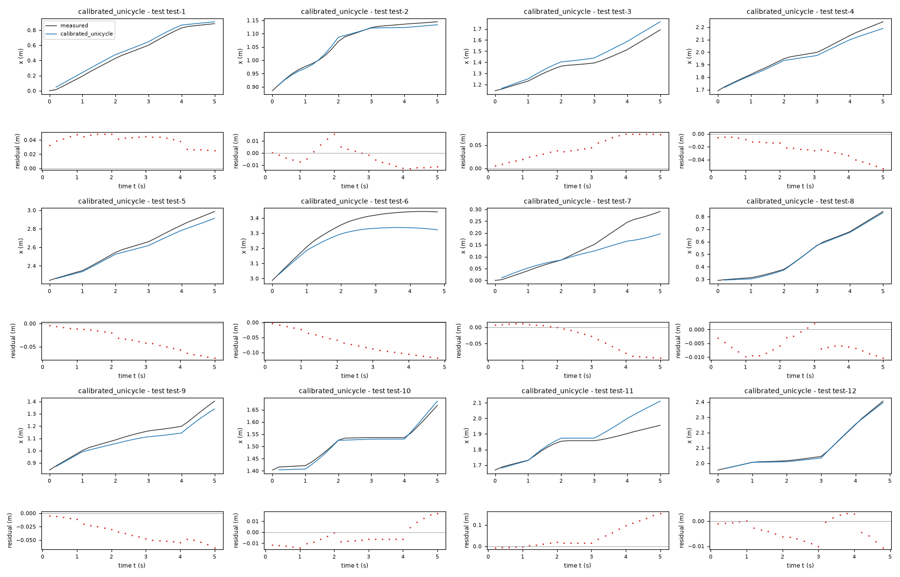
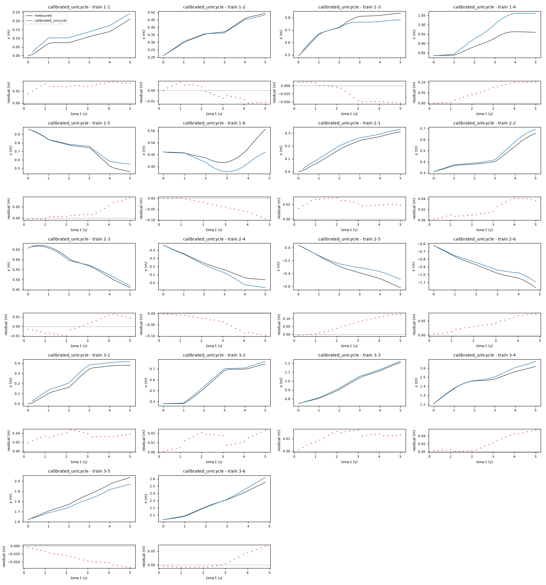
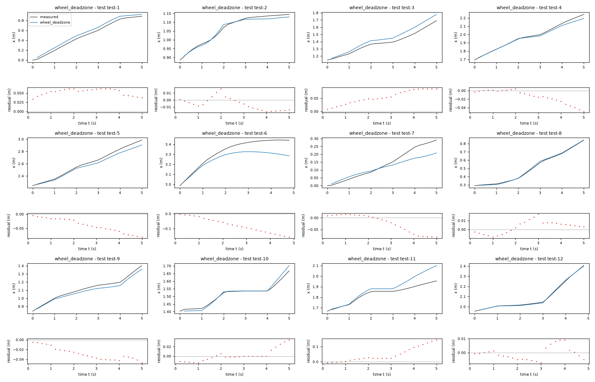
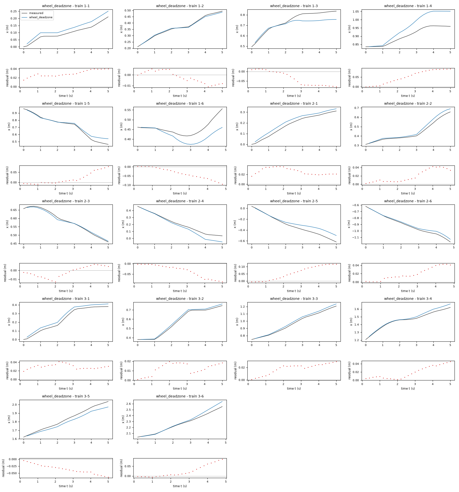
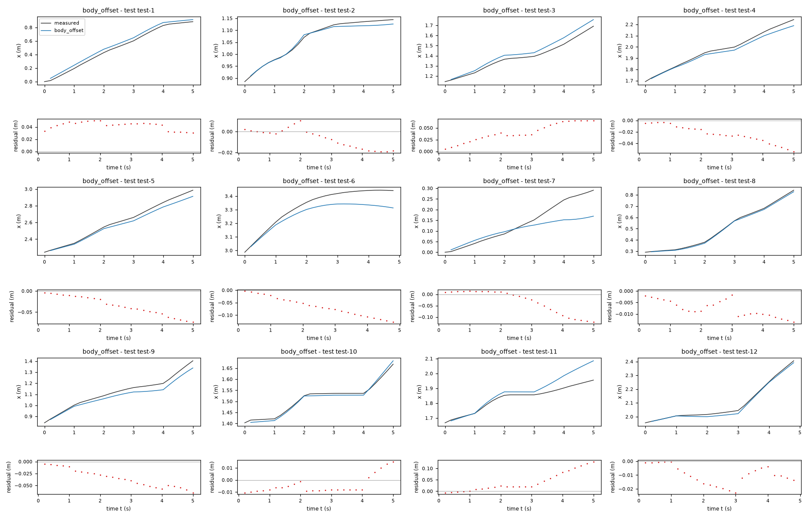
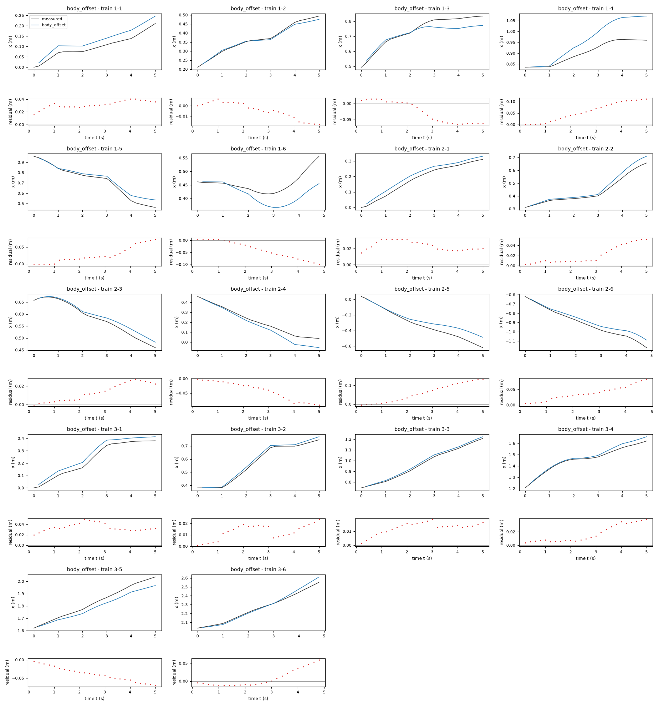
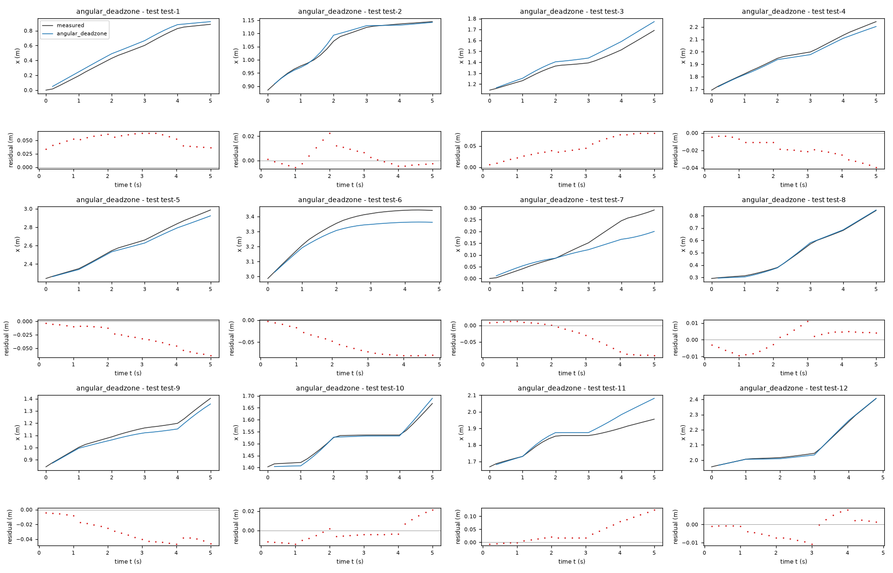
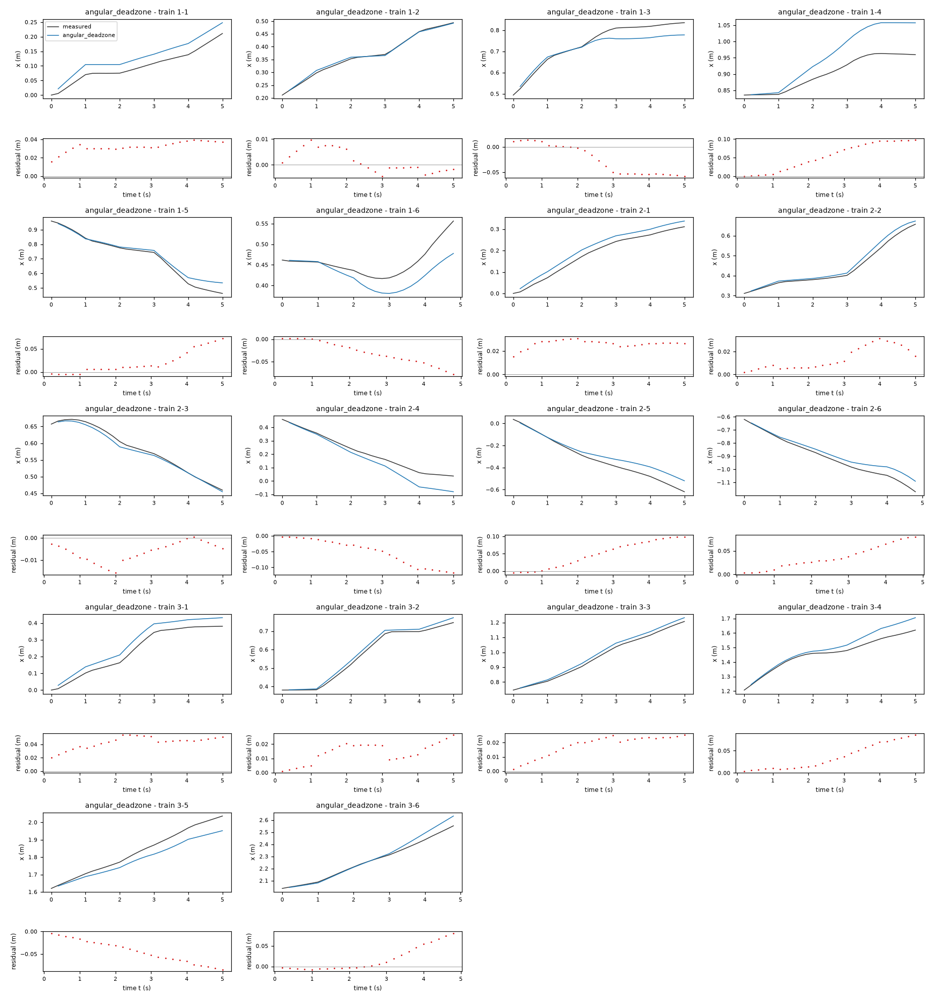

Motion model of a TurtleBot 2 mobile robot – run 5 of 5
Generated: 2026-10-07 23:51 UTC
Finished by the agent after 31 turns, 592 s of execution time and 1.38 USD. 4 models delivered, 4 evaluated.
- test_value in
<run>\transcript.jsonl: 0.971249 - test_value in
workspace/audit_deeper_results.txt: 0.971249 - test_value in
workspace/audit_increments.csv: -0.802676922992192
1 Models
| Model | Fitted parameters | Training error of x (m) | Test error of x (m) | |
|---|---|---|---|---|
| calibrated_unicycle | 2 | 0.03905 | 0.04236 | recommended by the agent |
| wheel_deadzone | 4 | 0.03739 | 0.04517 | |
| body_offset | 4 | 0.03961 | 0.04167 | |
| angular_deadzone | 3 | 0.03981 | 0.03821 | lowest test error |
The models are listed in the agent's order. Errors: root mean squared error between simulated and measured x, in m. Training data: 18 segments of 25 to 26 samples (447 scored samples); the harness cuts the training trajectories into segments of at most 25 simulated samples, the length of the test trajectories, so that the two errors are comparable. Test data, which the agent cannot access: 12 trajectories of 25 to 26 samples (298 scored samples). The agent recommends a model from the training data. The model with the lowest test error is found with the test data, in hindsight, among the 4 models of this run; the agent could not make this choice.
x RMSE is 0.029706 m, versus 0.029508 m for the four-parameter wheel dead-zone alternative, 0.029838 m for the body-frame correction, and 0.030819 m for the angular dead zone. The wheel model advantage is small and its fitted mixing length is unstable across trajectory splits, including one bound-active fit. With command-change-only starts the baseline validation RMSE is 0.032366 m versus 0.032973 m for the wheel alternative. These are internal validation, not hidden-test results. The pool tests genuinely different command-response and body-geometry structures, not multiple gain variants of the recommended form.ts = 0.2 s (fixed), gv = 0.8324 (fitted), gw = 0.7415 (fitted)x: 0.03905 m · test error: 0.04236 mEquations as written in the model file
x_next = x + ts*gv*v_f*cos(phi + ts*gw*v_a/2)
y_next = y + ts*gv*v_f*sin(phi + ts*gw*v_a/2)
phi_next = phi + ts*gw*v_a
Equations with the values substituted
Every parameter is replaced by its value with 4 significant digits.
Parameters and estimation
| Name | Value | Unit | Type | Description |
|---|---|---|---|---|
ts | 0.2 | s | fixed | Known sampling period from TASK.md; fixed rather than fitted so that velocity gains describe the command response. |
gv | 0.832441 | - | fitted | Effective forward command gain, jointly estimated with the other fitted parameters of this candidate from the stated rollout criterion. |
gw | 0.741472 | - | fitted | Effective angular command gain, jointly estimated with the other fitted parameters of this candidate from the stated rollout criterion. |
- Criterion minimized
Minimize the sum of squared uncorrected multi-step errors in
x, in m, at every predicted sample of the training windows. All horizons from one through 25 steps receive equal weight. The criterion matches the scored output and intended 5 s simulation rather than noisy one-step velocity estimates. Both gains are fitted in this one objective.- Data
Only data/train.csv: all three trajectories, 150 samples per trajectory. Heading
phiis unwrapped separately with numpy.unwrap to avoid artificial jumps across the angle boundary. There are 125 overlapping windows per trajectory, with local initial rows 0 through 124 (zero-based), each containing 25 transitions, or 5 s at the stated sampling period. Thus 375 windows and 9375 predicted state samples enter the final criterion. Every window starts at its loggedx,y, andphi, and then receives its 25 logged pairsv_f,v_a; no later pose resets occur inside a window. No windows cross experiment boundaries. No state measurements are smoothed, excluded as outliers, or imputed. The final-row commands have no observed successor and are not fitted.- Method
All fitted parameters are estimated simultaneously by nonlinear output-error least squares, using scipy.optimize.least_squares with the trust-region reflective algorithm,
method = 'trf', ordinary quadratic loss, a two-point finite-difference Jacobian, a maximum of 600 function evaluations per start, and dimensionless stopping tolerances , , . This bounded nonlinear method is needed because heading-dependent sine and cosine terms make multi-step predictions nonlinear in the gains; ordinary least squares on one-step differences would emphasize command transients and pose differencing error. Starting values are and , rounded from the independent settled-command audit of the training data; they are initial guesses only, not values held fixed. Bounds are and ; these dimensionless bounds allow attenuation and moderate amplification while excluding reversed command response. The procedure is deterministic and uses no random seed. The fitter key in fit_models.py islinear. SciPy least_squares API documentation, consulted during this round, describes the trust-region reflective method and linear least-squares loss.- Script
fit_models.py
The agent's explanation
Calibrated nonholonomic unicycle / differential-drive kinematic model with explicit midpoint translation integration. Frank Dellaert and Seth Hutchinson, Introduction to Robotics and Perception, section 5.2, Motion Model for the Differential Drive Robot (online text; consulted during this round).
The state columns x and y are world position in m, and phi is heading in rad. The inputs v_f and v_a are forward and angular velocity commands in m/s and rad/s. The known parameter ts is the sampling period in s. The fitted gains gv and gw are dimensionless. Forward body speed is ; angular speed is . The angle approximates the mean orientation during a sample. Position increments are its cosine and sine projections; integrates the angular speed.
The translation-invariant trigonometric form and no-lateral-motion constraint came from differential-drive physics, not symbolic search. Midpoint quadrature was selected after the measured transverse displacement RMS decreased from 0.000910 m with initial heading to 0.000176 m with measured midpoint heading over the 447 training transitions. The two calibrated gains allow logged motion to differ from commanded motion. I tried affine offsets, command powers, turn-speed coupling, response asymmetry, angular dead zones and wheel dead zones as separate exploratory families. Their small or unstable validation gains did not justify adding those terms to this baseline. Final windows include every available initial pose rather than only command-change rows to avoid conditioning calibration on one command phase. For this final structure, leave-one-trajectory-out validation refits on the other two trajectories using the same window criterion and reports x RMSE on all windows of the held-out trajectory; pooled held-out x RMSE is 0.029706 m. Training-window x RMSE is 0.029467 m. These are training-derived validation summaries, not test scores.
The identified response is an effective map of commands to logged odometry, not a separately identified map to true floor motion. State measurement error, command latency, and gain drift cannot be separated with these data. The required states lack velocity or previous commands, so command-change transients cannot be represented explicitly. All fits were made over 5 s training rollouts, not against inaccessible test data. Heading is propagated unwrapped; this is compatible with periodic translation and with wrapped initial headings, but there is no absolute heading correction. No claims are made outside the observed forward-only command regime or for long-distance extrapolation. Within-trajectory command-change residuals remain: for this final model the angular-speed residual RMS at command-change rows is 0.420696 rad/s, versus 0.081139 to 0.094116 rad/s at the other four block phases, computed on the 447 training transitions. The model deliberately averages over this missing memory.
Plots of simulated and measured x, and errors per trajectory


| Data | Trajectory | Scored samples | RMSE | NRMSE | R² | Failure |
|---|---|---|---|---|---|---|
| training data | 1-1 | 25 of 25 | 0.0297 | 0.5827 | 0.6604 | none |
| training data | 1-2 | 25 of 25 | 0.006905 | 0.08968 | 0.992 | none |
| training data | 1-3 | 25 of 25 | 0.03486 | 0.3847 | 0.852 | none |
| training data | 1-4 | 25 of 25 | 0.06716 | 1.349 | -0.8205 | none |
| training data | 1-5 | 25 of 25 | 0.04007 | 0.2686 | 0.9278 | none |
| training data | 1-6 | 24 of 24 | 0.04461 | 1.23 | -0.5118 | none |
| training data | 2-1 | 25 of 25 | 0.02278 | 0.2411 | 0.9419 | none |
| training data | 2-2 | 25 of 25 | 0.0246 | 0.2399 | 0.9425 | none |
| training data | 2-3 | 25 of 25 | 0.007703 | 0.1122 | 0.9874 | none |
| training data | 2-4 | 25 of 25 | 0.05271 | 0.4086 | 0.8331 | none |
| training data | 2-5 | 25 of 25 | 0.07786 | 0.4366 | 0.8094 | none |
| training data | 2-6 | 24 of 24 | 0.04543 | 0.3141 | 0.9013 | none |
| training data | 3-1 | 25 of 25 | 0.03572 | 0.2752 | 0.9243 | none |
| training data | 3-2 | 25 of 25 | 0.01479 | 0.1078 | 0.9884 | none |
| training data | 3-3 | 25 of 25 | 0.01258 | 0.08727 | 0.9924 | none |
| training data | 3-4 | 25 of 25 | 0.02917 | 0.2917 | 0.9149 | none |
| training data | 3-5 | 25 of 25 | 0.04224 | 0.3405 | 0.8841 | none |
| training data | 3-6 | 24 of 24 | 0.0289 | 0.186 | 0.9654 | none |
| test data | test-1 | 25 of 25 | 0.04074 | 0.1455 | 0.9788 | none |
| test data | test-2 | 25 of 25 | 0.00835 | 0.109 | 0.9881 | none |
| test data | test-3 | 25 of 25 | 0.05005 | 0.3422 | 0.8829 | none |
| test data | test-4 | 25 of 25 | 0.02748 | 0.1829 | 0.9666 | none |
| test data | test-5 | 25 of 25 | 0.04237 | 0.1901 | 0.9639 | none |
| test data | test-6 | 24 of 24 | 0.07737 | 0.6152 | 0.6215 | none |
| test data | test-7 | 25 of 25 | 0.04982 | 0.5375 | 0.7111 | none |
| test data | test-8 | 25 of 25 | 0.006825 | 0.03789 | 0.9986 | none |
| test data | test-9 | 25 of 25 | 0.0403 | 0.3045 | 0.9073 | none |
| test data | test-10 | 25 of 25 | 0.009689 | 0.1427 | 0.9796 | none |
| test data | test-11 | 25 of 25 | 0.06769 | 0.8655 | 0.2509 | none |
| test data | test-12 | 24 of 24 | 0.005395 | 0.04054 | 0.9984 | none |
RMSE of x in m; NRMSE = RMSE / σ and R² = 1 − SSE / Σ(y[k] − μ)², with μ and σ the mean and the population standard deviation of the measured output on the scored samples.
ts = 0.2 s (fixed), gv = 0.8969 (fitted), gw = 0.7895 (fitted), halftrack = 0.2143 m (fitted), fric = 0.01251 m/s (fitted)x: 0.03739 m · test error: 0.04517 mEquations as written in the model file
x_next = x + ts*(gv*((sign(v_f + halftrack*v_a)*Max(Abs(v_f + halftrack*v_a) - fric, 0)) + (sign(v_f - halftrack*v_a)*Max(Abs(v_f - halftrack*v_a) - fric, 0)))/2)*cos(phi + ts*(gw*((sign(v_f + halftrack*v_a)*Max(Abs(v_f + halftrack*v_a) - fric, 0)) - (sign(v_f - halftrack*v_a)*Max(Abs(v_f - halftrack*v_a) - fric, 0)))/(2*halftrack))/2)
y_next = y + ts*(gv*((sign(v_f + halftrack*v_a)*Max(Abs(v_f + halftrack*v_a) - fric, 0)) + (sign(v_f - halftrack*v_a)*Max(Abs(v_f - halftrack*v_a) - fric, 0)))/2)*sin(phi + ts*(gw*((sign(v_f + halftrack*v_a)*Max(Abs(v_f + halftrack*v_a) - fric, 0)) - (sign(v_f - halftrack*v_a)*Max(Abs(v_f - halftrack*v_a) - fric, 0)))/(2*halftrack))/2)
phi_next = phi + ts*(gw*((sign(v_f + halftrack*v_a)*Max(Abs(v_f + halftrack*v_a) - fric, 0)) - (sign(v_f - halftrack*v_a)*Max(Abs(v_f - halftrack*v_a) - fric, 0)))/(2*halftrack))
Equations with the values substituted
Every parameter is replaced by its value with 4 significant digits.
Parameters and estimation
| Name | Value | Unit | Type | Description |
|---|---|---|---|---|
ts | 0.2 | s | fixed | Known sampling period from TASK.md; fixed rather than fitted so that velocity gains describe the command response. |
gv | 0.896857 | - | fitted | Effective forward command gain, jointly estimated with the other fitted parameters of this candidate from the stated rollout criterion. |
gw | 0.789467 | - | fitted | Effective angular command gain, jointly estimated with the other fitted parameters of this candidate from the stated rollout criterion. |
halftrack | 0.214274 | m | fitted | Effective wheel-command mixing length in and . It is fitted as a response-shape parameter, not taken from a mechanical TurtleBot specification; radians are dimensionless in this geometric conversion. |
fric | 0.012505 | m/s | fitted | Shared subtractive wheel-speed dead-zone threshold; an effective static response parameter, not a direct measurement of friction. |
- Criterion minimized
Minimize the sum of squared uncorrected multi-step errors in both
xandy, each in m, equally weighted over every sample of every training window. This uses both components of the measured path to constrain a wheel-coordinate command mixing model; the final ranking still uses held-outxRMSE. All four fitted parameters enter the same joint objective.- Data
Only data/train.csv: all three trajectories, 150 samples per trajectory. Heading
phiis unwrapped separately with numpy.unwrap to avoid artificial jumps across the angle boundary. There are 125 overlapping windows per trajectory, with local initial rows 0 through 124 (zero-based), each containing 25 transitions, or 5 s at the stated sampling period. Thus 375 windows and 9375 predicted state samples enter the final criterion. Every window starts at its loggedx,y, andphi, and then receives its 25 logged pairsv_f,v_a; no later pose resets occur inside a window. No windows cross experiment boundaries. No state measurements are smoothed, excluded as outliers, or imputed. The final-row commands have no observed successor and are not fitted.- Method
All fitted parameters are estimated simultaneously by nonlinear output-error least squares, using scipy.optimize.least_squares with the trust-region reflective algorithm,
method = 'trf', ordinary quadratic loss, a two-point finite-difference Jacobian, a maximum of 600 function evaluations per start, and dimensionless stopping tolerances , , . This bounded nonlinear method is needed because heading-dependent sine and cosine terms make multi-step predictions nonlinear in the gains; ordinary least squares on one-step differences would emphasize command transients and pose differencing error. Nine deterministic initial vectors use , , each combination of startinghalftrackvalues 0.08, 0.115 and 0.18 m and startingfricvalues 0.003, 0.012 and 0.03 m/s. The gains come from rounded settled-command training regressions; the length and threshold grids are deliberately broad heuristic starting guesses, not claimed robot specifications. Bounds are dimensionless and , m, and m/s. These exclude reversed response, a singular mixing length and implausibly dominant dead zones for the observed command magnitudes. The lowest final training criterion across the nine starts is selected. Multi-start is used because the dead-zone branch transitions yield several local minima. The same nine starts are used for each held-out-trajectory refit; no test-dependent selection occurs. The procedure is deterministic and uses no random seed. The fitter key in fit_models.py iswheel. SciPy least_squares API documentation, consulted during this round, describes the trust-region reflective method and linear least-squares loss.- Script
fit_models.py
The agent's explanation
Differential-drive wheel-coordinate kinematics preceded by symmetric static dead-zone nonlinearities, followed by explicit midpoint integration. The wheel mixing relation follows Frank Dellaert and Seth Hutchinson, Introduction to Robotics and Perception, section 5.2, Motion Model for the Differential Drive Robot (online text; consulted during this round). The static subtractive thresholds are an identification hypothesis, not a claim made by that reference.
The states x, y, phi, inputs v_f, v_a, fixed time ts, and gains gv, gw have the meanings and units listed in the parameter rows and task. The length halftrack converts angular commands to equivalent left/right speed commands. The right response is , and the left response is , both in m/s. Their average, multiplied by gv, sets forward speed; their difference, multiplied by , sets angular speed in rad/s. The thresholds can suppress low-speed motion and couple the effective translation and turning responses. Negative wheel responses remain possible during turns even though logged forward commands are nonnegative. Midpoint heading projects the resulting speed to world coordinates.
The wheel sum/difference coordinates are physically motivated. Applying a shared subtractive threshold to each wheel was a hand-proposed static-friction alternative after the audit found nonlinear low-angular-command response and persistent block residuals. It was not discovered by a symbolic-regression package. A preliminary clipped-wheel saturation fit did not materially improve the independent settled-block regressions, so clipping/saturation is not used. The final model is retained because it improves multi-step path fit without dependence on absolute position or hidden states. For this final structure, leave-one-trajectory-out validation refits on the other two trajectories using the same window criterion and reports x RMSE on all windows of the held-out trajectory; pooled held-out x RMSE is 0.029508 m. Training-window x RMSE is 0.028928 m. These are training-derived validation summaries, not test scores.
The identified response is an effective map of commands to logged odometry, not a separately identified map to true floor motion. State measurement error, command latency, and gain drift cannot be separated with these data. The required states lack velocity or previous commands, so command-change transients cannot be represented explicitly. All fits were made over 5 s training rollouts, not against inaccessible test data. Heading is propagated unwrapped; this is compatible with periodic translation and with wrapped initial headings, but there is no absolute heading correction. No claims are made outside the observed forward-only command regime or for long-distance extrapolation. The wheel speeds were not measured, so halftrack and fric need not equal mechanical track length or friction. The final mixing length is near the allowed upper bound, and held-out-trajectory fits give mixing lengths from 0.069950 to 0.220000 m; this weak identification is why this slightly better aggregate validation score is not enough to recommend it above the simpler model. No explicit wheel acceleration or saturation is represented.
Plots of simulated and measured x, and errors per trajectory


| Data | Trajectory | Scored samples | RMSE | NRMSE | R² | Failure |
|---|---|---|---|---|---|---|
| training data | 1-1 | 25 of 25 | 0.03041 | 0.5967 | 0.6439 | none |
| training data | 1-2 | 25 of 25 | 0.005747 | 0.07464 | 0.9944 | none |
| training data | 1-3 | 25 of 25 | 0.05109 | 0.5638 | 0.6822 | none |
| training data | 1-4 | 25 of 25 | 0.0611 | 1.227 | -0.5067 | none |
| training data | 1-5 | 25 of 25 | 0.03392 | 0.2274 | 0.9483 | none |
| training data | 1-6 | 24 of 24 | 0.04667 | 1.286 | -0.6548 | none |
| training data | 2-1 | 25 of 25 | 0.02726 | 0.2885 | 0.9168 | none |
| training data | 2-2 | 25 of 25 | 0.02423 | 0.2363 | 0.9442 | none |
| training data | 2-3 | 25 of 25 | 0.006194 | 0.09021 | 0.9919 | none |
| training data | 2-4 | 25 of 25 | 0.04591 | 0.3558 | 0.8734 | none |
| training data | 2-5 | 25 of 25 | 0.07353 | 0.4123 | 0.83 | none |
| training data | 2-6 | 24 of 24 | 0.02434 | 0.1683 | 0.9717 | none |
| training data | 3-1 | 25 of 25 | 0.03045 | 0.2347 | 0.9449 | none |
| training data | 3-2 | 25 of 25 | 0.01367 | 0.09963 | 0.9901 | none |
| training data | 3-3 | 25 of 25 | 0.02022 | 0.1402 | 0.9803 | none |
| training data | 3-4 | 25 of 25 | 0.02385 | 0.2385 | 0.9431 | none |
| training data | 3-5 | 25 of 25 | 0.03901 | 0.3145 | 0.9011 | none |
| training data | 3-6 | 24 of 24 | 0.0381 | 0.2452 | 0.9399 | none |
| test data | test-1 | 25 of 25 | 0.0536 | 0.1915 | 0.9633 | none |
| test data | test-2 | 25 of 25 | 0.01029 | 0.1344 | 0.9819 | none |
| test data | test-3 | 25 of 25 | 0.05986 | 0.4093 | 0.8325 | none |
| test data | test-4 | 25 of 25 | 0.02073 | 0.1379 | 0.981 | none |
| test data | test-5 | 25 of 25 | 0.04572 | 0.2051 | 0.9579 | none |
| test data | test-6 | 24 of 24 | 0.08994 | 0.7152 | 0.4885 | none |
| test data | test-7 | 25 of 25 | 0.04364 | 0.4708 | 0.7783 | none |
| test data | test-8 | 25 of 25 | 0.007457 | 0.0414 | 0.9983 | none |
| test data | test-9 | 25 of 25 | 0.03089 | 0.2334 | 0.9455 | none |
| test data | test-10 | 25 of 25 | 0.0131 | 0.1929 | 0.9628 | none |
| test data | test-11 | 25 of 25 | 0.06606 | 0.8447 | 0.2865 | none |
| test data | test-12 | 24 of 24 | 0.004732 | 0.03556 | 0.9987 | none |
RMSE of x in m; NRMSE = RMSE / σ and R² = 1 − SSE / Σ(y[k] − μ)², with μ and σ the mean and the population standard deviation of the measured output on the scored samples.
ts = 0.2 s (fixed), gv = 0.8357 (fitted), gw = 0.7859 (fitted), lever = -0.01838 m (fitted), bw = 0.003987 rad/s (fitted)x: 0.03961 m · test error: 0.04167 mEquations as written in the model file
x_next = x + ts*(gv*v_f*cos(phi + ts*(gw*v_a + bw)/2) - lever*(gw*v_a + bw)*sin(phi + ts*(gw*v_a + bw)/2))
y_next = y + ts*(gv*v_f*sin(phi + ts*(gw*v_a + bw)/2) + lever*(gw*v_a + bw)*cos(phi + ts*(gw*v_a + bw)/2))
phi_next = phi + ts*(gw*v_a + bw)
Equations with the values substituted
Every parameter is replaced by its value with 4 significant digits.
Parameters and estimation
| Name | Value | Unit | Type | Description |
|---|---|---|---|---|
ts | 0.2 | s | fixed | Known sampling period from TASK.md; fixed rather than fitted so that velocity gains describe the command response. |
gv | 0.835711 | - | fitted | Effective forward command gain, jointly estimated with the other fitted parameters of this candidate from the stated rollout criterion. |
gw | 0.785869 | - | fitted | Effective angular command gain, jointly estimated with the other fitted parameters of this candidate from the stated rollout criterion. |
lever | -0.0183822 | m | fitted | Effective angular-to-lateral velocity coupling length; it can summarize a tracked-point offset or compensate unrepresented timing errors, and is not claimed to identify actual robot geometry. |
bw | 0.00398734 | rad/s | fitted | Constant angular-velocity bias in the effective odometry response. |
- Criterion minimized
Minimize the sum of squared uncorrected multi-step errors in
x, in m, with equal weight for all predicted samples of the windows. The four fitted parameters are fitted jointly. This tests whether an effective body-frame angular-to-lateral correction improves the scored coordinate without changing translation invariance.- Data
Only data/train.csv: all three trajectories, 150 samples per trajectory. Heading
phiis unwrapped separately with numpy.unwrap to avoid artificial jumps across the angle boundary. There are 125 overlapping windows per trajectory, with local initial rows 0 through 124 (zero-based), each containing 25 transitions, or 5 s at the stated sampling period. Thus 375 windows and 9375 predicted state samples enter the final criterion. Every window starts at its loggedx,y, andphi, and then receives its 25 logged pairsv_f,v_a; no later pose resets occur inside a window. No windows cross experiment boundaries. No state measurements are smoothed, excluded as outliers, or imputed. The final-row commands have no observed successor and are not fitted.- Method
All fitted parameters are estimated simultaneously by nonlinear output-error least squares, using scipy.optimize.least_squares with the trust-region reflective algorithm,
method = 'trf', ordinary quadratic loss, a two-point finite-difference Jacobian, a maximum of 600 function evaluations per start, and dimensionless stopping tolerances , , . This bounded nonlinear method is needed because heading-dependent sine and cosine terms make multi-step predictions nonlinear in the gains; ordinary least squares on one-step differences would emphasize command transients and pose differencing error. Starting values are , , m and rad/s. The gain guesses are rounded settled-command training regressions; zero coupling and zero bias start at the standard centered no-drift model. Bounds are dimensionless and , m and rad/s. The symmetric latter bounds permit either correction sign while limiting their magnitude; these are conservative fitting constraints, not external geometry measurements. The procedure is deterministic and uses no random seed. The fitter key in fit_models.py isbody. SciPy least_squares API documentation, consulted during this round, describes the trust-region reflective method and linear least-squares loss.- Script
fit_models.py
The agent's explanation
Planar rigid-body kinematics with nonzero body-frame lateral velocity proportional to yaw rate, using explicit midpoint integration. The centered differential-drive component follows Frank Dellaert and Seth Hutchinson, Introduction to Robotics and Perception, section 5.2, Motion Model for the Differential Drive Robot (online text; consulted during this round). The added angular-to-lateral term is derived from the velocity of a body-fixed tracking point, with an effective rather than mechanically fixed offset.
The state x, y is world position in m and phi is heading in rad; v_f, v_a are the commanded velocities, and ts is the time increment. The body-frame forward velocity is . Angular velocity is in rad/s, where gw is a dimensionless gain and bw a constant bias. The effective lateral velocity is in m/s, treating radians as dimensionless in the rigid-body length conversion. Its world contributions are and . The added terms shift translation sideways during turns, with a sign determined by lever; no physical offset is asserted.
The baseline residuals are concentrated near command changes and can accumulate into path-direction errors. I tried a calibrated quadrature phase, then this rigid-body extension as a parsimonious way to represent yaw-dependent translation correction in admissible current-state expressions. The angular bias permits persistent effective drift. The structure was proposed by physical geometry and residual reasoning; all values were subsequently fit by output error. The very small directly measured transverse displacement does not establish a real tracked-point offset. This is retained as an effective prediction model rather than an identified mechanical offset. For this final structure, leave-one-trajectory-out validation refits on the other two trajectories using the same window criterion and reports x RMSE on all windows of the held-out trajectory; pooled held-out x RMSE is 0.029838 m. Training-window x RMSE is 0.028925 m. These are training-derived validation summaries, not test scores.
The identified response is an effective map of commands to logged odometry, not a separately identified map to true floor motion. State measurement error, command latency, and gain drift cannot be separated with these data. The required states lack velocity or previous commands, so command-change transients cannot be represented explicitly. All fits were made over 5 s training rollouts, not against inaccessible test data. Heading is propagated unwrapped; this is compatible with periodic translation and with wrapped initial headings, but there is no absolute heading correction. No claims are made outside the observed forward-only command regime or for long-distance extrapolation. The data do not distinguish timing compensation from an actual body-frame offset, and lever should not be used to infer sensor mounting geometry. Both the coupling and angular bias vary across trajectory-held-out fits. The slightly smaller training path error does not translate into a decisive validation improvement; the simpler model is preferred.
Plots of simulated and measured x, and errors per trajectory


| Data | Trajectory | Scored samples | RMSE | NRMSE | R² | Failure |
|---|---|---|---|---|---|---|
| training data | 1-1 | 25 of 25 | 0.03213 | 0.6304 | 0.6026 | none |
| training data | 1-2 | 25 of 25 | 0.008856 | 0.115 | 0.9868 | none |
| training data | 1-3 | 25 of 25 | 0.0416 | 0.4591 | 0.7892 | none |
| training data | 1-4 | 25 of 25 | 0.06876 | 1.381 | -0.908 | none |
| training data | 1-5 | 25 of 25 | 0.03548 | 0.2378 | 0.9435 | none |
| training data | 1-6 | 24 of 24 | 0.05226 | 1.44 | -1.075 | none |
| training data | 2-1 | 25 of 25 | 0.02443 | 0.2585 | 0.9332 | none |
| training data | 2-2 | 25 of 25 | 0.02729 | 0.2661 | 0.9292 | none |
| training data | 2-3 | 25 of 25 | 0.0162 | 0.2359 | 0.9443 | none |
| training data | 2-4 | 25 of 25 | 0.05195 | 0.4026 | 0.8379 | none |
| training data | 2-5 | 25 of 25 | 0.07691 | 0.4312 | 0.814 | none |
| training data | 2-6 | 24 of 24 | 0.04398 | 0.3041 | 0.9076 | none |
| training data | 3-1 | 25 of 25 | 0.03524 | 0.2716 | 0.9263 | none |
| training data | 3-2 | 25 of 25 | 0.01434 | 0.1045 | 0.9891 | none |
| training data | 3-3 | 25 of 25 | 0.01328 | 0.09208 | 0.9915 | none |
| training data | 3-4 | 25 of 25 | 0.02106 | 0.2106 | 0.9557 | none |
| training data | 3-5 | 25 of 25 | 0.04351 | 0.3508 | 0.877 | none |
| training data | 3-6 | 24 of 24 | 0.0245 | 0.1577 | 0.9751 | none |
| test data | test-1 | 25 of 25 | 0.04276 | 0.1527 | 0.9767 | none |
| test data | test-2 | 25 of 25 | 0.01099 | 0.1435 | 0.9794 | none |
| test data | test-3 | 25 of 25 | 0.04448 | 0.3041 | 0.9075 | none |
| test data | test-4 | 25 of 25 | 0.02813 | 0.1872 | 0.965 | none |
| test data | test-5 | 25 of 25 | 0.0414 | 0.1857 | 0.9655 | none |
| test data | test-6 | 24 of 24 | 0.07554 | 0.6007 | 0.6392 | none |
| test data | test-7 | 25 of 25 | 0.06007 | 0.6481 | 0.58 | none |
| test data | test-8 | 25 of 25 | 0.008374 | 0.04649 | 0.9978 | none |
| test data | test-9 | 25 of 25 | 0.03917 | 0.296 | 0.9124 | none |
| test data | test-10 | 25 of 25 | 0.008504 | 0.1252 | 0.9843 | none |
| test data | test-11 | 25 of 25 | 0.05803 | 0.742 | 0.4494 | none |
| test data | test-12 | 24 of 24 | 0.01203 | 0.09036 | 0.9918 | none |
RMSE of x in m; NRMSE = RMSE / σ and R² = 1 − SSE / Σ(y[k] − μ)², with μ and σ the mean and the population standard deviation of the measured output on the scored samples.
ts = 0.2 s (fixed), gv = 0.8504 (fitted), gw = 0.8428 (fitted), dead = 0.06977 rad/s (fitted)x: 0.03981 m · test error: 0.03821 mEquations as written in the model file
x_next = x + ts*gv*v_f*cos(phi + ts*(gw*sign(v_a)*Max(Abs(v_a) - dead, 0))/2)
y_next = y + ts*gv*v_f*sin(phi + ts*(gw*sign(v_a)*Max(Abs(v_a) - dead, 0))/2)
phi_next = phi + ts*(gw*sign(v_a)*Max(Abs(v_a) - dead, 0))
Equations with the values substituted
Every parameter is replaced by its value with 4 significant digits.
Parameters and estimation
| Name | Value | Unit | Type | Description |
|---|---|---|---|---|
ts | 0.2 | s | fixed | Known sampling period from TASK.md; fixed rather than fitted so that velocity gains describe the command response. |
gv | 0.850373 | - | fitted | Effective forward command gain, jointly estimated with the other fitted parameters of this candidate from the stated rollout criterion. |
gw | 0.842782 | - | fitted | Effective angular command gain, jointly estimated with the other fitted parameters of this candidate from the stated rollout criterion. |
dead | 0.0697684 | rad/s | fitted | Subtractive threshold on the magnitude of the angular command, jointly fitted with both gains from weighted state-rollout output error. |
- Criterion minimized
Minimize the sum of squared multi-step residuals in
x,y, and headingphi, with angular residuals multiplied by a fixed scale of 0.25 m/rad. Thus all residual components entering the criterion have units m. The scale is an a priori moderate path-sensitivity weight, not an estimated noise variance or a parameter in the state expressions. It lets heading data constrain the angular dead zone without dominating position error; it is also consistent with the intended short path lengths. All samples of all windows are equally weighted and all three fitted parameters are estimated jointly.- Data
Only data/train.csv: all three trajectories, 150 samples per trajectory. Heading
phiis unwrapped separately with numpy.unwrap to avoid artificial jumps across the angle boundary. There are 125 overlapping windows per trajectory, with local initial rows 0 through 124 (zero-based), each containing 25 transitions, or 5 s at the stated sampling period. Thus 375 windows and 9375 predicted state samples enter the final criterion. Every window starts at its loggedx,y, andphi, and then receives its 25 logged pairsv_f,v_a; no later pose resets occur inside a window. No windows cross experiment boundaries. No state measurements are smoothed, excluded as outliers, or imputed. The final-row commands have no observed successor and are not fitted.- Method
All fitted parameters are estimated simultaneously by nonlinear output-error least squares, using scipy.optimize.least_squares with the trust-region reflective algorithm,
method = 'trf', ordinary quadratic loss, a two-point finite-difference Jacobian, a maximum of 600 function evaluations per start, and dimensionless stopping tolerances , , . This bounded nonlinear method is needed because heading-dependent sine and cosine terms make multi-step predictions nonlinear in the gains; ordinary least squares on one-step differences would emphasize command transients and pose differencing error. Starting values are , , rad/s. These approximate the training settled-block linear forward and exploratory angular-dead-zone fits reported in audit_deeper.py; they are only initial guesses. Bounds are dimensionless and , with rad/s. These enforce monotone response and prevent a threshold larger than most of the angular-command range. The procedure is deterministic and uses no random seed. The fitter key in fit_models.py isdeadzone. SciPy least_squares API documentation, consulted during this round, describes the trust-region reflective method and linear least-squares loss.- Script
fit_models.py
The agent's explanation
Nonholonomic unicycle kinematics cascaded with a symmetric static angular dead zone and explicit midpoint integration. The kinematic part follows Frank Dellaert and Seth Hutchinson, Introduction to Robotics and Perception, section 5.2, Motion Model for the Differential Drive Robot (online text; consulted during this round). The threshold is a hand-proposed static command-response nonlinearity.
The state x, y is world position in m, phi is heading in rad, and v_f, v_a are commands in m/s and rad/s. The fixed parameter ts is the time increment, while gv and gw are fitted dimensionless gains. Forward speed is . The angular response vanishes when command magnitude is below the fitted threshold dead, in rad/s, and otherwise increases linearly in magnitude with the original command sign. This is an effective low-command turning attenuation, not a measured actuator friction law. Its integrated midpoint angle determines the two world displacement projections.
In the independent audit, 90 settled command blocks supported a subtractive angular dead zone more than a through-origin linear angular map: angular-speed residual RMSE decreased from 0.077680 rad/s to 0.071723 rad/s on those same block means. This motivated a distinct low-command model, whereas wheel-coordinate dead zones allow forward/turn coupling. No symbolic search was used. In final fitting, heading error is included to keep the threshold tied to measured turning, instead of choosing a nearly zero threshold from x alone. The model is retained as a physically plausible low-command alternative, despite worse held-out x accuracy. For this final structure, leave-one-trajectory-out validation refits on the other two trajectories using the same window criterion and reports x RMSE on all windows of the held-out trajectory; pooled held-out x RMSE is 0.030819 m. Training-window x RMSE is 0.030343 m. These are training-derived validation summaries, not test scores.
The identified response is an effective map of commands to logged odometry, not a separately identified map to true floor motion. State measurement error, command latency, and gain drift cannot be separated with these data. The required states lack velocity or previous commands, so command-change transients cannot be represented explicitly. All fits were made over 5 s training rollouts, not against inaccessible test data. Heading is propagated unwrapped; this is compatible with periodic translation and with wrapped initial headings, but there is no absolute heading correction. No claims are made outside the observed forward-only command regime or for long-distance extrapolation. No low-command static threshold can reconstruct the pronounced angular lag when commands change. The threshold changes across held-out-trajectory fits, and it should not be treated as a precise hardware specification. Its higher held-out x RMSE is a reason not to recommend it for the scored application.
Plots of simulated and measured x, and errors per trajectory


| Data | Trajectory | Scored samples | RMSE | NRMSE | R² | Failure |
|---|---|---|---|---|---|---|
| training data | 1-1 | 25 of 25 | 0.0326 | 0.6396 | 0.5909 | none |
| training data | 1-2 | 25 of 25 | 0.004517 | 0.05867 | 0.9966 | none |
| training data | 1-3 | 25 of 25 | 0.03753 | 0.4142 | 0.8285 | none |
| training data | 1-4 | 25 of 25 | 0.06476 | 1.301 | -0.6929 | none |
| training data | 1-5 | 25 of 25 | 0.0316 | 0.2118 | 0.9551 | none |
| training data | 1-6 | 24 of 24 | 0.03838 | 1.058 | -0.1189 | none |
| training data | 2-1 | 25 of 25 | 0.02648 | 0.2803 | 0.9214 | none |
| training data | 2-2 | 25 of 25 | 0.01697 | 0.1655 | 0.9726 | none |
| training data | 2-3 | 25 of 25 | 0.007576 | 0.1103 | 0.9878 | none |
| training data | 2-4 | 25 of 25 | 0.06546 | 0.5074 | 0.7426 | none |
| training data | 2-5 | 25 of 25 | 0.06083 | 0.3411 | 0.8837 | none |
| training data | 2-6 | 24 of 24 | 0.04393 | 0.3037 | 0.9077 | none |
| training data | 3-1 | 25 of 25 | 0.04407 | 0.3396 | 0.8847 | none |
| training data | 3-2 | 25 of 25 | 0.01585 | 0.1156 | 0.9866 | none |
| training data | 3-3 | 25 of 25 | 0.0195 | 0.1353 | 0.9817 | none |
| training data | 3-4 | 25 of 25 | 0.04584 | 0.4584 | 0.7899 | none |
| training data | 3-5 | 25 of 25 | 0.05049 | 0.407 | 0.8343 | none |
| training data | 3-6 | 24 of 24 | 0.0343 | 0.2207 | 0.9513 | none |
| test data | test-1 | 25 of 25 | 0.05284 | 0.1887 | 0.9644 | none |
| test data | test-2 | 25 of 25 | 0.007905 | 0.1032 | 0.9893 | none |
| test data | test-3 | 25 of 25 | 0.05252 | 0.359 | 0.8711 | none |
| test data | test-4 | 25 of 25 | 0.02111 | 0.1404 | 0.9803 | none |
| test data | test-5 | 25 of 25 | 0.03453 | 0.1549 | 0.976 | none |
| test data | test-6 | 24 of 24 | 0.05924 | 0.4711 | 0.7781 | none |
| test data | test-7 | 25 of 25 | 0.0493 | 0.5318 | 0.7172 | none |
| test data | test-8 | 25 of 25 | 0.005849 | 0.03247 | 0.9989 | none |
| test data | test-9 | 25 of 25 | 0.03258 | 0.2462 | 0.9394 | none |
| test data | test-10 | 25 of 25 | 0.009895 | 0.1457 | 0.9788 | none |
| test data | test-11 | 25 of 25 | 0.05599 | 0.716 | 0.4874 | none |
| test data | test-12 | 24 of 24 | 0.00546 | 0.04102 | 0.9983 | none |
RMSE of x in m; NRMSE = RMSE / σ and R² = 1 − SSE / Σ(y[k] − μ)², with μ and σ the mean and the population standard deviation of the measured output on the scored samples.
2 Course of the run
The system prompt, TASK.md and FORMAT.md that the agent received are shown on the page of the experiment.
0:00Harness: opening message to the agent
10:05Read TASK.md0.01
5,474 input and 19 output tokens; 0.011 USD for this turn.
TASK.md
output as sent to the agent (3,738 characters, 37 lines)
[TASK.md: 3711 characters] # Task: Motion model of a TurtleBot 2 mobile robot ## 1 System and intended use A TurtleBot 2 differential-drive mobile robot moves on a flat floor. Its on-board odometry logs the pose of the robot: the position x, y and the heading phi. The robot receives two commands, the forward velocity v_f and the angular velocity v_a. Each pair of commands is held for 5 samples (1 s) and is then replaced by a new random pair. The logged pose is known to carry a considerable measurement error. The model will be used to simulate the x position of the robot over about 5 s from one logged pose and the sequence of commands, without correction by later pose measurements. ## 2 Data `data/train.csv` holds 450 samples: 3 trajectories of 150 consecutive samples; the column `trajectory` holds the trajectory number. Row k+1 of a trajectory is the sample that follows row k; different trajectories are separate experiments. The sampling period is T_s = 0.2 s. | Column | Role | Unit | Training range | Description | |---|---|---|---|---| | `x` | state, scored output | m | not declared | position | | `y` | state | m | not declared | position | | `phi` | state | rad | not declared | heading, wrapped to (-pi, pi]; phi = 0 points along the x axis | | `v_f` | input | m/s | not declared | forward velocity command | | `v_a` | input | rad/s | not declared | angular velocity command | ## 3 What you deliver A candidate is a discrete-time model of 3 closed-form expressions, `x_next`, `y_next` and `phi_next`: the states `x`, `y` and `phi` at sample k+1 as functions of `x`, `y`, `phi`, `v_f` and `v_a` at sample k. `FORMAT.md` states how an expression is written and what it may contain. Write one file per candidate, `models/<label>.json`; `FORMAT.md` describes the file and gives an example. Write also `models/pool.json`, which lists the labels of your candidates in the order in which they are to be evaluated. You can recommend one candidate that you consider the best-performing. `models/pool.json` then names that candidate and gives your reason. Run `python check_submission.py` to check your files: it prints every error with its location, so that you can correct it. At most 10 candidates are evaluated, in the order of `models/pool.json`. Consider various identification approaches, for example physically motivated structures, symbolic-regression search or sparse regression; before fitting, list the approaches and the model families you will try. Build the pool from structurally different model families, not from variations of one form. Examine the residuals of your best candidates and try structures that can represent what they show. Include only candidates you would defend as a model of the system. ## 4 Evaluation The harness, the software that runs this task, evaluates every candidate on test data that you cannot access. For each test trajectory it starts from the first logged state and applies the expressions repeatedly with the logged inputs; a simulated state is never replaced by a later measurement. The score is the root mean squared error (RMSE) between simulated and logged `x`, in m, over all test samples after the first of each trajectory. An evaluation fails when a value is not finite, when `x` leaves [-100, 100] m or `y` leaves [-100, 100] m or `phi` leaves [-1000, 1000] rad, or when it takes longer than 60 s. ## 5 Limits and completion One round: 60 turns, 3600 s of execution time, 10 USD; a turn is one response of yours. When the files pass the check, send the exact message DONE. If the harness's check of the files then fails, you receive its report and may correct the files once. If a limit ends the round earlier, the complete candidate files are evaluated.
20:06Read FORMAT.md0.02
6,380 input and 19 output tokens; 0.013 USD for this turn.
FORMAT.md
output as sent to the agent (8,159 characters, 128 lines)
[FORMAT.md: 8130 characters]
# Model file format
This file is the same for every task. `TASK.md` names the expression keys, the variables and the permitted functions of your task.
## Candidate file `models/<label>.json`
Write one JSON file per candidate. The label is the file name: a letter, then up to 31 letters, digits, `_` or `-`. The file has these fields and no others:
- `expressions`: one expression text per expression key named in `TASK.md`.
- `parameters`: one row per parameter. A parameter is a constant of the expressions that you name yourself, for example `a1`. Its row has
- `name`: the name used in the expressions: a letter, then letters, digits or `_`; it differs from every column, expression key, constant and function name;
- `value`: the numerical value;
- `unit`: the unit; `-` for a dimensionless quantity;
- `type`: `fitted` (estimated from data), `fixed` (chosen or known, not estimated) or `tied` (computed from other parameters by `equation`);
- `description`: what the parameter represents; for a fixed value, where the value comes from and why it was chosen; for a value taken over from another candidate or an earlier fit, from which one;
- `equation`: for a tied parameter only: its defining equation over other parameters, given constants and numbers.
- `estimation`: how the values of the fitted parameters of this candidate were obtained and why in this way; for every fitted parameter it must be clear how its value was found. Write the record for this candidate model, not for the run as a whole: its own criterion, data, method and starting values, with the reasons that apply to this candidate. The record has
- `criterion`: what was minimized, on which variable, and why this criterion;
- `data`: the files, trajectories or rows used, and the reason when some were left out;
- `method`: how the values were estimated: the estimation method by its established name and the software function, and why this method and not another; the starting values as numbers, or the statement that the method needs none, and why these starting values; whether all fitted parameters were estimated together in one step and, if not, which parameters were estimated in which step, with which criterion, and why; the seeds where they apply;
- `script`: the file in the working directory that reproduces the values.
- `discussion`: four texts, in this order:
- `family`: the model family by its established name, with a reference where you know one;
- `interpretation`: what each term represents in the system; describe a term without a known physical meaning by its mathematical effect;
- `origin`: how you arrived at the structure of this expression, as distinct from its parameter values, which `estimation` covers: say which of its terms, variables and operators came from physical reasoning, which from a search and which from a guess, what you tried before, and what made you change it;
- `limitations`: what the data do not determine and where the model is not expected to hold.
- `answers`: only when `TASK.md` asks questions about the candidates: one text per question identifier.
- `predecessor`: only in a later round of an interactive session, and optional: the label of the candidate of the previous pool that this candidate revises.
## Expressions
An expression is a text in Python syntax. It may contain:
- the variables that `TASK.md` names as the arguments of the expression;
- your parameters, each with a row in `parameters`;
- the constants `pi` and `E`, the given constants that `TASK.md` lists, and numbers;
- these operators and functions, unless `TASK.md` states another list: `+` `-` `*` `/` `**` `sin` `cos` `tan` `asin` `acos` `atan` `atan2` `sinh` `cosh` `tanh` `exp` `log` `sqrt` `Abs` `sign` `Min` `Max` `Piecewise`.
`**` is the power (not `^`), and `log` is the natural logarithm. `Piecewise` takes pairs `(value, condition)` and ends with a pair `(value, True)`, for example `Piecewise((a1*q, (q > 0) & (q < 1)), (0, True))`. A condition is a comparison `<`, `<=`, `>`, `>=`, `Eq(a, b)` or `Ne(a, b)`, each in parentheses, combined with `&`, `|` and `~`.
A number that fixes the form of the expression, such as 2 in `q**2`, may be written directly. A value obtained by estimation is a parameter with a row in `parameters`, never a number written into the expression. Every parameter row must be used in an expression or in a tie equation.
## Pool file `models/pool.json`
- `order`: the candidate labels in your order;
- `recommended`: the label of the candidate you recommend, or `null` when you recommend none;
- `reason`: why you recommend this candidate, or why you recommend none.
Every file `models/<label>.json` must be listed in `order`.
## Example
An invented task with one input `q` and one output `z`, whose expression key is `z`. The example shows the format only: its model is not a proposal, and its discussion texts say what your texts must contain.
`models/M01.json`:
```json
{
"expressions": {
"z": "a1*q + b1*q**2/n0"
},
"parameters": [
{
"name": "a1",
"value": 0.5,
"unit": "-",
"type": "fitted",
"description": "coefficient of `q`"
},
{
"name": "n0",
"value": 2.0,
"unit": "-",
"type": "fixed",
"description": "normalisation of the quadratic term; chosen as the largest value of `q` in the training data, so that `b1` has the scale of `a1`"
},
{
"name": "b1",
"value": 1.0,
"unit": "-",
"type": "tied",
"equation": "2*a1",
"description": "coefficient of `q**2/n0`, tied to `a1` by the assumption stated in the discussion"
}
],
"estimation": {
"criterion": "sum of squared differences between the expression `z` and the column `z`, because the expression gives `z` directly and no row is known to be more accurate than another",
"data": "data/train.csv, all rows",
"method": "The value of `a1` was estimated by ordinary least squares with numpy.linalg.lstsq. With `b1 = 2*a1` the expression is linear in the one fitted parameter `a1`, so the least-squares solution is obtained directly and an iterative method is not needed; for the same reason the method needs no starting values. `a1` is the only fitted parameter and was estimated in one step. The method uses no random numbers, so that no seed applies.",
"script": "fit_M01.py"
},
"discussion": {
"family": "State the model family by its established name.",
"interpretation": "State what each term represents.",
"origin": "State how you arrived at this expression.",
"limitations": "State what the data do not determine and where the model is not expected to hold."
}
}
```
`models/pool.json`:
```json
{
"order": [
"M01"
],
"recommended": "M01",
"reason": "State why you recommend this candidate, or why you recommend none."
}
```
## Checking
`python check_submission.py` checks every file against these rules and evaluates each expression on the training data. It names each error with its rule. Correct the errors and run it again.
## Writing
- Define every symbol at first use.
- Give every number with its unit and the data it was computed on.
- Name methods by their established names.
- Cite a reference for a model family or a method where one applies. Cite only references you are certain exist, and say when you cite from memory without having checked the source.
- Say what is estimated, what is assumed and what is unknown.
- Give a brief reason for every choice you made: a structure, a criterion, a method, a starting value, a fixed value, a term you removed.
- Write every expression inside a text between backticks, in the syntax of the expressions, for example `a1*q**2`; write it out, do not describe it in words. This holds also for a single parameter, column or expression name, such as `a1`, for a value given to one, such as `a1 = 0.5`, and for a range, such as `0 <= a1 <= 2`. A unit follows outside the backticks; a dimensionless value has no unit and no hyphen after it.
- Describe a term without a known physical meaning by its mathematical effect; do not invent a meaning.
30:08Listed the files0.04
8,432 input and 14 output tokens; 0.017 USD for this turn.
{}output as sent to the agent (162 characters, 8 lines)
[.: 7 entries] data/ models/ FORMAT.md 8130 bytes TASK.md 3711 bytes check_config.json 1092 bytes check_submission.py 102476 bytes data/train.csv 41638 bytes
40:17Wrote PLAN.md0.06
8,509 input and 350 output tokens (of which 50 reasoning); 0.021 USD for this turn.
reasoning summary (written by the model provider's summarizer; the model's own reasoning is not available)
Planning commentary and analysis
I need to set a plan before diving into writing the commentary and organizing the file. I think I have a budget of around 26,000 tokens with about 28,000 or, maybe it’s actually 30,000 tokens to work with. I should have enough time. It’s important to understand the data thoroughly across multiple time horizons. I could use a helper to inspect any noise or structure separately to ensure clarity. That should help!
I will compare four model families: calibrated unicycle kinematics, a body-frame model with lateral motion, nonlinear command-response models, and a sparse heading-dependent extension. I’ll fit and validate them using multi-step rollouts, inspect residuals for systematic errors, and keep only structures supported by the training trajectories.
PLAN.md
file content written (1,132 characters)
Identification plan (recorded before fitting) Use only data/train.csv. Compare (1) physical differential-drive/unicycle kinematics, both forward-Euler and constant-twist integration; (2) an affine body-frame velocity map permitting lateral translation and angular bias; (3) parsimonious nonlinear command maps, including cubic response and forward-speed-dependent turning; (4) a sparse regression extension using low-order command and periodic-heading features if residuals justify it. No absolute-position dependence is planned because the planar system should be translation invariant. Assess short (about 5 s) uncorrected rollouts, leave-one-trajectory-out validation, and long training rollouts. Inspect heading increments, body-frame displacement residuals, and command dependence. Pose measurement error motivates multi-step output-error fitting rather than relying only on noisy one-step differences. Prefer identifiable low-dimensional models; retain structurally distinct defensible families, not many numerical variants of one form. Document actual methods, initial values, exclusions, and limitations in each candidate.
output as sent to the agent (33 characters, 1 lines)
Wrote 1132 characters to PLAN.md.
50:21Started a helper agent (Independently inspect data/train.csv for noise, indexing, motion stru…)0.08
8,880 input and 108 output tokens; 0.019 USD for this turn.
{
"task": "Independently inspect data/train.csv for noise, indexing, motion structure and command dependencies. Do not create candidate model JSON. Use Python scripts/files named audit_* to avoid conflicts. Report findings useful for compact closed-form models, especially measurement error and differential-drive gains or anomalies. You may fit exploratory regressions; document. Read TASK.md and FORMAT.md first. No external/test files. Limit effort to about 8 tool turns.",
"max_turns": 10
}output as sent to the agent (5,904 characters, 69 lines)
Helper helper-1 finished (9 turns, 0.2964 USD). Its final reply: Completed the independent audit using only `data/train.csv`, after reading `TASK.md` and `FORMAT.md`. **No candidate model JSON was created.** Files written: - `audit_motion.py`, `audit_deeper.py`, `audit_noise.py`: reproducible exploratory analyses. - `audit_increments.csv`: derived within-trajectory increments. - `audit_motion_results.txt`, `audit_deeper_results.txt`, `audit_noise_results.txt`: numerical results. ## Indexing and motion structure The training data contain **450 samples**, divided into **3 trajectories** of **150 samples** each, without missing values. Commands change at local sample indices `k = 0, 5, 10, ...`; each command is held for **5 samples**, corresponding to **1 s**. All trajectories begin at `x = 0` m, `y = 0` m and `phi = 0` rad. I formed **447 within-trajectory transitions**, with sampling period `Ts = 0.2` s, and unwrapped `phi` separately for each trajectory. Trajectory **2** contains **5 heading-wrap transitions**; the others contain none. Raw heading differences must therefore not be fitted directly. Translation is strongly consistent with differential-drive motion. Define heading increment `dh`, Cartesian increments `dx`, `dy`, and midpoint heading `h = phi + dh/2`. On all **447 transitions**, the transverse increment `-dx*sin(h) + dy*cos(h)` has RMS **0.000176 m**. Using the initial heading instead gives RMS **0.000910 m**, and using the final heading gives RMS **0.001062 m**. **Recommendation:** use a midpoint-heading or constant-curvature integration structure rather than forward Euler translation. ## Effective command gains and latency Define measured forward speed as `speed = (dx*cos(h) + dy*sin(h))/Ts`, and angular speed as `omega = dh/Ts`. Ordinary least squares through the origin, applied to **90 command-block means** excluding the first transition after each command change, gives: - Forward gain `gv = 0.830073`, dimensionless; speed residual RMSE **0.009623 m/s**. - Angular gain `gw = 0.676569`, dimensionless; angular-speed residual RMSE **0.077680 rad/s**. Here and below, residual RMSE means the square root of the mean squared difference between predicted and measured speed, on the stated data. There is substantial transient dependence on the preceding command. On **444 transitions** with an available previous command, an exploratory regression gives: - `speed = 0.606614*vf + 0.239499*vf_previous + 0.0000428`, where both gains are dimensionless and the intercept is in **m/s**; RMSE **0.011213 m/s**. - `omega = 0.192327*va + 0.494007*va_previous - 0.002502`, where both gains are dimensionless and the intercept is in **rad/s**; RMSE **0.083335 rad/s**. These regressions are diagnostics, **not admissible model proposals**, because previous commands are unavailable to the required expressions. They suggest that static one-step fitting disproportionately understates angular gain. Initial transitions are particularly atypical: angular speeds on the first transition are **0.004363 rad/s**, **0 rad/s**, and **0.000873 rad/s** for trajectories **1**, **2**, and **3**, respectively, despite nonzero angular commands. ## Measurement-error evidence and anomalies Every training heading lies on a **0.000174533 rad** grid, equivalent to **0.01 degree**, to floating-point precision. This establishes heading quantization, but does **not** establish the overall measurement-error magnitude. Residuals are highly persistent rather than white: - Adjacent residual correlation within settled portions of command blocks is **0.963696** for forward speed. - The corresponding angular-speed residual correlation is **0.924452**. Both correlations are dimensionless and use training transitions excluding command-change transitions. This is inconsistent with explaining all discrepancies as independent additive pose noise. Across **90 settled command blocks**, the root mean square of the within-block sample standard deviations is **0.001928 m/s** for speed and **0.023978 rad/s** for angular speed—substantially below the unexplained variation between block means. Effective forward gain also changes over time. Through-origin fits on settled training transitions give `gv = 0.792581` in the early half (**180 transitions**) and `gv = 0.851556` in the late half (**177 transitions**), both dimensionless. Possible explanations include correlated odometry distortion or changing dynamics; the available data do not identify which. ## Compact nonlinear alternatives On the **90 settled block means**, an exploratory angular dead-zone model, `omega = ga*sign(va)*Max(Abs(va)-dead, 0)`, gives `ga = 0.784652`, dimensionless, and `dead = 0.088602` rad/s. Its RMSE is **0.071723 rad/s**, versus **0.077680 rad/s** for a linear angular gain. A power-law angular response also improves the block-mean fit, but less than the dead-zone model. A clipped differential-wheel model did **not materially improve** either speed fit; these data do not support asserting wheel saturation. ## Methods and implications Linear regressions used `numpy.linalg.lstsq`, without starting values or randomness. Nonlinear exploratory fits used bounded `scipy.optimize.least_squares`; starting values, bounds, structures and residual scaling are recorded in the scripts. The most useful model directions are: - Differential-drive geometry with midpoint or constant-curvature translation. - Rollout-based identification rather than relying only on noisy one-step differences. - A defensible angular dead-zone alternative. - Explicit acknowledgment that command latency and persistent gain variation cannot be fully represented by the required memoryless state/input expressions. The audit cannot separately estimate true motion error and odometry measurement error. All numerical fits above are exploratory training-data results, not validation or test results.
0:21Harness: helper agent helper-1 started
turtlebot
0:22Helper agent helper-1: read TASK.md, FORMAT.md0.09
5,015 input and 50 output tokens; 0.011 USD for this turn.
TASK.md
output as sent to the agent (3,738 characters, 37 lines)
[TASK.md: 3711 characters] # Task: Motion model of a TurtleBot 2 mobile robot ## 1 System and intended use A TurtleBot 2 differential-drive mobile robot moves on a flat floor. Its on-board odometry logs the pose of the robot: the position x, y and the heading phi. The robot receives two commands, the forward velocity v_f and the angular velocity v_a. Each pair of commands is held for 5 samples (1 s) and is then replaced by a new random pair. The logged pose is known to carry a considerable measurement error. The model will be used to simulate the x position of the robot over about 5 s from one logged pose and the sequence of commands, without correction by later pose measurements. ## 2 Data `data/train.csv` holds 450 samples: 3 trajectories of 150 consecutive samples; the column `trajectory` holds the trajectory number. Row k+1 of a trajectory is the sample that follows row k; different trajectories are separate experiments. The sampling period is T_s = 0.2 s. | Column | Role | Unit | Training range | Description | |---|---|---|---|---| | `x` | state, scored output | m | not declared | position | | `y` | state | m | not declared | position | | `phi` | state | rad | not declared | heading, wrapped to (-pi, pi]; phi = 0 points along the x axis | | `v_f` | input | m/s | not declared | forward velocity command | | `v_a` | input | rad/s | not declared | angular velocity command | ## 3 What you deliver A candidate is a discrete-time model of 3 closed-form expressions, `x_next`, `y_next` and `phi_next`: the states `x`, `y` and `phi` at sample k+1 as functions of `x`, `y`, `phi`, `v_f` and `v_a` at sample k. `FORMAT.md` states how an expression is written and what it may contain. Write one file per candidate, `models/<label>.json`; `FORMAT.md` describes the file and gives an example. Write also `models/pool.json`, which lists the labels of your candidates in the order in which they are to be evaluated. You can recommend one candidate that you consider the best-performing. `models/pool.json` then names that candidate and gives your reason. Run `python check_submission.py` to check your files: it prints every error with its location, so that you can correct it. At most 10 candidates are evaluated, in the order of `models/pool.json`. Consider various identification approaches, for example physically motivated structures, symbolic-regression search or sparse regression; before fitting, list the approaches and the model families you will try. Build the pool from structurally different model families, not from variations of one form. Examine the residuals of your best candidates and try structures that can represent what they show. Include only candidates you would defend as a model of the system. ## 4 Evaluation The harness, the software that runs this task, evaluates every candidate on test data that you cannot access. For each test trajectory it starts from the first logged state and applies the expressions repeatedly with the logged inputs; a simulated state is never replaced by a later measurement. The score is the root mean squared error (RMSE) between simulated and logged `x`, in m, over all test samples after the first of each trajectory. An evaluation fails when a value is not finite, when `x` leaves [-100, 100] m or `y` leaves [-100, 100] m or `phi` leaves [-1000, 1000] rad, or when it takes longer than 60 s. ## 5 Limits and completion One round: 60 turns, 3600 s of execution time, 10 USD; a turn is one response of yours. When the files pass the check, send the exact message DONE. If the harness's check of the files then fails, you receive its report and may correct the files once. If a limit ends the round earlier, the complete candidate files are evaluated.
FORMAT.md
output as sent to the agent (8,159 characters, 128 lines)
[FORMAT.md: 8130 characters]
# Model file format
This file is the same for every task. `TASK.md` names the expression keys, the variables and the permitted functions of your task.
## Candidate file `models/<label>.json`
Write one JSON file per candidate. The label is the file name: a letter, then up to 31 letters, digits, `_` or `-`. The file has these fields and no others:
- `expressions`: one expression text per expression key named in `TASK.md`.
- `parameters`: one row per parameter. A parameter is a constant of the expressions that you name yourself, for example `a1`. Its row has
- `name`: the name used in the expressions: a letter, then letters, digits or `_`; it differs from every column, expression key, constant and function name;
- `value`: the numerical value;
- `unit`: the unit; `-` for a dimensionless quantity;
- `type`: `fitted` (estimated from data), `fixed` (chosen or known, not estimated) or `tied` (computed from other parameters by `equation`);
- `description`: what the parameter represents; for a fixed value, where the value comes from and why it was chosen; for a value taken over from another candidate or an earlier fit, from which one;
- `equation`: for a tied parameter only: its defining equation over other parameters, given constants and numbers.
- `estimation`: how the values of the fitted parameters of this candidate were obtained and why in this way; for every fitted parameter it must be clear how its value was found. Write the record for this candidate model, not for the run as a whole: its own criterion, data, method and starting values, with the reasons that apply to this candidate. The record has
- `criterion`: what was minimized, on which variable, and why this criterion;
- `data`: the files, trajectories or rows used, and the reason when some were left out;
- `method`: how the values were estimated: the estimation method by its established name and the software function, and why this method and not another; the starting values as numbers, or the statement that the method needs none, and why these starting values; whether all fitted parameters were estimated together in one step and, if not, which parameters were estimated in which step, with which criterion, and why; the seeds where they apply;
- `script`: the file in the working directory that reproduces the values.
- `discussion`: four texts, in this order:
- `family`: the model family by its established name, with a reference where you know one;
- `interpretation`: what each term represents in the system; describe a term without a known physical meaning by its mathematical effect;
- `origin`: how you arrived at the structure of this expression, as distinct from its parameter values, which `estimation` covers: say which of its terms, variables and operators came from physical reasoning, which from a search and which from a guess, what you tried before, and what made you change it;
- `limitations`: what the data do not determine and where the model is not expected to hold.
- `answers`: only when `TASK.md` asks questions about the candidates: one text per question identifier.
- `predecessor`: only in a later round of an interactive session, and optional: the label of the candidate of the previous pool that this candidate revises.
## Expressions
An expression is a text in Python syntax. It may contain:
- the variables that `TASK.md` names as the arguments of the expression;
- your parameters, each with a row in `parameters`;
- the constants `pi` and `E`, the given constants that `TASK.md` lists, and numbers;
- these operators and functions, unless `TASK.md` states another list: `+` `-` `*` `/` `**` `sin` `cos` `tan` `asin` `acos` `atan` `atan2` `sinh` `cosh` `tanh` `exp` `log` `sqrt` `Abs` `sign` `Min` `Max` `Piecewise`.
`**` is the power (not `^`), and `log` is the natural logarithm. `Piecewise` takes pairs `(value, condition)` and ends with a pair `(value, True)`, for example `Piecewise((a1*q, (q > 0) & (q < 1)), (0, True))`. A condition is a comparison `<`, `<=`, `>`, `>=`, `Eq(a, b)` or `Ne(a, b)`, each in parentheses, combined with `&`, `|` and `~`.
A number that fixes the form of the expression, such as 2 in `q**2`, may be written directly. A value obtained by estimation is a parameter with a row in `parameters`, never a number written into the expression. Every parameter row must be used in an expression or in a tie equation.
## Pool file `models/pool.json`
- `order`: the candidate labels in your order;
- `recommended`: the label of the candidate you recommend, or `null` when you recommend none;
- `reason`: why you recommend this candidate, or why you recommend none.
Every file `models/<label>.json` must be listed in `order`.
## Example
An invented task with one input `q` and one output `z`, whose expression key is `z`. The example shows the format only: its model is not a proposal, and its discussion texts say what your texts must contain.
`models/M01.json`:
```json
{
"expressions": {
"z": "a1*q + b1*q**2/n0"
},
"parameters": [
{
"name": "a1",
"value": 0.5,
"unit": "-",
"type": "fitted",
"description": "coefficient of `q`"
},
{
"name": "n0",
"value": 2.0,
"unit": "-",
"type": "fixed",
"description": "normalisation of the quadratic term; chosen as the largest value of `q` in the training data, so that `b1` has the scale of `a1`"
},
{
"name": "b1",
"value": 1.0,
"unit": "-",
"type": "tied",
"equation": "2*a1",
"description": "coefficient of `q**2/n0`, tied to `a1` by the assumption stated in the discussion"
}
],
"estimation": {
"criterion": "sum of squared differences between the expression `z` and the column `z`, because the expression gives `z` directly and no row is known to be more accurate than another",
"data": "data/train.csv, all rows",
"method": "The value of `a1` was estimated by ordinary least squares with numpy.linalg.lstsq. With `b1 = 2*a1` the expression is linear in the one fitted parameter `a1`, so the least-squares solution is obtained directly and an iterative method is not needed; for the same reason the method needs no starting values. `a1` is the only fitted parameter and was estimated in one step. The method uses no random numbers, so that no seed applies.",
"script": "fit_M01.py"
},
"discussion": {
"family": "State the model family by its established name.",
"interpretation": "State what each term represents.",
"origin": "State how you arrived at this expression.",
"limitations": "State what the data do not determine and where the model is not expected to hold."
}
}
```
`models/pool.json`:
```json
{
"order": [
"M01"
],
"recommended": "M01",
"reason": "State why you recommend this candidate, or why you recommend none."
}
```
## Checking
`python check_submission.py` checks every file against these rules and evaluates each expression on the training data. It names each error with its rule. Correct the errors and run it again.
## Writing
- Define every symbol at first use.
- Give every number with its unit and the data it was computed on.
- Name methods by their established names.
- Cite a reference for a model family or a method where one applies. Cite only references you are certain exist, and say when you cite from memory without having checked the source.
- Say what is estimated, what is assumed and what is unknown.
- Give a brief reason for every choice you made: a structure, a criterion, a method, a starting value, a fixed value, a term you removed.
- Write every expression inside a text between backticks, in the syntax of the expressions, for example `a1*q**2`; write it out, do not describe it in words. This holds also for a single parameter, column or expression name, such as `a1`, for a value given to one, such as `a1 = 0.5`, and for a range, such as `0 <= a1 <= 2`. A unit follows outside the backticks; a dimensionless value has no unit and no hyphen after it.
- Describe a term without a known physical meaning by its mathematical effect; do not invent a meaning.
0:26Helper agent helper-1: ran python -c "import pandas as pd; d=pd.read_csv('data/train.csv'); print(d.shape); print(d.…0.11
7,983 input and 73 output tokens; 0.017 USD for this turn.
$ python -c "import pandas as pd; d=pd.read_csv('data/train.csv'); print(d.shape); print(d.head(12).to_string(index=False)); print(d.describe().to_string()); print(d.groupby('trajectory').size()); print(d.isna().sum())"output as sent to the agent (1,727 characters, 36 lines)
[exit status 0]
(450, 6)
x y phi v_f v_a trajectory
0.000000 0.000000e+00 0.000000 0.125107 0.440649 1
0.005459 9.527218e-07 0.000873 0.125107 0.440649 1
0.021009 5.872100e-04 0.074176 0.125107 0.440649 1
0.037398 2.114565e-03 0.121999 0.125107 0.440649 1
0.053633 4.545831e-03 0.181340 0.125107 0.440649 1
0.070117 8.006235e-03 0.238237 0.000034 -0.395335 1
0.074461 9.090811e-03 0.272969 0.000034 -0.395335 1
0.074668 9.140287e-03 0.245568 0.000034 -0.395335 1
0.074503 9.098961e-03 0.229336 0.000034 -0.395335 1
0.074711 9.144851e-03 0.213628 0.000034 -0.395335 1
0.075170 9.241458e-03 0.198618 0.044027 -0.815323 1
0.081468 1.035475e-02 0.132820 0.044027 -0.815323 1
x y phi v_f v_a trajectory
count 450.000000 450.000000 450.000000 450.000000 450.000000 450.000000
mean 0.597943 0.247624 0.574768 0.131573 -0.046526 2.000000
std 0.722761 0.734857 1.433265 0.081420 0.544761 0.817405
min -1.171246 -1.105007 -3.108955 0.000034 -0.948148 1.000000
25% 0.207955 -0.110837 -0.270613 0.063488 -0.468907 1.000000
50% 0.481111 0.066833 0.565923 0.125475 -0.047990 2.000000
75% 0.864662 0.872722 1.503427 0.186340 0.399517 3.000000
max 2.552151 1.623603 3.141593 0.298156 0.941161 3.000000
trajectory
1 150
2 150
3 150
dtype: int64
x 0
y 0
phi 0
v_f 0
v_a 0
trajectory 0
dtype: int64
0:47Helper agent helper-1: wrote audit_motion.py0.14
8,852 input and 1,171 output tokens (of which 112 reasoning); 0.029 USD for this turn.
reasoning summary (written by the model provider's summarizer; the model's own reasoning is not available)
Investigating structure dynamics
I need to investigate the strong structure of velocity dynamics during the initial transient phase. My plan involves creating a script that addresses command offsets and lag in a nonlinear way while focusing on incremental headings. It’s crucial to avoid web access due to permission restrictions. I’ll use OLS for velocities and angular movements, focusing on data points with mostly noise. I'll work on building residual positions based on angular command responses and anticipate generating reports showing gains, with vf around 0.7 and va at 0.5.
audit_motion.py
file content written (2,802 characters)
import numpy as np,pandas as pd
from scipy.optimize import least_squares
D=pd.read_csv('data/train.csv'); ts=.2
A=[]
for tr,g in D.groupby('trajectory'):
p=g[['x','y','phi']].to_numpy(); ph=np.unwrap(p[:,2]); dp=np.diff(p[:,:2],axis=0); dh=np.diff(ph); mid=ph[:-1]+dh/2
z=pd.DataFrame({'tr':tr,'k':np.arange(len(g)-1),'vf':g.v_f.to_numpy()[:-1],'va':g.v_a.to_numpy()[:-1],'dx':dp[:,0],'dy':dp[:,1],'dh':dh,'phi':ph[:-1],'mid':mid,'speed':(dp[:,0]*np.cos(mid)+dp[:,1]*np.sin(mid))/ts,'lateral':(-dp[:,0]*np.sin(mid)+dp[:,1]*np.cos(mid))/ts})
for j in range(1,5):
z['vf_l'+str(j)]=g.v_f.shift(j).to_numpy()[:-1];z['va_l'+str(j)]=g.v_a.shift(j).to_numpy()[:-1]
z['phase']=z.k%5;A.append(z)
A=pd.concat(A,ignore_index=True); A.to_csv('audit_increments.csv',index=False)
print('RANGES',D.agg(['min','max']).to_string()); print('PHASE SUMMARY',A.groupby('phase')[['speed','lateral','dh']].agg(['mean','std']).to_string())
def fit(name,cols,target,sel=None):
a=A if sel is None else A.loc[sel];a=a.dropna(subset=cols+[target]); X=a[cols].to_numpy(); y=a[target].to_numpy();b=np.linalg.lstsq(X,y,rcond=None)[0];r=y-X@b
print(name,'N',len(a),'coeff',dict(zip(cols,b)),'RMSE',np.sqrt(np.mean(r*r)),'acf1',np.corrcoef(r[:-1],r[1:])[0,1]);return b,r,a
A['one']=1.; A['omega']=A.dh/ts;A['vf2']=A.vf**2;A['va2']=A.va**2;A['va3']=A.va**3;A['vfva']=A.vf*A.va;A['vfva2']=A.vf*A.va**2;A['vf2va']=A.vf**2*A.va
for tar,cmd in [('speed','vf'),('omega','va')]:
fit(tar+' static',[cmd,'one'],tar)
fit(tar+' lag1',[cmd,cmd+'_l1','one'],tar)
fit(tar+' lag4',[cmd]+[cmd+'_l'+str(j) for j in range(1,5)]+['one'],tar)
for phase in range(5):fit(tar+' phase '+str(phase),[cmd,cmd+'_l1','one'],tar,A.phase==phase)
fit('speed nonlinear',['vf','vf2','vfva2','one'],'speed');fit('omega nonlinear',['va','va3','vfva','vf2va','one'],'omega')
for tr in range(1,4):
fit('speed tr '+str(tr),['vf','vf_l1','one'],'speed',A.tr==tr);fit('omega tr '+str(tr),['va','va_l1','one'],'omega',A.tr==tr)
print('LATERAL RMS m/s',np.sqrt(np.mean(A.lateral**2)),'max abs',np.max(np.abs(A.lateral)))
print('LATERAL corr with omega',np.corrcoef(A.lateral,A.omega)[0,1]);print('SMALLEST SPEED COMMANDS',A.nsmallest(12,'vf')[['tr','k','vf','va','speed','lateral','omega']].to_string(index=False))
# heading used for each displacement; tests midpoint vs previous vs next heading
for frac in [0,.5,1]:
h=A.phi+frac*A.dh;l=-A.dx*np.sin(h)+A.dy*np.cos(h)
print('heading frac',frac,'transverse increment RMS m',np.sqrt(np.mean(l*l)))
# command holds and wrap diagnostics
for tr,g in D.groupby('trajectory'):
changes=np.where((g.v_f.diff().fillna(1)!=0)|(g.v_a.diff().fillna(1)!=0))[0]; print('tr',tr,'changes',changes.tolist(),'raw wrap count',np.sum(np.abs(np.diff(g.phi))>np.pi))
print('FIRST STATES',D.groupby('trajectory').first().to_string())
output as sent to the agent (41 characters, 1 lines)
Wrote 2802 characters to audit_motion.py.
0:49Helper agent helper-1: ran python audit_motion.py > audit_motion_results.txt && type audit_motion_results.txt0.16
10,045 input and 32 output tokens; 0.020 USD for this turn.
$ python audit_motion.py > audit_motion_results.txt && type audit_motion_results.txt
output as sent to the agent (7,633 characters, 62 lines)
[exit status 0]
RANGES x y phi v_f v_a trajectory
min -1.171246 -1.105007 -3.108955 0.000034 -0.948148 1
max 2.552151 1.623603 3.141593 0.298156 0.941161 3
PHASE SUMMARY speed lateral dh
mean std mean std mean std
phase
0 0.117132 0.061666 -0.000222 0.001624 -0.008928 0.063490
1 0.108321 0.069137 0.000053 0.000536 -0.006489 0.073810
2 0.108931 0.068655 -0.000007 0.000615 -0.007604 0.075346
3 0.109111 0.068769 -0.000021 0.000530 -0.006943 0.076199
4 0.106992 0.068158 0.000004 0.000492 -0.009202 0.077319
speed static N 447 coeff {'vf': np.float64(0.7985588995370888), 'one': np.float64(0.005563004988303883)} RMSE 0.017327375072186568 acf1 0.4061509862532159
speed lag1 N 444 coeff {'vf': np.float64(0.606613956362749), 'vf_l1': np.float64(0.23949874278182148), 'one': np.float64(4.2799995034759064e-05)} RMSE 0.011212869261299352 acf1 0.67861143176775
speed lag4 N 435 coeff {'vf': np.float64(0.6184450671132261), 'vf_l1': np.float64(0.21936350003439425), 'vf_l2': np.float64(-0.005787754646830068), 'vf_l3': np.float64(9.145290620092561e-05), 'vf_l4': np.float64(0.03870983841979578), 'one': np.float64(-0.0026106335433442596)} RMSE 0.010421314017025228 acf1 0.615050518248042
speed phase 0 N 87 coeff {'vf': np.float64(0.6517197801857524), 'vf_l1': np.float64(0.2922419658798631), 'one': np.float64(-0.0030542512244242648)} RMSE 0.009887179604432562 acf1 0.7515481785631638
speed phase 1 N 90 coeff {'vf': np.float64(0.41811282136151146), 'vf_l1': np.float64(0.41811282136151146), 'one': np.float64(-0.0017038991935078296)} RMSE 0.010072910569448805 acf1 0.6222334271707827
speed phase 2 N 90 coeff {'vf': np.float64(0.41538736899840406), 'vf_l1': np.float64(0.415387368998404), 'one': np.float64(-0.00037646637045896103)} RMSE 0.009793202931981944 acf1 0.698647263486319
speed phase 3 N 90 coeff {'vf': np.float64(0.41609673506023354), 'vf_l1': np.float64(0.41609673506023354), 'one': np.float64(-0.00038333789674838137)} RMSE 0.009781618223439459 acf1 0.6416014381845946
speed phase 4 N 87 coeff {'vf': np.float64(0.41868799604150647), 'vf_l1': np.float64(0.4186879960415072), 'one': np.float64(-0.0004163788673396951)} RMSE 0.009390149801067917 acf1 0.6321691950959858
omega static N 447 coeff {'va': np.float64(0.5795976002879816), 'one': np.float64(-0.009743440617559138)} RMSE 0.1844192492910382 acf1 0.313786225201881
omega lag1 N 444 coeff {'va': np.float64(0.19232707816692005), 'va_l1': np.float64(0.4940072032804832), 'one': np.float64(-0.0025015610860607274)} RMSE 0.0833347678793606 acf1 0.8003518426056568
omega lag4 N 435 coeff {'va': np.float64(0.21095711528712696), 'va_l1': np.float64(0.45809461854288347), 'va_l2': np.float64(-0.0023953648916402726), 'va_l3': np.float64(0.009668442113362236), 'va_l4': np.float64(0.04742048828609968), 'one': np.float64(0.0005293399707845536)} RMSE 0.07976756389438325 acf1 0.7898200370103966
omega phase 0 N 87 coeff {'va': np.float64(0.23295252342988557), 'va_l1': np.float64(0.5347534351964909), 'one': np.float64(0.0010305462346096306)} RMSE 0.08974676185977656 acf1 0.4733802591877131
omega phase 1 N 90 coeff {'va': np.float64(0.3298099922053699), 'va_l1': np.float64(0.3298099922053698), 'one': np.float64(-0.0017544434891023503)} RMSE 0.07649191831511631 acf1 0.40505330596420597
omega phase 2 N 90 coeff {'va': np.float64(0.3351083170607805), 'va_l1': np.float64(0.3351083170607804), 'one': np.float64(-0.0068367841713146)} RMSE 0.08568533941463287 acf1 0.3957406844317941
omega phase 3 N 90 coeff {'va': np.float64(0.34052546091415176), 'va_l1': np.float64(0.3405254609141518), 'one': np.float64(-0.0030262819391357193)} RMSE 0.07874675093393567 acf1 0.41180448753001886
omega phase 4 N 87 coeff {'va': np.float64(0.349342486441397), 'va_l1': np.float64(0.3493424864413967), 'one': np.float64(0.0014226068305929068)} RMSE 0.07767451738350299 acf1 0.3872615911782495
speed nonlinear N 447 coeff {'vf': np.float64(0.8293621022603506), 'vf2': np.float64(-0.09162999463669556), 'vfva2': np.float64(-0.01319485050683474), 'one': np.float64(0.004243833293745891)} RMSE 0.017306170597226802 acf1 0.40248215194984
omega nonlinear N 447 coeff {'va': np.float64(0.33837786433645617), 'va3': np.float64(0.051883302861500946), 'vfva': np.float64(3.139988393700942), 'vf2va': np.float64(-8.891059990501242), 'one': np.float64(-0.007617360222412481)} RMSE 0.18075155336996265 acf1 0.2845609931375654
speed tr 1 N 148 coeff {'vf': np.float64(0.5954185784696087), 'vf_l1': np.float64(0.2284578265771368), 'one': np.float64(-0.002162541367296711)} RMSE 0.009114073216525105 acf1 0.6571374372569369
omega tr 1 N 148 coeff {'va': np.float64(0.16852773593915593), 'va_l1': np.float64(0.4698322761965998), 'one': np.float64(0.008849962624902806)} RMSE 0.08475984533922513 acf1 0.7785604174278757
speed tr 2 N 148 coeff {'vf': np.float64(0.5978521216292578), 'vf_l1': np.float64(0.23524782449270792), 'one': np.float64(0.003396334451433558)} RMSE 0.009784721451170129 acf1 0.467388043353409
omega tr 2 N 148 coeff {'va': np.float64(0.20198785289791696), 'va_l1': np.float64(0.5133296648847483), 'one': np.float64(-0.006023807043495699)} RMSE 0.0716919153593261 acf1 0.7568450285929378
speed tr 3 N 148 coeff {'vf': np.float64(0.6211506750861948), 'vf_l1': np.float64(0.24922686711380188), 'one': np.float64(9.156504901275397e-05)} RMSE 0.012465941252249766 acf1 0.7376236514382122
omega tr 3 N 148 coeff {'va': np.float64(0.20682952394082482), 'va_l1': np.float64(0.49834633487661145), 'one': np.float64(-0.0033979041357828643)} RMSE 0.08590095297406664 acf1 0.8452467982009401
LATERAL RMS m/s 0.0008779321583178008 max abs 0.006537649022275941
LATERAL corr with omega -0.42736558698603205
SMALLEST SPEED COMMANDS tr k vf va speed lateral omega
1 5 0.000034 -0.395335 0.022387 -0.000245 0.173660
1 6 0.000034 -0.395335 0.001066 -0.000027 -0.137008
1 7 0.000034 -0.395335 -0.000853 -0.000006 -0.081158
1 8 0.000034 -0.395335 0.001066 -0.000005 -0.078540
1 9 0.000034 -0.395335 0.002346 0.000003 -0.075049
1 95 0.005486 0.500289 0.063510 -0.001216 0.404044
1 96 0.005486 0.500289 0.017056 0.000048 0.285361
1 97 0.005486 0.500289 0.017270 -0.000045 0.243473
1 98 0.005486 0.500289 0.016416 -0.000028 0.298451
1 99 0.005486 0.500289 0.016630 0.000007 0.269653
1 125 0.005810 0.357671 0.019395 0.000392 -0.353429
1 126 0.005810 0.357671 0.004051 0.000010 0.084648
heading frac 0 transverse increment RMS m 0.0009104035885200683
heading frac 0.5 transverse increment RMS m 0.00017558643166356016
heading frac 1 transverse increment RMS m 0.0010618049989927773
tr 1 changes [0, 5, 10, 15, 20, 25, 30, 35, 40, 45, 50, 55, 60, 65, 70, 75, 80, 85, 90, 95, 100, 105, 110, 115, 120, 125, 130, 135, 140, 145] raw wrap count 0
tr 2 changes [0, 5, 10, 15, 20, 25, 30, 35, 40, 45, 50, 55, 60, 65, 70, 75, 80, 85, 90, 95, 100, 105, 110, 115, 120, 125, 130, 135, 140, 145] raw wrap count 5
tr 3 changes [0, 5, 10, 15, 20, 25, 30, 35, 40, 45, 50, 55, 60, 65, 70, 75, 80, 85, 90, 95, 100, 105, 110, 115, 120, 125, 130, 135, 140, 145] raw wrap count 0
FIRST STATES x y phi v_f v_a
trajectory
1 0.0 0.0 0.0 0.125107 0.440649
2 0.0 0.0 0.0 0.130798 -0.948148
3 0.0 0.0 0.0 0.165239 0.416296
1:15Helper agent helper-1: wrote audit_deeper.py0.20
13,414 input and 1,138 output tokens (of which 251 reasoning); 0.038 USD for this turn.
reasoning summary (written by the model provider's summarizer; the model's own reasoning is not available)
Checking angle calculations
I’m looking at the Turtlebot angle step, which is around .00087266. That converts to about 0.05 degrees; I think this could relate to the odometry quantization in the input pose for phi degrees. I need to check how close this is to the integer value of phi divided by pi times 3600. It seems like all phi values are around 3.141593, which suggests they might be floats. Let’s ensure these calculations are spot on!
audit_deeper.py
file content written (2,489 characters)
import numpy as np,pandas as pd
from scipy.optimize import least_squares
D=pd.read_csv('data/train.csv');A=pd.read_csv('audit_increments.csv');A['omega']=A.dh/.2; A['block']=A.k//5
B=A[A.phase>0].groupby(['tr','block']).agg(vf=('vf','first'),va=('va','first'),speed=('speed','mean'),omega=('omega','mean'),speed_std=('speed','std'),omega_std=('omega','std')).reset_index();B['gv']=B.speed/B.vf;B['gw']=B.omega/B.va
print('BLOCKS',B.to_string(index=False)); print('CORRELATIONS',B[['vf','va','speed','omega','gv','gw']].corr().to_string())
for step in [np.pi/3600,np.pi/18000,np.pi/1800]:
q=D.phi/step; print('phi quantum rad',step,'RMS fraction to closest integer',np.sqrt(np.mean((q-np.round(q))**2)),'max',np.max(np.abs(q-np.round(q))))
# Fit steady forward/angular linear, coupled, polynomial; compare within-block noise to unexplained block means.
for y,cols in [('speed',['vf']),('speed',['vf','one']),('omega',['va']),('omega',['va','vf','one']),('omega',['va','vfva','one']),('omega',['va','vfva','vf2va','va3','one'])]:
B['one']=1.;B['vfva']=B.vf*B.va;B['vf2va']=B.vf**2*B.va;B['va3']=B.va**3
X=B[cols].to_numpy(); z=B[y].to_numpy();coef=np.linalg.lstsq(X,z,rcond=None)[0];r=z-X@coef
print('STEADY FIT',y,cols,'coeff',coef,'RMSE',np.sqrt(np.mean(r*r)),'resid lag1',np.corrcoef(r[:-1],r[1:])[0,1])
# Joint command gains and transient implied offset. Block trend/error localization
for tr,g in B.groupby('tr'):
print('tr',tr,'mean gv vf>.03',g.loc[g.vf>.03,'gv'].mean(),'std',g.loc[g.vf>.03,'gv'].std(),'mean gw absva>.1',g.loc[g.va.abs()>.1,'gw'].mean(),'std',g.loc[g.va.abs()>.1,'gw'].std())
print('pooled within steady block RMS speed m/s',np.sqrt(np.mean(B.speed_std**2)),'angular rad/s',np.sqrt(np.mean(B.omega_std**2)))
# Physically motivated wheel clipping: rates from calibrated forward and angular combinations, learn max wheel speed.
def wheel(par,a):
gf,ga,track,cap=par;left=gf*a.vf-ga*track*a.va/2;right=gf*a.vf+ga*track*a.va/2
left=np.clip(left,-cap,cap);right=np.clip(right,-cap,cap)
return (left+right)/2,(right-left)/track
# residual scales to equalize translational/angular metrics; exploratory only
for start in [[.85,.7,.23,.2],[.85,.7,.23,.3],[.85,.7,.23,.15]]:
f=least_squares(lambda p:np.r_[(wheel(p,B)[0]-B.speed)/.01,(wheel(p,B)[1]-B.omega)/.08],start,bounds=([.1,.1,.05,.01],[2,2,1,1]))
v,w=wheel(f.x,B);print('WHEEL CLIP params gf ga track_m cap_m/s',f.x,'RMSEspeed',np.sqrt(np.mean((v-B.speed)**2)),'RMSEomega',np.sqrt(np.mean((w-B.omega)**2)))
output as sent to the agent (41 characters, 1 lines)
Wrote 2489 characters to audit_deeper.py.
1:16Helper agent helper-1: ran python audit_deeper.py > audit_deeper_results.txt && type audit_deeper_results.txt0.23
14,575 input and 35 output tokens; 0.029 USD for this turn.
$ python audit_deeper.py > audit_deeper_results.txt && type audit_deeper_results.txt
output as sent to the agent (11,104 characters, 116 lines)
[exit status 0] BLOCKS tr block vf va speed omega speed_std omega_std gv gw 1 0 0.125107 0.440649 0.081600 0.296706 0.002705 0.052727 0.652243 0.673339 1 1 0.000034 -0.395335 0.000906 -0.092939 0.001319 0.029486 26.411031 0.235089 1 2 0.044027 -0.815323 0.034476 -0.492837 0.000926 0.021675 0.783063 0.604469 1 3 0.055878 -0.308879 0.030809 -0.236274 0.001066 0.022503 0.551356 0.764941 1 4 0.119030 0.077633 0.088384 0.001527 0.000616 0.002062 0.742533 0.019671 1 5 0.125758 0.370439 0.098134 0.174969 0.001223 0.015390 0.780339 0.472329 1 6 0.061336 0.756235 0.053609 0.454658 0.001674 0.014655 0.874020 0.601213 1 7 0.008216 0.340935 0.014073 0.125664 0.001168 0.006413 1.712794 0.368586 1 8 0.125191 0.117380 0.096005 0.116719 0.000561 0.014557 0.766862 0.994371 1 9 0.042116 -0.603797 0.032566 -0.292779 0.001419 0.021191 0.773244 0.484896 1 10 0.240223 0.936523 0.185909 0.642281 0.000950 0.022834 0.773902 0.685815 1 11 0.094027 0.384645 0.071479 0.226675 0.000911 0.015121 0.760197 0.589308 1 12 0.262917 0.789213 0.215462 0.557851 0.001033 0.039153 0.819507 0.706844 1 13 0.025513 -0.921890 0.027546 -0.533198 0.002101 0.047755 1.079684 0.578375 1 14 0.050949 0.756285 0.039758 0.380700 0.002122 0.017546 0.780338 0.503382 1 15 0.029504 -0.157785 0.007143 -0.018544 0.003467 0.019401 0.242109 0.117528 1 16 0.287367 0.066331 0.230875 0.026616 0.002266 0.006927 0.803414 0.401267 1 17 0.207563 -0.368969 0.167695 -0.185223 0.001523 0.015698 0.807923 0.502002 1 18 0.205950 0.669251 0.171534 0.467312 0.001285 0.025873 0.832889 0.698261 1 19 0.005486 0.500289 0.016843 0.274235 0.000389 0.023647 3.069908 0.548153 1 20 0.296658 0.496331 0.243484 0.431969 0.001056 0.030036 0.820755 0.870324 1 21 0.084133 0.578559 0.068894 0.520763 0.000475 0.044075 0.818870 0.900103 1 22 0.030968 -0.104213 0.029266 0.003927 0.001147 0.004421 0.945041 -0.037682 1 23 0.272579 -0.412772 0.233103 -0.147262 0.002136 0.030417 0.855176 0.356764 1 24 0.086333 -0.739943 0.066388 -0.531889 0.000961 0.022650 0.768977 0.718825 1 25 0.005810 0.357671 0.004371 0.059559 0.000640 0.018627 0.752345 0.166520 1 26 0.063488 -0.468907 0.034752 -0.283398 0.000522 0.012016 0.547372 0.604380 1 27 0.147472 -0.893275 0.107281 -0.663661 0.002213 0.027416 0.727466 0.742953 1 28 0.172235 -0.706543 0.132131 -0.560905 0.002843 0.069238 0.767151 0.793873 1 29 0.176792 0.399517 0.142997 0.191114 0.001736 0.023236 0.808847 0.478362 2 0 0.130798 -0.948148 0.086660 -0.683296 0.006730 0.050820 0.662549 0.720665 2 1 0.164899 -0.129355 0.124046 -0.048433 0.001211 0.008355 0.752257 0.374418 2 2 0.126110 -0.339330 0.095837 -0.237365 0.001959 0.009586 0.759949 0.699509 2 3 0.061395 0.238542 0.045844 0.065014 0.000628 0.014852 0.746712 0.272545 2 4 0.089896 -0.466345 0.070246 -0.335758 0.000929 0.022480 0.781411 0.719976 2 5 0.186340 0.058284 0.157257 0.003927 0.002064 0.004062 0.843926 0.067377 2 6 0.040374 0.027156 0.035663 -0.000873 0.001590 0.001885 0.883310 -0.032135 2 7 0.055332 0.570670 0.045194 0.373064 0.000904 0.003598 0.816780 0.653730 2 8 0.256193 -0.011526 0.209605 0.032507 0.000798 0.013582 0.818153 -2.820219 2 9 0.253968 -0.840709 0.209352 -0.508109 0.001390 0.017989 0.824323 0.604381 2 10 0.151574 -0.869427 0.127966 -0.586431 0.001376 0.008279 0.844250 0.674502 2 11 0.128437 -0.806938 0.111401 -0.588394 0.000766 0.015795 0.867359 0.729169 2 12 0.038148 0.193491 0.039500 0.064141 0.001036 0.029114 1.035454 0.331493 2 13 0.067804 -0.786109 0.065854 -0.554797 0.000460 0.013470 0.971249 0.705750 2 14 0.066092 -0.300347 0.049515 -0.304124 0.000440 0.009055 0.749181 1.012573 2 15 0.140336 -0.596514 0.113596 -0.536471 0.000546 0.022355 0.809456 0.899343 2 16 0.192122 -0.033860 0.162853 -0.075704 0.001006 0.011563 0.847654 2.235763 2 17 0.151571 -0.226215 0.131176 -0.242819 0.011092 0.013107 0.865443 1.073400 2 18 0.238091 0.160008 0.209339 0.008945 0.002114 0.001490 0.879237 0.055902 2 19 0.048690 0.401505 0.035605 0.276417 0.000461 0.030451 0.731261 0.688452 2 20 0.289365 0.000017 0.237964 0.038615 0.001834 0.014096 0.822366 2309.210834 2 21 0.266856 -0.316773 0.221969 -0.095557 0.001875 0.008446 0.831794 0.301657 2 22 0.170143 -0.144908 0.145476 -0.018762 0.002121 0.004534 0.855022 0.129477 2 23 0.131024 0.553118 0.115481 0.426297 0.000767 0.010214 0.881373 0.770715 2 24 0.160681 0.907484 0.142307 0.741983 0.000517 0.026995 0.885649 0.817626 2 25 0.163262 -0.835810 0.145622 -0.523162 0.000862 0.026416 0.891951 0.625935 2 26 0.109903 0.701701 0.103045 0.543016 0.000662 0.021069 0.937602 0.773856 2 27 0.121883 -0.945595 0.109137 -0.690496 0.000826 0.009163 0.895429 0.730223 2 28 0.074153 -0.865711 0.072608 -0.631591 0.000894 0.010673 0.979157 0.729563 2 29 0.298156 0.941161 0.242923 0.622210 0.000982 0.027249 0.814752 0.661109 3 0 0.165239 0.416296 0.117583 0.256127 0.002389 0.027948 0.711589 0.615253 3 1 0.087271 0.021655 0.057572 0.012872 0.002342 0.014986 0.659690 0.594398 3 2 0.267884 0.792586 0.213192 0.631155 0.002297 0.064192 0.795837 0.796323 3 3 0.037676 -0.585514 0.032352 -0.302815 0.002566 0.017278 0.858710 0.517177 3 4 0.015440 -0.118380 0.005651 -0.039924 0.000788 0.011995 0.365967 0.337255 3 5 0.008963 -0.086334 0.002186 -0.015053 0.001133 0.008910 0.243852 0.174364 3 6 0.194743 -0.443025 0.154121 -0.382227 0.000807 0.037331 0.791406 0.862766 3 7 0.202876 0.181726 0.167066 0.017235 0.000946 0.004356 0.823485 0.094841 3 8 0.007195 0.117708 0.001066 0.011345 0.001059 0.014689 0.148188 0.096379 3 9 0.077776 -0.169798 0.051975 -0.020944 0.000504 0.012983 0.668265 0.123347 3 10 0.085058 0.386276 0.061082 0.290597 0.000930 0.020663 0.718123 0.752305 3 11 0.132136 -0.686265 0.103276 -0.436987 0.000704 0.021463 0.781592 0.636761 3 12 0.163395 0.560630 0.133391 0.405571 0.000877 0.007452 0.816371 0.723420 3 13 0.091909 -0.556084 0.076427 -0.342085 0.000826 0.007838 0.831549 0.615167 3 14 0.116391 0.872767 0.097582 0.682424 0.001365 0.036638 0.838393 0.781908 3 15 0.292799 0.344767 0.252335 0.233874 0.000992 0.030205 0.861803 0.678353 3 16 0.270850 0.691502 0.236672 0.548688 0.001610 0.017833 0.873810 0.793473 3 17 0.113398 -0.815566 0.108859 -0.496983 0.000589 0.049311 0.959970 0.609371 3 18 0.196023 0.115682 0.180712 0.049306 0.000564 0.005983 0.921890 0.426218 3 19 0.108469 -0.549891 0.106488 -0.326158 0.001271 0.008105 0.981731 0.593133 3 20 0.121956 -0.062120 0.120262 -0.008072 0.000389 0.003054 0.986108 0.129945 3 21 0.080771 -0.416414 0.082829 -0.271399 0.000370 0.008580 1.025486 0.651751 3 22 0.137306 0.721068 0.130656 0.496546 0.000627 0.018416 0.951569 0.688626 3 23 0.175876 -0.433024 0.163210 -0.250673 0.000538 0.020108 0.927987 0.578889 3 24 0.083393 -0.090756 0.086678 -0.030325 0.000826 0.019044 1.039386 0.334139 3 25 0.061623 -0.597243 0.059786 -0.491965 0.000275 0.011803 0.970191 0.823727 3 26 0.154211 -0.825541 0.128558 -0.757909 0.001015 0.031501 0.833650 0.918076 3 27 0.145076 -0.275648 0.124453 -0.311978 0.001222 0.029070 0.857849 1.131799 3 28 0.212306 0.493492 0.183956 0.158825 0.001132 0.033123 0.866466 0.321839 3 29 0.207328 0.378361 0.181669 0.105011 0.001537 0.010520 0.876238 0.277541 CORRELATIONS vf va speed omega gv gw vf 1.000000 0.201444 0.990098 0.210435 -0.176797 0.205660 va 0.201444 1.000000 0.196952 0.978464 -0.058470 0.008989 speed 0.990098 0.196952 1.000000 0.206186 -0.165172 0.199540 omega 0.210435 0.978464 0.206186 1.000000 -0.009848 0.020603 gv -0.176797 -0.058470 -0.165172 -0.009848 1.000000 -0.011953 gw 0.205660 0.008989 0.199540 0.020603 -0.011953 1.000000 phi quantum rad 0.0008726646259971648 RMS fraction to closest integer 0.280158685192653 max 0.40000000000100044 phi quantum rad 0.00017453292519943294 RMS fraction to closest integer 2.2233351659559325e-12 max 7.275957614183426e-12 phi quantum rad 0.0017453292519943296 RMS fraction to closest integer 0.30814859330449956 max 0.5 STEADY FIT speed ['vf'] coeff [0.83007286] RMSE 0.009622677329351738 resid lag1 0.6824222297846734 STEADY FIT speed ['vf', 'one'] coeff [ 8.33881403e-01 -6.92569162e-04] RMSE 0.00961578470101561 resid lag1 0.6759043874550263 STEADY FIT omega ['va'] coeff [0.67656896] RMSE 0.07767986062456879 resid lag1 0.43967029744959 STEADY FIT omega ['va', 'vf', 'one'] coeff [ 0.67410352 0.06422505 -0.0119493 ] RMSE 0.077436726909917 resid lag1 0.4403989132621924 STEADY FIT omega ['va', 'vfva', 'one'] coeff [ 0.61909659 0.40609689 -0.0071927 ] RMSE 0.07581261938268115 resid lag1 0.48246717951409707 STEADY FIT omega ['va', 'vfva', 'vf2va', 'va3', 'one'] coeff [ 4.22108017e-01 2.67686009e+00 -7.63103107e+00 1.33232085e-01 -3.72865750e-04] RMSE 0.06831312763625391 resid lag1 0.5912119963363318 tr 1 mean gv vf>.03 0.7733951991665919 std 0.08802064777864418 mean gw absva>.1 0.5615471976021238 std 0.23961528933074902 tr 2 mean gv vf>.03 0.8428335782069638 std 0.07873752077703754 mean gw absva>.1 0.6302388872934815 std 0.2521251450897625 tr 3 mean gv vf>.03 0.8603386925116555 std 0.10171250310632554 mean gw absva>.1 0.5940653537771879 std 0.26016859587722274 pooled within steady block RMS speed m/s 0.0019276053753804487 angular rad/s 0.023977685836391528 WHEEL CLIP params gf ga track_m cap_m/s [0.83073258 0.67709649 0.63333122 0.43995543] RMSEspeed 0.009610103335286712 RMSEomega 0.0776642013216664 WHEEL CLIP params gf ga track_m cap_m/s [0.83073258 0.6770965 0.63331653 0.43995078] RMSEspeed 0.009610103335286634 RMSEomega 0.07766420132166262 WHEEL CLIP params gf ga track_m cap_m/s [0.83073255 0.67709668 0.63304904 0.43986609] RMSEspeed 0.009610103335322386 RMSEomega 0.07766420132385113
1:45Helper agent helper-1: wrote audit_noise.py0.28
20,408 input and 968 output tokens (of which 246 reasoning); 0.050 USD for this turn.
reasoning summary (written by the model provider's summarizer; the model's own reasoning is not available)
Analyzing noise and measurements
I have two calls remaining to consider. I need to characterize the noise trend, possibly looking at multiplicative slow noise orientation. It's important to fit the translation heading error smoothly to the command. It seems noise isn't independent; it’s largely random and correlated with bias. I'll compute heading quantization and speed increments based on the encoder values. I also need to check for residual correlation to differentiate repeat measurements and cumulative drift.
Refining gains and deadzones
I'm focusing on fitting global forward gain trends and using diagnostic time instead of allowed candidate time. I need to identify the angular deadzone threshold, as there's a poor performance below a certain value. I'll fit the deadzone and use a nonlinear stationary trend for smoothing. It looks like the wheel deadzones may affect speed commands, especially with high velocities. Additionally, I should inspect how rolling gains change over time, possibly related to battery temperature. I’ll prepare a robust report comparing deadzone fits and command timings.
audit_noise.py
file content written (2,058 characters)
import numpy as np,pandas as pd
from scipy.optimize import least_squares
A=pd.read_csv('audit_increments.csv');A['omega']=A.dh/.2
S=A[A.phase>0].copy();S['block']=S.k//5
B=S.groupby(['tr','block']).agg(vf=('vf','first'),va=('va','first'),speed=('speed','mean'),omega=('omega','mean')).reset_index()
for label,a in [('early',S[S.k<75]),('late',S[S.k>=75])]:
for out,cmd in [('speed','vf'),('omega','va')]:
gain=np.dot(a[cmd],a[out])/np.dot(a[cmd],a[cmd]);print(label,out,'n',len(a),'gain',gain,'rms',np.sqrt(np.mean((a[out]-gain*a[cmd])**2)))
for model in ['linear','deadzone','power']:
def predict(p,z):
if model=='linear':return p[0]*z
if model=='deadzone':return p[0]*np.sign(z)*np.maximum(np.abs(z)-p[1],0)
return p[0]*np.sign(z)*np.abs(z)**p[1]
start=[.7] if model=='linear' else ([.8,.1] if model=='deadzone' else [.7,1.2]); bounds=([0],[2]) if model=='linear' else ([0,0],[2,1] if model=='deadzone' else [2,4])
f=least_squares(lambda p:predict(p,B.va)-B.omega,start,bounds=bounds);r=predict(f.x,B.va)-B.omega
print('angular block model',model,'params',f.x,'RMSE rad/s',np.sqrt(np.mean(r*r)))
# AR diagnostics of command residuals distinguish white pose noise (negative differentiated lag) from persistent drift.
for out,cmd,gain in [('speed','vf',.83007286),('omega','va',.67656896)]:
allr=[];allr1=[]
for tr,g in A.groupby('tr'):
r=g[out].to_numpy()-gain*g[cmd].to_numpy();keep=(g.phase.to_numpy()>0);valid=keep[:-1]&keep[1:];allr.extend(r[:-1][valid]);allr1.extend(r[1:][valid])
print('adjacent within block residual corr',out,np.corrcoef(allr,allr1)[0,1])
# Per block average residual additive position errors would telescope; estimate steady command gain trend only diagnostically.
for tr,g in S.groupby('tr'):
X=np.column_stack([g.vf,g.vf*g.k/149]); b=np.linalg.lstsq(X,g.speed,rcond=None)[0];print('forward trend tr',tr,'intercept gain',b[0],'end gain',b.sum(),'RMS m/s',np.sqrt(np.mean((X@b-g.speed)**2)))
# first transition values
print('first transitions',A[A.k==0][['tr','vf','va','speed','omega']].to_string(index=False))
output as sent to the agent (40 characters, 1 lines)
Wrote 2058 characters to audit_noise.py.
1:48Helper agent helper-1: ran python audit_noise.py > audit_noise_results.txt && type audit_noise_results.txt0.32
21,398 input and 32 output tokens; 0.043 USD for this turn.
$ python audit_noise.py > audit_noise_results.txt && type audit_noise_results.txt
output as sent to the agent (1,185 characters, 17 lines)
[exit status 0] early speed n 180 gain 0.7925813123204807 rms 0.007397020828154552 early omega n 180 gain 0.6495298906115949 rms 0.06850837130575335 late speed n 177 gain 0.8515557184527933 rms 0.009957707063005417 late omega n 177 gain 0.7057698935738194 rms 0.0879131441238083 angular block model linear params [0.67656896] RMSE rad/s 0.07767986062456878 angular block model deadzone params [0.78465165 0.08860202] RMSE rad/s 0.07172294928300157 angular block model power params [0.73552859 1.2332015 ] RMSE rad/s 0.07239165239891139 adjacent within block residual corr speed 0.9636964443609978 adjacent within block residual corr omega 0.9244515665801528 forward trend tr 1 intercept gain 0.7588345795746275 end gain 0.8278851197268713 RMS m/s 0.007957105630788481 forward trend tr 2 intercept gain 0.7850828088526867 end gain 0.8749943518074628 RMS m/s 0.007001835086294222 forward trend tr 3 intercept gain 0.7681266257818284 end gain 0.9310541276726263 RMS m/s 0.008250859099560822 first transitions tr vf va speed omega 1 0.125107 0.440649 0.027293 0.004363 2 0.130798 -0.948148 0.034970 0.000000 3 0.165239 0.416296 0.041153 0.000873
2:17Helper agent helper-1: wrote a message without a tool call: “Completed the independent audit using only `data/train.csv`, after re…”0.38
21,883 input and 1,422 output tokens (of which 134 reasoning); 0.058 USD for this turn.
Completed the independent audit using only data/train.csv, after reading TASK.md and FORMAT.md. No candidate model JSON was created.
Files written:
audit_motion.py,audit_deeper.py,audit_noise.py: reproducible exploratory analyses.audit_increments.csv: derived within-trajectory increments.audit_motion_results.txt,audit_deeper_results.txt,audit_noise_results.txt: numerical results.
Indexing and motion structure
The training data contain 450 samples, divided into 3 trajectories of 150 samples each, without missing values. Commands change at local sample indices k = 0, 5, 10, ...; each command is held for 5 samples, corresponding to 1 s. All trajectories begin at m, m and rad.
I formed 447 within-trajectory transitions, with sampling period s, and unwrapped phi separately for each trajectory. Trajectory 2 contains 5 heading-wrap transitions; the others contain none. Raw heading differences must therefore not be fitted directly.
Translation is strongly consistent with differential-drive motion. Define heading increment dh, Cartesian increments dx, dy, and midpoint heading . On all 447 transitions, the transverse increment has RMS 0.000176 m. Using the initial heading instead gives RMS 0.000910 m, and using the final heading gives RMS 0.001062 m.
Recommendation: use a midpoint-heading or constant-curvature integration structure rather than forward Euler translation.
Effective command gains and latency
Define measured forward speed as , and angular speed as .
Ordinary least squares through the origin, applied to 90 command-block means excluding the first transition after each command change, gives:
- Forward gain , dimensionless; speed residual RMSE 0.009623 m/s.
- Angular gain , dimensionless; angular-speed residual RMSE 0.077680 rad/s.
Here and below, residual RMSE means the square root of the mean squared difference between predicted and measured speed, on the stated data.
There is substantial transient dependence on the preceding command. On 444 transitions with an available previous command, an exploratory regression gives:
- , where both gains are dimensionless and the intercept is in m/s; RMSE 0.011213 m/s.
- , where both gains are dimensionless and the intercept is in rad/s; RMSE 0.083335 rad/s.
These regressions are diagnostics, not admissible model proposals, because previous commands are unavailable to the required expressions. They suggest that static one-step fitting disproportionately understates angular gain.
Initial transitions are particularly atypical: angular speeds on the first transition are 0.004363 rad/s, 0 rad/s, and 0.000873 rad/s for trajectories 1, 2, and 3, respectively, despite nonzero angular commands.
Measurement-error evidence and anomalies
Every training heading lies on a 0.000174533 rad grid, equivalent to 0.01 degree, to floating-point precision. This establishes heading quantization, but does not establish the overall measurement-error magnitude.
Residuals are highly persistent rather than white:
- Adjacent residual correlation within settled portions of command blocks is 0.963696 for forward speed.
- The corresponding angular-speed residual correlation is 0.924452.
Both correlations are dimensionless and use training transitions excluding command-change transitions. This is inconsistent with explaining all discrepancies as independent additive pose noise.
Across 90 settled command blocks, the root mean square of the within-block sample standard deviations is 0.001928 m/s for speed and 0.023978 rad/s for angular speed—substantially below the unexplained variation between block means.
Effective forward gain also changes over time. Through-origin fits on settled training transitions give in the early half (180 transitions) and in the late half (177 transitions), both dimensionless. Possible explanations include correlated odometry distortion or changing dynamics; the available data do not identify which.
Compact nonlinear alternatives
On the 90 settled block means, an exploratory angular dead-zone model, , gives , dimensionless, and rad/s. Its RMSE is 0.071723 rad/s, versus 0.077680 rad/s for a linear angular gain.
A power-law angular response also improves the block-mean fit, but less than the dead-zone model. A clipped differential-wheel model did not materially improve either speed fit; these data do not support asserting wheel saturation.
Methods and implications
Linear regressions used numpy.linalg.lstsq, without starting values or randomness. Nonlinear exploratory fits used bounded scipy.optimize.least_squares; starting values, bounds, structures and residual scaling are recorded in the scripts.
The most useful model directions are:
- Differential-drive geometry with midpoint or constant-curvature translation.
- Rollout-based identification rather than relying only on noisy one-step differences.
- A defensible angular dead-zone alternative.
- Explicit acknowledgment that command latency and persistent gain variation cannot be fully represented by the required memoryless state/input expressions.
The audit cannot separately estimate true motion error and odometry measurement error. All numerical fits above are exploratory training-data results, not validation or test results.
2:17Harness: helper agent helper-1 ended
turtlebot
62:21Ran python -c "import pandas as pd; d=pd.read_csv('data/train.csv'); print(d.head(12).to_stri…0.40
10,301 input and 64 output tokens; 0.021 USD for this turn.
$ python -c "import pandas as pd; d=pd.read_csv('data/train.csv'); print(d.head(12).to_string(index=False)); print(d.groupby('trajectory').agg(['min','max','mean']).to_string())"output as sent to the agent (1,806 characters, 20 lines)
[exit status 0]
x y phi v_f v_a trajectory
0.000000 0.000000e+00 0.000000 0.125107 0.440649 1
0.005459 9.527218e-07 0.000873 0.125107 0.440649 1
0.021009 5.872100e-04 0.074176 0.125107 0.440649 1
0.037398 2.114565e-03 0.121999 0.125107 0.440649 1
0.053633 4.545831e-03 0.181340 0.125107 0.440649 1
0.070117 8.006235e-03 0.238237 0.000034 -0.395335 1
0.074461 9.090811e-03 0.272969 0.000034 -0.395335 1
0.074668 9.140287e-03 0.245568 0.000034 -0.395335 1
0.074503 9.098961e-03 0.229336 0.000034 -0.395335 1
0.074711 9.144851e-03 0.213628 0.000034 -0.395335 1
0.075170 9.241458e-03 0.198618 0.044027 -0.815323 1
0.081468 1.035475e-02 0.132820 0.044027 -0.815323 1
x y phi v_f v_a
min max mean min max mean min max mean min max mean min max mean
trajectory
1 0.000000 0.963066 0.545584 -0.111118 1.577726 0.509591 -0.570897 2.901086 1.069918 0.000034 0.296658 0.115089 -0.921890 0.936523 0.038009
2 -1.171246 0.671283 0.034605 -1.105007 0.065716 -0.478425 -3.108955 3.141593 0.225898 0.038148 0.298156 0.145787 -0.948148 0.941161 -0.157016
3 0.000000 2.552151 1.213641 0.000000 1.623603 0.711706 -0.866032 1.544267 0.428486 0.007195 0.292799 0.133845 -0.825541 0.872767 -0.020570
73:16Searched the web for “site.roboticsbook.org differential drive robot motion model unicycle”; wrote fit_explore.py0.47
15,797 input and 2,832 output tokens (of which 1,033 reasoning); 1 web search call(s) executed by the model's vendor; 0.070 USD for this turn.
site.roboticsbook.org differential drive robot motion model unicycle
sources (26)
https://www.roboticsbook.org/S52_diffdrive_actions.htmlhttps://www.roboticsbook.org/S57_diffdrive_summary.htmlhttps://www.roboticsbook.org/S51_diffdrive_state.htmlhttps://docs.scipy.org/doc/scipy-1.13.0/reference/generated/scipy.optimize.least_squares.htmlhttps://docs.scipy.org/doc/scipy-0.17.0/reference/generated/scipy.optimize.least_squares.htmlhttps://docs.scipy.org/doc/scipy-0.18.1/reference/generated/scipy.optimize.least_squares.htmlhttps://github.com/scipy/scipy/blob/main/scipy/optimize/_lsq/lsq_linear.pyhttps://docs.scipy.org/doc/scipy-0.17.1/reference/generated/scipy.optimize.least_squares.htmlhttps://fossies.org/dox/scipy-1.18.1/namespacescipy_1_1optimize_1_1__lsq_1_1least__squares.htmlhttps://docs.scipy.org/doc/scipy-1.7.0/scipy-ref-1.7.0.pdfhttps://github.com/scipy/scipy/blob/main/doc/source/tutorial/optimize.rsthttps://static.scipy.org/doc/scipy-1.6.1/scipy-ref-1.6.1.pdfhttps://docs.scipy.org.cn/doc/scipy-1.15.0/reference/generated/scipy.optimize.least_squares.htmlhttps://docs.scipy.org.cn/doc/scipy-1.14.0/reference/generated/scipy.optimize.least_squares.htmlhttps://open.bu.edu/bitstreams/da3e9fdf-1f98-456d-aa45-96badccd494a/downloadhttps://moodle.umontpellier.fr/pluginfile.php/1981857/mod_resource/intro/pepe_melchiorri.pdfhttps://ndl.ethernet.edu.et/bitstream/123456789/88478/1/2019_Book_Robotics.pdfhttps://nscpolteksby.ac.id/ebook/files/Ebook/Computer%20Engineering/PLANNING%20ALGORITHMS%20%282006%29/Chapter%2013%20-%20Differential%20Models.pdfhttps://arxiv.org/abs/2304.02760https://arxiv.org/abs/2209.12648https://en.wikipedia.org/wiki/Differential_wheeled_robothttps://arxiv.org/abs/2501.02184https://www.reddit.com/r/ROS/comments/1sb1ea8/trying_to_build_a_differential_drive_robot_from/https://arxiv.org/abs/2409.07924https://www.reddit.com/r/robotics/comments/jdu5wnhttps://www.reddit.com/r/robotics/comments/1int7xu
fit_explore.py
file content written (4,223 characters)
import numpy as np, pandas as pd, json, time
from scipy.optimize import least_squares
D=pd.read_csv('data/train.csv')
TRAJ=[]
for k,g in D.groupby('trajectory',sort=True):
a=g[['x','y','phi','v_f','v_a']].to_numpy(); a[:,2]=np.unwrap(a[:,2]); TRAJ.append(a)
TS=.2
# All candidates use midpoint quadrature. Bounds are physically conservative constraints, not estimated constants.
SPECS={
'linear':dict(names=['gv','gw'],init=[.83,.68],lo=[.1,.1],hi=[1.5,1.5]),
'affine':dict(names=['gv','gw','bv','bw','beta'],init=[.83,.68,0,0,0],lo=[.1,.1,-.05,-.3,-.3],hi=[1.5,1.5,.05,.3,.3]),
'deadzone':dict(names=['gv','gw','dead'],init=[.83,.78,.08],lo=[.1,.1,0],hi=[1.5,1.5,.4]),
'poly':dict(names=['gv','gw','cvturn','cwthree','cwforward'],init=[.83,.68,0,0,0],lo=[.1,.1,-1,-1,-2],hi=[1.5,1.5,1,1,2]),
'asymmetric':dict(names=['gv','gw','gasym','cvturn'],init=[.83,.68,0,0],lo=[.1,.1,-.4,-1],hi=[1.5,1.5,.4,1]),
'body':dict(names=['gv','gw','lever','bw'],init=[.83,.68,0,0],lo=[.1,.1,-.3,-.3],hi=[1.5,1.5,.3,.3]),
'power':dict(names=['gv','gw','power'],init=[.83,.75,1.2],lo=[.1,.1,.5],hi=[1.5,1.5,2.5]),
'wheel':dict(names=['gv','gw','halftrack','fric'],init=[.83,.68,.115,.005],lo=[.1,.1,.06,0],hi=[1.5,1.5,.22,.06])}
def response(p,u,fam):
f,a=u[...,0],u[...,1]; beta=0; lat=0
if fam=='linear': v=p[0]*f; w=p[1]*a
elif fam=='affine': v=p[0]*f+p[2]; w=p[1]*a+p[3]; beta=p[4]
elif fam=='deadzone': v=p[0]*f; w=p[1]*np.sign(a)*np.maximum(np.abs(a)-p[2],0)
elif fam=='poly': v=f*(p[0]+p[2]*a*a); w=a*(p[1]+p[3]*a*a+p[4]*f)
elif fam=='asymmetric': v=f*(p[0]+p[3]*np.abs(a)); w=p[1]*a+p[2]*np.abs(a)
elif fam=='body': v=p[0]*f; w=p[1]*a+p[3]; lat=p[2]*w
elif fam=='power': v=p[0]*f; w=p[1]*np.sign(a)*np.abs(a)**p[2]
elif fam=='wheel':
r=f+p[2]*a; l=f-p[2]*a
r=np.sign(r)*np.maximum(np.abs(r)-p[3],0); l=np.sign(l)*np.maximum(np.abs(l)-p[3],0)
v=p[0]*(r+l)/2; w=p[1]*(r-l)/(2*p[2])
return v,w,beta,lat
def windows(ids,h=25,stride=5):
init=[]; u=[]; target=[]
for i in ids:
a=TRAJ[i]
for st in range(0,len(a)-h,stride):
init.append(a[st,:3]); u.append(a[st:st+h,3:]); target.append(a[st+1:st+h+1,:3])
return np.array(init),np.array(u),np.array(target)
def simulate(p,pack,fam):
state=pack[0].copy(); u=pack[1]; out=[]
v,w,b,lat=response(p,u,fam)
for k in range(u.shape[1]):
angle=state[:,2]+TS*w[:,k]/2+b
lk=lat[:,k] if isinstance(lat,np.ndarray) else lat
state[:,0]+=TS*(v[:,k]*np.cos(angle)-lk*np.sin(angle))
state[:,1]+=TS*(v[:,k]*np.sin(angle)+lk*np.cos(angle))
state[:,2]+=TS*w[:,k]
out.append(state.copy())
return np.stack(out,axis=1)
def residual(p,pack,fam,kind='joint'):
err=simulate(p,pack,fam)-pack[2]
if kind=='joint': err=err*np.array([1,1,.25])
elif kind=='xy': err=err[:,:,:2]
elif kind=='x': err=err[:,:,:1]
return err.ravel()
def fit(fam,ids,kind='joint',h=25):
s=SPECS[fam]; pack=windows(ids,h)
r=least_squares(residual,s['init'],bounds=(s['lo'],s['hi']),args=(pack,fam,kind),method='trf',max_nfev=300,ftol=1e-10,xtol=1e-10,gtol=1e-10)
return r.x,dict(cost=float(r.cost),nfev=r.nfev,status=r.status)
def scores(p,ids,fam,h=25,stride=5):
pack=windows(ids,h,stride); err=simulate(p,pack,fam)-pack[2]
return np.sqrt(np.mean(err*err,axis=(0,1))).tolist()
def longscores(p,ids,fam):
es=[]
for i in ids:
a=TRAJ[i]; pack=(a[None,0,:3],a[None,:-1,3:],a[None,1:,:3]); es.append((simulate(p,pack,fam)-pack[2])[0])
e=np.concatenate(es); return np.sqrt(np.mean(e*e,axis=0)).tolist()
if __name__=='__main__':
results={}
for fam in SPECS:
results[fam]={}
for kind in ['joint','xy','x']:
p,info=fit(fam,[0,1,2],kind); folds=[]
for held in range(3):
q,_=fit(fam,[i for i in range(3) if i!=held],kind)
folds.append(dict(parameters=q.tolist(),rmse=scores(q,[held],fam),long=longscores(q,[held],fam)))
results[fam][kind]=dict(parameters=p.tolist(),info=info,train=scores(p,[0,1,2],fam),long=longscores(p,[0,1,2],fam),folds=folds,cv_x=float(np.sqrt(np.mean([f['rmse'][0]**2 for f in folds]))))
print(fam,kind,'parameters',np.round(p,5),'train',np.round(results[fam][kind]['train'],5),'long',np.round(results[fam][kind]['long'],4),'CVx',round(results[fam][kind]['cv_x'],5),flush=True)
json.dump(results,open('explore_results.json','w'),indent=2)
output as sent to the agent (40 characters, 1 lines)
Wrote 4223 characters to fit_explore.py.
83:18Ran python fit_explore.py0.50
13,946 input and 22 output tokens; 0.028 USD for this turn.
$ python fit_explore.py
output as sent to the agent (3,090 characters, 25 lines)
[exit status 0] linear joint parameters [0.84523 0.71075] train [0.03212 0.03697 0.18176] long [0.1665 0.2618 0.2749] CVx 0.03227 linear xy parameters [0.84516 0.70985] train [0.03211 0.03697 0.18176] long [0.1672 0.2634 0.2762] CVx 0.03221 linear x parameters [0.82402 0.69281] train [0.03161 0.03833 0.18241] long [0.1572 0.2946 0.3018] CVx 0.03185 affine joint parameters [ 0.89573 0.70995 -0.00722 0.00732 0.0123 ] train [0.03147 0.03601 0.17993] long [0.1123 0.2684 0.2669] CVx 0.03326 affine xy parameters [ 0.89357 0.70452 -0.00699 -0.00896 0.04296] train [0.0313 0.03596 0.18747] long [0.2017 0.2828 0.3593] CVx 0.0339 affine x parameters [ 0.85784 0.68898 -0.00464 -0.00931 0.0405 ] train [0.03086 0.03724 0.1884 ] long [0.2043 0.3104 0.3784] CVx 0.03285 deadzone joint parameters [0.84555 0.80796 0.07194] train [0.03261 0.03662 0.17616] long [0.1844 0.2075 0.26 ] CVx 0.03314 deadzone xy parameters [0.84551 0.78223 0.0537 ] train [0.03248 0.03664 0.17702] long [0.1799 0.2206 0.2608] CVx 0.03318 deadzone x parameters [0.82345 0.70556 0.01153] train [0.03157 0.03834 0.18124] long [0.1618 0.2928 0.3018] CVx 0.03274 poly joint parameters [ 0.8378 0.67242 0.02988 -0.06364 0.47855] train [0.03207 0.03673 0.17741] long [0.1209 0.2186 0.2263] CVx 0.0353 poly xy parameters [ 0.83779 0.7042 0.02838 -0.07928 0.3032 ] train [0.03174 0.03689 0.17866] long [0.1365 0.2492 0.2514] CVx 0.03608 poly x parameters [ 0.79348 0.81446 0.101 -0.1746 -0.10499] train [0.03062 0.0402 0.18677] long [0.1471 0.3365 0.3292] CVx 0.03664 asymmetric joint parameters [0.82828 0.70948 0.03411 0.04113] train [0.03134 0.03589 0.17634] long [0.1178 0.3184 0.312 ] CVx 0.033 asymmetric xy parameters [0.82815 0.69911 0.03867 0.03983] train [0.03128 0.03588 0.17708] long [0.1194 0.3566 0.3494] CVx 0.03316 asymmetric x parameters [0.75616 0.68411 0.04005 0.16062] train [0.03009 0.03889 0.17868] long [0.1031 0.3891 0.3821] CVx 0.03245 body joint parameters [ 0.84678 0.73067 -0.01872 0.00998] train [0.03174 0.03527 0.18032] long [0.1061 0.2391 0.2441] CVx 0.03304 body xy parameters [ 0.84985 0.78016 -0.02894 0.00922] train [0.03215 0.03442 0.18779] long [0.1001 0.133 0.1922] CVx 0.03433 body x parameters [ 0.82407 0.70446 -0.00938 0.0103 ] train [0.03114 0.03736 0.1801 ] long [0.0899 0.2941 0.2899] CVx 0.03219 power joint parameters [0.8453 0.73476 1.07959] train [0.03238 0.03681 0.18031] long [0.1701 0.2422 0.2661] CVx 0.03274 power xy parameters [0.84521 0.71695 1.02257] train [0.03217 0.03691 0.1812 ] long [0.1681 0.2571 0.2729] CVx 0.03254 power x parameters [0.82431 0.67567 0.93441] train [0.03154 0.03851 0.18459] long [0.1512 0.3077 0.3084] CVx 0.0326 wheel joint parameters [0.90588 0.74562 0.15436 0.01249] train [0.03188 0.03669 0.173 ] long [0.1079 0.166 0.2096] CVx 0.03202 wheel xy parameters [0.88055 0.72262 0.11441 0.00671] train [0.03177 0.03683 0.1761 ] long [0.1432 0.2155 0.2439] CVx 0.03177 wheel x parameters [0.86399 0.70605 0.12574 0.00671] train [0.03146 0.03763 0.17642] long [0.1391 0.2425 0.2625] CVx 0.032
94:23Ran python -c "import json; r=json.load(open('explore_results.json')); [(print(fam,kind,[(lis…0.53
15,579 input and 537 output tokens (of which 411 reasoning); 0.037 USD for this turn.
reasoning summary (written by the model provider's summarizer; the model's own reasoning is not available)
Analyzing model requirements
I've got plenty of time, but I need a solid model. It starts with a primary linear factor of 0.03185. I noticed errors of 0.03 over 5 seconds that are significantly correlated. Residual angular latency is at 0.18, which raises the question: can we exploit the state to correct for angular drift?
I could fit a nonlinear absolute heading correction based on measurement error but need to be cautious about translational invariance. It feels like I should focus on residuals to refine the model for better accuracy.
Refining model understanding
I think I could refine the model to integrate lag with the current heading at each sample. There's a dynamic first-order command filtering that causes a phase shift during holding changes, but the average aligns the heading delay with yaw.
The cumulative predicted angle might relate to a command-dependent offset, accounting for angular lag differences. However, the angular update remains memoryless. I need to fit estimates for just the x component and compare them to joint estimates.
Cross-validation suggests avoiding polynomial models, and the deadzone cross-validation emphasizes a physics-based approach.
Analyzing wheel friction parameters
I’m considering that wheel friction is quite robust, with a coefficient of variation (CV) of 0.03177 being the best result. However, I'm wondering if the parameters tend to fold when they get close to constraints. It could be important to report the fold scores as well as the p-values. I need to delve into this to see how parameter variations can impact the overall model and its performance.
$ python -c "import json; r=json.load(open('explore_results.json')); [(print(fam,kind,[(list(map(lambda x:round(x,4),f['parameters'])),round(f['rmse'][0],4)) for f in r[fam][kind]['folds']])) for fam,kind in [('linear','x'),('wheel','xy'),('wheel','joint'),('body','x'),('deadzone','joint'),('asymmetric','x'),('poly','joint')]]"output as sent to the agent (982 characters, 8 lines)
[exit status 0] linear x [([0.8263, 0.7041], 0.0286), ([0.8169, 0.6904], 0.0398), ([0.8287, 0.6834], 0.0253)] wheel xy [([0.9126, 0.7656, 0.1579, 0.0107], 0.0297), ([0.8773, 0.6887, 0.0793, 0.0061], 0.0389), ([0.8739, 0.7333, 0.1304, 0.0087], 0.0252)] wheel joint [([0.9217, 0.7902, 0.2089, 0.0158], 0.03), ([0.9195, 0.7085, 0.1107, 0.0136], 0.0391), ([0.8922, 0.7411, 0.1249, 0.0119], 0.0255)] body x [([0.8324, 0.7551, -0.0215, -0.0009], 0.0292), ([0.8249, 0.6692, 0.0009, 0.0152], 0.0396), ([0.8168, 0.6983, -0.0103, 0.0166], 0.0262)] deadzone joint [([0.8596, 0.8044, 0.0475], 0.03), ([0.844, 0.7825, 0.0752], 0.0397), ([0.8323, 0.8453, 0.0998], 0.0286)] asymmetric x [([0.7516, 0.6992, 0.0391, 0.1848], 0.0282), ([0.8311, 0.665, 0.0281, -0.0151], 0.0398), ([0.7302, 0.6773, 0.0575, 0.2119], 0.0279)] poly joint [([0.8441, 0.7538, 0.0618, -0.103, 0.2884], 0.0308), ([0.8529, 0.522, -0.0231, -0.0304, 1.0836], 0.0467), ([0.8237, 0.7515, 0.0309, -0.0565, -0.0557], 0.0247)]
104:53Wrote refine_fit.py0.58
16,745 input and 1,508 output tokens (of which 516 reasoning); 0.049 USD for this turn.
The data support midpoint-heading integration more strongly than forward Euler. They also show command-change transients and persistent residuals that a model using only the permitted current states and commands cannot fully represent. In leave-one-trajectory-out tests, the simpler models are competitive; a wheel dead-zone model has a small validation advantage. I’ll check the remaining residuals and parameter stability before choosing the pool.
refine_fit.py
file content written (2,276 characters)
import fit_explore as F
import numpy as np,json
from scipy.optimize import least_squares
# Additional structures motivated by command-change residuals: calibrated quadrature phase and nonlinear wheel response.
F.SPECS.update({
'phase':dict(names=['gv','gw','tau'],init=[.83,.68,0],lo=[.1,.1,-.5],hi=[1.5,1.5,.5]),
'coupled':dict(names=['gv','gw','cwforward'],init=[.83,.68,0],lo=[.1,.1,-2],hi=[1.5,1.5,2]),
'slip':dict(names=['gv','gw','slip'],init=[.83,.68,0],lo=[.1,.1,-.8],hi=[1.5,1.5,3]),
'drift':dict(names=['gv','gw','bw'],init=[.83,.68,0],lo=[.1,.1,-.3],hi=[1.5,1.5,.3])})
orig=F.response
def response(p,u,fam):
f,a=u[...,0],u[...,1]
if fam=='phase': return p[0]*f,p[1]*a,-p[2]*p[1]*a,0
if fam=='coupled': return p[0]*f,(p[1]+p[2]*f)*a,0,0
if fam=='slip': return p[0]*f/(1+p[2]*a*a),p[1]*a,0,0
if fam=='drift': return p[0]*f,p[1]*a+p[2],0,0
return orig(p,u,fam)
F.response=response
# Original simulate must permit time-dependent phase rather than constant beta.
def simulate(p,pack,fam):
state=pack[0].copy(); u=pack[1]; out=[]; v,w,b,lat=response(p,u,fam)
for k in range(u.shape[1]):
bk=b[:,k] if isinstance(b,np.ndarray) else b
lk=lat[:,k] if isinstance(lat,np.ndarray) else lat
angle=state[:,2]+F.TS*w[:,k]/2+bk
state[:,0]+=F.TS*(v[:,k]*np.cos(angle)-lk*np.sin(angle))
state[:,1]+=F.TS*(v[:,k]*np.sin(angle)+lk*np.cos(angle))
state[:,2]+=F.TS*w[:,k]
out.append(state.copy())
return np.stack(out,axis=1)
F.simulate=simulate
if __name__=='__main__':
results={}
for fam in ['phase','coupled','slip','drift']:
results[fam]={}
for kind in ['joint','x']:
p,info=F.fit(fam,[0,1,2],kind); folds=[]
for held in range(3):
q,_=F.fit(fam,[i for i in range(3) if i!=held],kind)
folds.append(dict(parameters=q.tolist(),rmse=F.scores(q,[held],fam),long=F.longscores(q,[held],fam)))
results[fam][kind]=dict(parameters=p.tolist(),info=info,train=F.scores(p,[0,1,2],fam),long=F.longscores(p,[0,1,2],fam),folds=folds,cv_x=float(np.sqrt(np.mean([f['rmse'][0]**2 for f in folds]))))
print(fam,kind,'parameters',np.round(p,5),'train',np.round(results[fam][kind]['train'],5),'long',np.round(results[fam][kind]['long'],4),'CVx',round(results[fam][kind]['cv_x'],5),flush=True)
json.dump(results,open('refine_results.json','w'),indent=2)
output as sent to the agent (39 characters, 1 lines)
Wrote 2276 characters to refine_fit.py.
114:55Ran python refine_fit.py0.62
18,275 input and 21 output tokens; 0.037 USD for this turn.
$ python refine_fit.py
output as sent to the agent (985 characters, 9 lines)
[exit status 0] phase joint parameters [0.84608 0.72129 0.075 ] train [0.03198 0.03665 0.18194] long [0.1619 0.2461 0.2613] CVx 0.03264 phase x parameters [0.82304 0.72985 0.10522] train [0.03135 0.03828 0.1824 ] long [0.128 0.2372 0.2517] CVx 0.03306 coupled joint parameters [0.8458 0.6452 0.43609] train [0.03256 0.0365 0.1776 ] long [0.1237 0.2029 0.2192] CVx 0.03509 coupled x parameters [ 0.82066 0.73401 -0.24338] train [0.03152 0.03914 0.1865 ] long [0.1773 0.3242 0.3338] CVx 0.03536 slip joint parameters [ 0.83632 0.71137 -0.03869] train [0.03183 0.03713 0.18176] long [0.1662 0.2618 0.2741] CVx 0.03282 slip x parameters [ 0.79429 0.70146 -0.12834] train [0.03104 0.03916 0.18195] long [0.1504 0.2827 0.2883] CVx 0.03341 drift joint parameters [0.84561 0.71104 0.00983] train [0.0319 0.03645 0.17989] long [0.1123 0.2834 0.2755] CVx 0.03291 drift x parameters [0.82199 0.68085 0.01178] train [0.03121 0.0382 0.18236] long [0.0887 0.3554 0.3447] CVx 0.0318
125:36Opened https://www.roboticsbook.org/S52_diffdrive_actions.html; wrote diagnose_residuals.py0.69
23,916 input and 1,597 output tokens (of which 928 reasoning); 1 web search call(s) executed by the model's vendor; 0.074 USD for this turn.
reasoning summary (written by the model provider's summarizer; the model's own reasoning is not available)
Analyzing curvature correction
I’m reflecting on the necessary curvature correction, aiming for within 0.0005. The midpoint seems decent, but I can’t make exact claims. The primary hypothesis coefficient is .824, which feels a bit convoluted. I’ve noticed some output error weights are irrelevant. However, it seems predictions for x-only and y might be less accurate, so I’ll focus on the x aspect as it’s more important. I think I should recommend a solid baseline.
https://www.roboticsbook.org/S52_diffdrive_actions.html
diagnose_residuals.py
file content written (1,898 characters)
import numpy as np,pandas as pd,json
import fit_explore as F
R=json.load(open('explore_results.json'))
records={}
for fam,kind in [('linear','x'),('wheel','xy'),('deadzone','joint'),('body','x'),('asymmetric','x')]:
p=np.array(R[fam][kind]['parameters']); pack=F.windows([0,1,2],25,1)
err=F.simulate(p,pack,fam)-pack[2]
horizon_rmse=np.sqrt(np.mean(err*err,axis=0))
step=[]; af=[]; av=[]; blockphase=[]
for a in F.TRAJ:
uu=a[:-1,3:]; vv,ww,_,_=F.response(p,uu,fam)
delta=np.diff(a[:,:3],axis=0); mid=(a[:-1,2]+a[1:,2])/2
forward=(delta[:,0]*np.cos(mid)+delta[:,1]*np.sin(mid))/.2
lateral=(-delta[:,0]*np.sin(mid)+delta[:,1]*np.cos(mid))/.2
step.append(np.column_stack([forward-vv,delta[:,2]/.2-ww,lateral])); af.extend(uu[:,0]); av.extend(uu[:,1]); blockphase.extend(np.arange(len(uu))%5)
residual=np.concatenate(step); blockphase=np.array(blockphase)
rec={'all_phase_window_rmse':np.sqrt(np.mean(err*err,axis=(0,1))).tolist(),'horizon_rmse':horizon_rmse.tolist(),'one_step_speed_residual_rmse':np.sqrt(np.mean(residual*residual,axis=0)).tolist(),'phase_speed_mean':{str(i):np.mean(residual[blockphase==i],axis=0).tolist() for i in range(5)},'phase_speed_rms':{str(i):np.sqrt(np.mean(residual[blockphase==i]**2,axis=0)).tolist() for i in range(5)},'speed_residual_corr_forward_command':np.corrcoef(residual[:,0],af)[0,1],'angular_residual_corr_angular_command':np.corrcoef(residual[:,1],av)[0,1]}
lag=[]
for st in step:
lag.append([np.corrcoef(st[:-1,j],st[1:,j])[0,1] for j in range(2)])
rec['lag1_speed_residual_correlations_by_trajectory']=lag
records[fam]=rec
print(fam,kind,'all phase RMSE',np.round(rec['all_phase_window_rmse'],6),'one-step residual speed RMS',np.round(rec['one_step_speed_residual_rmse'],6),'lag1',np.round(lag,3),flush=True)
print('phase residual RMS',rec['phase_speed_rms'],flush=True)
json.dump(records,open('residual_report.json','w'),indent=2)
output as sent to the agent (47 characters, 1 lines)
Wrote 1898 characters to diagnose_residuals.py.
135:38Ran python diagnose_residuals.py0.73
20,420 input and 23 output tokens; 0.041 USD for this turn.
$ python diagnose_residuals.py
output as sent to the agent (2,755 characters, 21 lines)
[exit status 0]
linear x all phase RMSE [0.029993 0.037681 0.181288] one-step residual speed RMS [0.017592 0.194444 0.000878] lag1 [[0.25 0.257]
[0.307 0.17 ]
[0.515 0.256]]
phase residual RMS {'0': [0.03396395164180876, 0.40247541386628805, 0.001630316444150317], '1': [0.010122174976285075, 0.07859591376120721, 0.0005353017351936867], '2': [0.009821957731421345, 0.08675627387010151, 0.0006116279628292303], '3': [0.009828563196669278, 0.07904535272217471, 0.0005276739384262634], '4': [0.009539490672093823, 0.07774564402463617, 0.0004889721851393143]}
wheel xy all phase RMSE [0.029761 0.035858 0.174033] one-step residual speed RMS [0.0181 0.195535 0.000878] lag1 [[0.207 0.229]
[0.31 0.175]
[0.472 0.238]]
phase residual RMS {'0': [0.03491376717453443, 0.4076948532149924, 0.001630316444150317], '1': [0.010495739867168617, 0.07732865817950497, 0.0005353017351936867], '2': [0.01027913001888283, 0.08341430791382391, 0.0006116279628292303], '3': [0.01018722248278189, 0.0756128323290494, 0.0005276739384262634], '4': [0.009566871800734001, 0.07210226726168815, 0.0004889721851393143]}
deadzone joint all phase RMSE [0.030389 0.035635 0.17339 ] one-step residual speed RMS [0.017751 0.197792 0.000878] lag1 [[0.242 0.238]
[0.299 0.16 ]
[0.488 0.231]]
phase residual RMS {'0': [0.03409594369832544, 0.4126683190529417, 0.001630316444150317], '1': [0.010518097191810218, 0.07833283603185888, 0.0005353017351936867], '2': [0.010135966875443913, 0.08354488819732933, 0.0006116279628292303], '3': [0.010071979343161735, 0.07565349349191024, 0.0005276739384262634], '4': [0.00952634295847716, 0.07313732900900737, 0.0004889721851393143]}
body x all phase RMSE [0.029636 0.036853 0.178706] one-step residual speed RMS [0.017591 0.196974 0.000878] lag1 [[0.25 0.26 ]
[0.307 0.167]
[0.515 0.251]]
phase residual RMS {'0': [0.03396387614543555, 0.40718529829438094, 0.001630316444150317], '1': [0.010121822925050624, 0.08090683649389484, 0.0005353017351936867], '2': [0.009821356047447426, 0.0890560352932639, 0.0006116279628292303], '3': [0.009827783615755117, 0.08070435608879416, 0.0005276739384262634], '4': [0.009538092356406711, 0.07819893900953007, 0.0004889721851393143]}
asymmetric x all phase RMSE [0.028721 0.038398 0.180087] one-step residual speed RMS [0.019114 0.193908 0.000878] lag1 [[0.289 0.261]
[0.468 0.172]
[0.53 0.257]]
phase residual RMS {'0': [0.03455407478334297, 0.39925062300276376, 0.001630316444150317], '1': [0.012841432104655208, 0.07982828681135269, 0.0005353017351936867], '2': [0.012458137060301303, 0.0899236055813169, 0.0006116279628292303], '3': [0.012605299792894655, 0.08181115539029069, 0.0005276739384262634], '4': [0.012101563963982754, 0.08005241562558318, 0.0004889721851393143]}
146:06Wrote fit_models.py0.79
21,692 input and 1,400 output tokens (of which 516 reasoning); 0.057 USD for this turn.
fit_models.py
file content written (2,440 characters)
"""Reproducible final identification. Only training data are accessed.
Run this script to reproduce final_fit_results.json; candidate JSON creation is in make_submission.py.
The training horizon is 25 transitions (5 s), initialized at every available logged pose.
"""
import numpy as np,json
from scipy.optimize import least_squares
import fit_explore as F
F.SPECS['directional']=dict(names=['gv','gw','ga'],init=[.83,.68,0],lo=[.1,.1,-.4],hi=[1.5,1.5,.4])
old_response=F.response
def response(p,u,fam):
if fam=='directional':
f,a=u[...,0],u[...,1]
return p[0]*f,p[1]*a+p[2]*np.abs(a),0,0
return old_response(p,u,fam)
F.response=response
CONFIG={'linear':'x','wheel':'xy','deadzone':'joint','body':'x','asymmetric':'x','directional':'x'}
# deterministic multi-start only for piecewise wheel model; piecewise objectives can have local minima.
WHEEL_STARTS=[[.83,.68,h,d] for h in [.08,.115,.18] for d in [.003,.012,.03]]
def fit_final(fam,ids,kind):
spec=F.SPECS[fam]; pack=F.windows(ids,25,1)
starts=WHEEL_STARTS if fam=='wheel' else [spec['init']]
runs=[]
for init in starts:
r=least_squares(F.residual,init,bounds=(spec['lo'],spec['hi']),args=(pack,fam,kind),method='trf',max_nfev=600,ftol=1e-10,xtol=1e-10,gtol=1e-10)
runs.append(dict(parameters=r.x.tolist(),cost=float(r.cost),nfev=int(r.nfev),initial=init))
best=min(runs,key=lambda q:q['cost'])
return np.array(best['parameters']),runs
if __name__=='__main__':
results={}
for fam,kind in CONFIG.items():
p,runs=fit_final(fam,[0,1,2],kind); folds=[]
for held in range(3):
q,fr=fit_final(fam,[i for i in range(3) if i!=held],kind)
folds.append(dict(parameters=q.tolist(),rmse=F.scores(q,[held],fam,25,1),rmse_phasezero=F.scores(q,[held],fam,25,5),long=F.longscores(q,[held],fam),runs=fr))
rec=dict(parameters=p.tolist(),names=F.SPECS[fam]['names'],criterion=kind,runs=runs,train=F.scores(p,[0,1,2],fam,25,1),long=F.longscores(p,[0,1,2],fam),folds=folds,cv_x=float(np.sqrt(np.mean([f['rmse'][0]**2 for f in folds]))),cv_phasezero_x=float(np.sqrt(np.mean([f['rmse_phasezero'][0]**2 for f in folds]))))
rec['rmse_by_horizon']={str(h):F.scores(p,[0,1,2],fam,h,1) for h in [5,10,25,50]}
results[fam]=rec
print(fam,kind,'parameters',np.round(p,6),'train',np.round(rec['train'],5),'long',np.round(rec['long'],4),'CVx',round(rec['cv_x'],6),'CVphase0',round(rec['cv_phasezero_x'],6),flush=True)
json.dump(results,open('final_fit_results.json','w'),indent=2)
output as sent to the agent (39 characters, 1 lines)
Wrote 2440 characters to fit_models.py.
156:09Ran python fit_models.py0.84
23,114 input and 21 output tokens; 0.046 USD for this turn.
$ python fit_models.py
output as sent to the agent (896 characters, 7 lines)
[exit status 0] linear x parameters [0.832441 0.741472] train [0.02947 0.0362 0.17804] long [0.1249 0.2143 0.2409] CVx 0.029706 CVphase0 0.032366 wheel xy parameters [0.896857 0.789467 0.214274 0.012505] train [0.02893 0.03465 0.17284] long [0.0993 0.1084 0.1772] CVx 0.029508 CVphase0 0.032973 deadzone joint parameters [0.850373 0.842782 0.069768] train [0.03034 0.03477 0.17264] long [0.1527 0.1635 0.2316] CVx 0.030819 CVphase0 0.033954 body x parameters [ 0.835711 0.785869 -0.018382 0.003987] train [0.02893 0.03417 0.18106] long [0.0855 0.1383 0.1985] CVx 0.029838 CVphase0 0.032924 asymmetric x parameters [0.763484 0.735044 0.029915 0.159327] train [0.02814 0.03693 0.17319] long [0.1105 0.2494 0.2567] CVx 0.030368 CVphase0 0.032675 directional x parameters [0.832573 0.73178 0.016983] train [0.02928 0.03541 0.1741 ] long [0.1056 0.2242 0.2303] CVx 0.029694 CVphase0 0.032249
167:15Ran python -c "import json,numpy as np; r=json.load(open('final_fit_results.json')); [(print(…0.89
23,584 input and 257 output tokens (of which 137 reasoning); 0.050 USD for this turn.
$ python -c "import json,numpy as np; r=json.load(open('final_fit_results.json')); [(print(k,'fold',[(np.round(f['parameters'],5).tolist(),round(f['rmse'][0],6)) for f in a['folds']])) for k,a in r.items()]; print('wheel multistart',[(np.round(q['parameters'],5).tolist(),round(q['cost'],6)) for q in r['wheel']['runs']])"output as sent to the agent (1,358 characters, 8 lines)
[exit status 0] linear fold [([0.83323, 0.74729], 0.025236), ([0.82651, 0.7453], 0.038056), ([0.83777, 0.73022], 0.023711)] wheel fold [([0.91688, 0.82483, 0.21192, 0.01381], 0.026932), ([0.90862, 0.77466, 0.22, 0.01605], 0.036683), ([0.88729, 0.76752, 0.06995, 0.00892], 0.023264)] deadzone fold [([0.86481, 0.83164, 0.04024], 0.02583), ([0.84904, 0.83782, 0.07763], 0.038302), ([0.83647, 0.87009, 0.09779], 0.026745)] body fold [([0.84374, 0.82775, -0.02985, -0.0054], 0.026637), ([0.82986, 0.75232, -0.00594, 0.00467], 0.037255), ([0.83361, 0.78871, -0.02054, 0.00856], 0.023946)] asymmetric fold [([0.75545, 0.7386, 0.03707, 0.18746], 0.025792), ([0.81961, 0.74574, 0.00159, 0.01537], 0.037581), ([0.74075, 0.72381, 0.04742, 0.20783], 0.02625)] directional fold [([0.83356, 0.74018, 0.01794], 0.025107), ([0.82686, 0.74392, 0.0016], 0.037966), ([0.83194, 0.72148, 0.02614], 0.023948)] wheel multistart [([0.89606, 0.76764, 0.06403, 0.00766], 9.64134), ([0.89735, 0.76801, 0.06198, 0.00784], 9.640229), ([0.89606, 0.76764, 0.06403, 0.00766], 9.64134), ([0.87969, 0.76794, 0.11376, 0.00542], 9.861621), ([0.89606, 0.76764, 0.06403, 0.00766], 9.64134), ([0.8818, 0.77649, 0.14033, 0.00625], 9.83518), ([0.87969, 0.76794, 0.11376, 0.00542], 9.861621), ([0.89998, 0.79252, 0.21311, 0.01315], 9.552912), ([0.89686, 0.78947, 0.21427, 0.01251], 9.550789)]
177:31Fetched https://www.roboticsbook.org/S52_diffdrive_actions.html, https://docs.scipy.org/doc/scipy/reference/generated/scipy.optimize.least_squares.html0.94
24,623 input and 528 output tokens (of which 448 reasoning); 0.055 USD for this turn.
reasoning summary (written by the model provider's summarizer; the model's own reasoning is not available)
Evaluating model parameters
I think about needing final static models that might be more directional instead of just removing generalization nuisance. I need to consider the body model regarding coordinate tracking and how it's very small at just .00018, lacking true leverage. It seems important to label the “body_offset” parameter as -0.018m. The residual proof suggests no independent evidence for actual offset, which is crucial for my task. Alright, I’ll focus on the geometric aspects rather than physical claims.
Clarifying model families
I need to differentiate among the five unicycle model families, as the task specifies they must be structurally different instead of just variations. It feels tricky distinguishing linear, wheel friction, and directional angular gain as just single forms. I think I need to focus on three main structural families: linear, wheel, and body, plus angular deadzone, while omitting directional due to its minimal gain differences. I'll emphasize the distinct physical mechanisms involved to streamline my model without needing a larger count. Simplicity is key!
Assessing report requirements
I need to clarify that the report should reject any asymmetry and power considerations since they offer no benefits. While I shouldn’t include every detail in the final files, I do want to ensure transparency regarding the extra methods used. I’ll need direct document references and verify the contents of the functions related to web fetch requests, especially since the actual web run seems to give odd output. I think I can fetch using functions web fetch with two specific URLs.
{
"url": "https://www.roboticsbook.org/S52_diffdrive_actions.html"
}output as sent to the agent (10,962 characters, 342 lines)
5.2. Motion Model for the Differential Drive Robot — Introduction to Robotics and Perception
Skip to main content
Back to top
Ctrl + K
Search
Ctrl + K
1. Introduction
1.1. Models
1.2. Reasoning
1.3. The Mathematics of Robotics
2. A Trash Sorting Robot
2.1. Modeling the World State
2.2. Actions for Sorting Trash
2.3. Sensors for Sorting Trash
2.4. Perception
2.5. Decision Theory
2.6. Learning
2.7. Chapter Summary
3. A Robot Vacuum Cleaner
3.1. Modeling the State of the Vacuum Cleaning Robot
3.2. Actions over time
3.3. Dynamic Bayesian Networks
3.4. Perception with Graphical Models
3.5. Markov Decision Processes
3.6. Learning to Act Optimally
3.7. Chapter Summary
4. Warehouse Robots in 2D
4.1. Continuous State
4.2. Moving in 2D
4.3. Sensor Models with Continuous State
4.4. Localization
4.5. Planning for Logistics
4.6. Some System Identification
4.7. Chapter Summary
5. A Mobile Robot With Simple Kinematics
5.1. State Space for a differential-drive robot
5.2. Motion Model for the Differential Drive Robot
5.3. Cameras for Robot Vision
5.4. Computer Vision 101
5.5. Path Planning
5.6. Deep Learning
5.7. Chapter Summary
6. Autonomous Vehicles
6.1. Planar Geometry
6.2. Kinematics for Driving
6.3. Sensing for Autonomous Vehicles
6.4. SLAM
6.5. Planning for Autonomous Driving
6.6. Deep Reinforcement Learning
6.7. Chapter Summary
7. Autonomous Drones in 3D
7.1. Moving in Three Dimensions
7.2. Multi-rotor Aircraft
7.3. Sensing for Drones
7.4. Visual SLAM
7.5. Trajectory Optimization
7.6. Neural Radiance Fields for Drones
7.7. Chapter Summary
8. Bibliography
Index
.ipynb
.pdf
Motion Model for the Differential Drive Robot
Contents
5.2.1. The Relationship Between Wheel Rotation and Robot Velocity
5.2.2. Kinematics in Code
5.2. Motion Model for the Differential Drive Robot #
⚙ Applets
By rotating the two wheels independently, we can control both the linear and angular velocity of the DDR.
The motion model for the logistics robot of the previous chapter was fairly simple;
we assumed that the robot moved with constant linear velocity \(v\) for a time interval \(\Delta T\) ,
and therefore we expressed the motion model as \(x_{k+1} = x_k + v \Delta T\) .
Further, by assigning the robot’s body-attached frame to be parallel to the world frame,
we were able to simply ignore the body-attached frame, and reason directly in the world frame without difficulty.
Things are more complex for our DDR, due to the role of orientation.
The linear velocity is always in the steering direction.
When describing the motion of our DDR, the orientation of the robot enters in two ways.
First, because the robot wheels roll without slipping,
the linear velocity of the robot is always instantaneously in the steering direction.
Second, because the robot can rotate, we must take account of its angular velocity, in addition to the linear velocity.
This is illustrated in Figure 1 .
Suppose the robot is following a path \(\gamma(s)\) (where \(s\) parameterizes the path).
The instantaneous linear velocity expressed with respect to the body frame is given by:
(5.3) # \[\begin{equation}
v^{\mathrm{body,linear}}=
\begin{bmatrix} v_x \\ 0 \end{bmatrix}
\end{equation}\]
Note that the velocity is tangent to the curve \(\gamma\) at \(s\) , and that in the body-attached frame the y-component of the velocity
is zero (i.e., in the body-attached frame, \(v_y = 0\) ).
The steering direction is determined by the angle \(\theta\) as \([\cos \theta, \sin \theta]^T\) ,
so that the linear velocity with respect to the world frame is given by
(5.4) # \[\begin{equation}
v^{\mathrm{world,linear}}=
\begin{bmatrix} v_x \cos \theta \\ v_x \sin \theta \end{bmatrix}
\end{equation}\]
Because our robot moves in the plane, the z-axis of the body-attached frame is always parallel to the z-axis of the world frame.
This greatly simplifies the description of angular velocity, which in this case we may define as \(\omega = \dot{\theta}\) ,
the instantaneous rate of change of the robot’s orientation.
It is common to combine the angular and linear velocity into a single vector, either in the body frame,
(5.5) # \[\begin{equation}
v^{\mathrm{body}}=
\begin{bmatrix}
v_x \\ 0 \\ \dot{\theta}
\end{bmatrix},
\end{equation}\]
or in the world frame:
(5.6) # \[\begin{equation}
v^{\mathrm{world}}=
\begin{bmatrix}
v_x \cos \theta \\ v_x \sin \theta \\ \dot{\theta}
\end{bmatrix}.
\end{equation}\]
5.2.1. The Relationship Between Wheel Rotation and Robot Velocity #
Because the wheels of the DDR are independently actuated, it is possible to achieve a large range of robot velocities.
We can derive the relationship between wheel rotation and robot velocity by considering first the motion of a single
wheel, and then considering the effect of coupling the two wheels along a single axis of rotation.
Side-view of the right wheel with instantaneous orientation.
Figure 2 shows a side-view of the right wheel.
We denote by \(\phi_R\) the instantaneous orientation of the right wheel with respect to the world z-axis (Note
that we measure the angle \(\phi_R\) by attaching a distinguished point to the wheel, so that we can uniquely identify
its orientation. In the figure, a red star is used to denote this point.)
As we have seen in the previous chapter when modeling the forward motion of an omni-wheel,
the relationship between the forward linear speed of the wheel and the rotation speed is
given by
(5.7) # \[\begin{equation}
v_\mathrm{right} = r \dot{\phi}_R
\end{equation}\]
The same reasoning can be applied to the left wheel to obtain
(5.8) # \[\begin{equation}
v_\mathrm{left} = r \dot{\phi}_L
\end{equation}\]
When the wheels spin in the same direction with the same speed, the robot moves with pure translation.
Suppose now that both wheels spin at the same speed, \(\dot{\phi}_R = \dot{\phi}_L\) , as in Figure 3 .
In this case, the forward speed of the wheels will also be equal, \(v_\mathrm{left} = v_\mathrm{right}\) ,
and the robot will move in purely translational motion (i.e., \(\omega = 0\) ), with
\(v_x = v_\mathrm{left} = v_\mathrm{right}\) , since all points on the robot move with exactly the
same velocity for pure translational motion.
Using the results above, we obtain
(5.9) # \[\begin{equation}
\dot{\phi}_L = \dot{\phi}_R = \frac{v_x}{r}
\end{equation}\]
When the wheels spin in the opposite direction with the same speed, the robot moves with pure rotation..
If instead, as in Figure 4 , the two wheels spin in opposite directions, i.e., we have \(\dot{\phi}_R = -\dot{\phi}_L\) .
In this case, \(v_\mathrm{left} = -r\dot{\phi}_L \) and \(v_\mathrm{right} = r\dot{\phi}_R\) .
Because the two wheels are constrained by the physical mechanism to remain in a fixed geometric relationship
to one another, these opposite but equal forward wheel speeds cause the robot to rotate,
with both \(v_\mathrm{left}\) and \(v_\mathrm{right}\) tangent to a circle of diameter \(L\) centered at the origin of the body-attached frame.
Note that the linear velocity of the robot, \(v_x\) , is zero in this case,
since \(v_\mathrm{left}\) and \(v_\mathrm{right}\) “cancel one another out” with respect to the linear velocity of the robot.
Applying the equation of circular motion yields
(5.10) # \[\begin{equation}
\frac{L}{2} \omega = -v_\mathrm{left} = -r\dot{\phi}_L
\,\,\,\,\,\,\,\,
\frac{L}{2} \omega = v_\mathrm{right} = r\dot{\phi}_R
\end{equation}\]
which leads to
(5.11) # \[\begin{equation}
\dot{\phi}_L= -\frac{L}{2} \frac{\omega}{r}
\,\,\,\,\,\,\,\,
\dot{\phi}_R= \frac{L}{2} \frac{\omega}{r}
\end{equation}\]
We have now considered the two special cases of pure translation and pure rotation.
Because instantaneous velocities lie in a vector space, we can add these in the same
way that we would add any vectors.
Therefore, by spinning the wheels at different rates, we can obtain various linear combinations
of the above pure translations and rotations.
Adding the equations for linear and angular velocities of the two wheels, we obtain
(5.12) # \[\begin{equation}\begin{aligned}
\dot{\phi}_L = \frac{v_x}{r} -\frac{L}{2} \frac{\omega}{r} \\
\dot{\phi}_R = \frac{v_x}{r} + \frac{L}{2} \frac{\omega}{r}
\end{aligned}\end{equation}\]
These two equations define the inverse velocity kinematics for our DDR:
Given a desired output specified by \(v\) and \(\omega\) ,
determine the required \(input\) specified as \(\dot{\phi}_R\) and \(\dot{\phi}_L\) .
These equations can be used to determine the required wheel actuation to achieve
the desired linear and angular velocities of the robot.
The forward velocity kinematics
are easily obtained from the above equations via simple algebra:
(5.13) # \[\begin{equation}\begin{aligned}
v_x = \frac{r}{2} (\dot{\phi}_R + \dot{\phi}_L) \\
\omega = \frac{r}{L} (\dot{\phi}_R - \dot{\phi}_L)
\end{aligned}\end{equation}\]
This leads immediately to the system equations with respect to the body-attached frame
and with respect to the world frame
(5.14) # \[\begin{equation}\begin{aligned}
v^{\mathrm{body}} =
\begin{bmatrix} v_x \\ 0 \\ \dot{\theta} \end{bmatrix}
&=
\begin{bmatrix} \frac{r}{2} (\dot{\phi}_R + \dot{\phi}_L) \\ 0 \\ \frac{r}{L} (\dot{\phi}_R - \dot{\phi}_L)\end{bmatrix}
\\
v^{\mathrm{world}} =
\begin{bmatrix} v_x \cos \theta \\ v_x \sin \theta \\ \dot{\theta} \end{bmatrix}
&=\begin{bmatrix} \frac{r}{2} (\dot{\phi}_R + \dot{\phi}_L) \cos\theta \\ \frac{r}{2} (\dot{\phi}_R + \dot{\phi}_L) \sin\theta \\ \frac{r}{L} (\dot{\phi}_R - \dot{\phi}_L)\end{bmatrix}
\end{aligned}\end{equation}\]
5.2.2. Kinematics in Code #
The equations above can be easily implemented in code. We do so below:
def ddr_ik ( v_x , omega , L = 0.5 , r = 0.1 ):
"""DDR inverse kinematics: calculate wheels speeds from desired velocity."""
return ( v_x - ( L / 2 ) * omega ) / r , ( v_x + ( L / 2 ) * omega ) / r
def ddr_fk ( phidot_L , phidot_R , L = 0.5 , r = 0.1 ):
"""DDR inverse kinematics: calculate wheels speeds from desired velocity."""
return gtsam . Point3 (( phidot_R + phidot_L ) * r / 2 , 0 , ( phidot_R - phidot_L ) * r / L )
As an example, let us try to move forward with a velocity of 20 cm/s, while turning counterclockwise at 0.3 rad/s:
phidot_L , phidot_R = ddr_ik ( v_x = 0.2 , omega = 0.3 )
print ( phidot_L , phidot_R )
1.25 2.75
As expected, the left wheel rotates less quickly, making us turn counter-clockwise. To sanity-check, let us put these same wheel speeds through the forward kinematics:
print ( ddr_fk ( phidot_L , phidot_R ))
[0.2 0. 0.3]
The velocities are as desired, validating both the equations and their implementation. Feel free to experiment with other values using the code above!
previous
5.1. State Space for a differential-drive robot
next
5.3. Cameras for Robot Vision
Contents
5.2.1. The Relationship Between Wheel Rotation and Robot Velocity
5.2.2. Kinematics in Code
By Frank Dellaert and Seth Hutchinson
© Copyright 2023.
so the DOM is not blocked -->{
"url": "https://docs.scipy.org/doc/scipy/reference/generated/scipy.optimize.least_squares.html"
}output as sent to the agent (20,035 characters, 618 lines; shortened for the agent, the record holds 25,805 characters)
least_squares — SciPy v1.18.0 Manual
Skip to main content
Back to top
Ctrl + K
SciPy
Installing
User Guide
API reference
Building from source
Development
Release notes
Choose version
System Settings
Light
Dark
GitHub
Scientific Python Forum
Installing
User Guide
API reference
Building from source
Development
Release notes
Choose version
System Settings
Light
Dark
GitHub
Scientific Python Forum
Search
Ctrl + K
Section Navigation
scipy
scipy.cluster
scipy.constants
scipy.datasets
scipy.differentiate
scipy.fft
scipy.fftpack
scipy.integrate
scipy.interpolate
scipy.io
scipy.linalg
scipy.ndimage
scipy.odr
scipy.optimize
scipy.signal
scipy.sparse
scipy.spatial
scipy.special
scipy.stats
SciPy API
Optimization and root finding ( scipy.optimize )
least_squares
scipy.optimize.
least_squares #
scipy.optimize. least_squares ( fun , x0 , jac = '2-point' , bounds = (-inf, inf) , method = 'trf' , ftol = 1e-08 , xtol = 1e-08 , gtol = 1e-08 , x_scale = None , loss = 'linear' , f_scale = 1.0 , diff_step = None , tr_solver = None , tr_options = None , jac_sparsity = None , max_nfev = None , verbose = 0 , args = () , kwargs = None , callback = None , workers = None ) [source] #
Solve a nonlinear least-squares problem with bounds on the variables.
Given the residuals f(x) (an m-D real function of n real
variables) and the loss function rho(s) (a scalar function), least_squares
finds a local minimum of the cost function F(x):
minimize F ( x ) = 0.5 * sum ( rho ( f_i ( x ) ** 2 ), i = 0 , ... , m - 1 )
subject to lb <= x <= ub
The purpose of the loss function rho(s) is to reduce the influence of
outliers on the solution.
Parameters :
fun callable
Function which computes the vector of residuals, with the signature
fun(x, *args, **kwargs) , i.e., the minimization proceeds with
respect to its first argument. The argument x passed to this
function is an ndarray of shape (n,) (never a scalar, even for n=1).
It must allocate and return a 1-D array_like of shape (m,) or a scalar.
If the argument x is complex or the function fun returns
complex residuals, it must be wrapped in a real function of real
arguments, as shown at the end of the Examples section.
x0 array_like with shape (n,) or float
Initial guess on independent variables. If float, it will be treated
as a 1-D array with one element. When method is ‘trf’, the initial
guess might be slightly adjusted to lie sufficiently within the given
bounds .
jac {‘2-point’, ‘3-point’, ‘cs’, callable}, optional
Method of computing the Jacobian matrix (an m-by-n matrix, where
element (i, j) is the partial derivative of f[i] with respect to
x[j]). The keywords select a finite difference scheme for numerical
estimation. The scheme ‘3-point’ is more accurate, but requires
twice as many operations as ‘2-point’ (default). The scheme ‘cs’
uses complex steps, and while potentially the most accurate, it is
applicable only when fun correctly handles complex inputs and
can be analytically continued to the complex plane. If callable, it is used as
jac(x, *args, **kwargs) and should return a good approximation
(or the exact value) for the Jacobian as an array_like (np.atleast_2d
is applied), a sparse array (csr_array preferred for performance) or
a scipy.sparse.linalg.LinearOperator .
Changed in version 1.16.0: An ability to use the ‘3-point’, ‘cs’ keywords with the ‘lm’ method.
Previously ‘lm’ was limited to ‘2-point’ and callable.
bounds 2-tuple of array_like or Bounds , optional
There are two ways to specify bounds:
Instance of Bounds class
Lower and upper bounds on independent variables. Defaults to no
bounds. Each array must match the size of x0 or be a scalar,
in the latter case a bound will be the same for all variables.
Use np.inf with an appropriate sign to disable bounds on all
or some variables.
method {‘trf’, ‘dogbox’, ‘lm’}, optional
Algorithm to perform minimization.
‘trf’ : Trust Region Reflective algorithm, particularly suitable
for large sparse problems with bounds. Generally robust method.
‘dogbox’ : dogleg algorithm with rectangular trust regions,
typical use case is small problems with bounds. Not recommended
for problems with rank-deficient Jacobian.
‘lm’ : Levenberg-Marquardt algorithm as implemented in MINPACK.
Doesn’t handle bounds and sparse Jacobians. Usually the most
efficient method for small unconstrained problems.
Default is ‘trf’. See Notes for more information.
ftol float or None, optional
Tolerance for termination by the change of the cost function. Default
is 1e-8. The optimization process is stopped when dF < ftol * F ,
and there was an adequate agreement between a local quadratic model and
the true model in the last step.
If None and ‘method’ is not ‘lm’, the termination by this condition is
disabled. If ‘method’ is ‘lm’, this tolerance must be higher than
machine epsilon.
xtol float or None, optional
Tolerance for termination by the change of the independent variables.
Default is 1e-8. The exact condition depends on the method used:
For ‘trf’ and ‘dogbox’ : norm(dx) < xtol * (xtol + norm(x)) .
For ‘lm’ : Delta < xtol * norm(xs) , where Delta is
a trust-region radius and xs is the value of x
scaled according to x_scale parameter (see below).
If None and ‘method’ is not ‘lm’, the termination by this condition is
disabled. If ‘method’ is ‘lm’, this tolerance must be higher than
machine epsilon.
gtol float or None, optional
Tolerance for termination by the norm of the gradient. Default is 1e-8.
The exact condition depends on a method used:
For ‘trf’ : norm(g_scaled, ord=np.inf) < gtol , where
g_scaled is the value of the gradient scaled to account for
the presence of the bounds [STIR] .
For ‘dogbox’ : norm(g_free, ord=np.inf) < gtol , where
g_free is the gradient with respect to the variables which
are not in the optimal state on the boundary.
For ‘lm’ : the maximum absolute value of the cosine of angles
between columns of the Jacobian and the residual vector is less
than gtol , or the residual vector is zero.
If None and ‘method’ is not ‘lm’, the termination by this condition is
disabled. If ‘method’ is ‘lm’, this tolerance must be higher than
machine epsilon.
x_scale {None, array_like, ‘jac’}, optional
Characteristic scale of each variable. Setting x_scale is equivalent
to reformulating the problem in scaled variables xs = x / x_scale .
An alternative view is that the size of a trust region along jth
dimension is proportional to x_scale[j] . Improved convergence may
be achieved by setting x_scale such that a step of a given size
along any of the scaled variables has a similar effect on the cost
function. If set to ‘jac’, the scale is iteratively updated using the
inverse norms of the columns of the Jacobian matrix (as described in
[JJMore] ). The default scaling for each method (i.e.
if x_scale is None ) is as follows:
For ‘trf’ : x_scale == 1
For ‘dogbox’ : x_scale == 1
For ‘lm’ : x_scale == 'jac'
Changed in version 1.16.0: The default keyword value is changed from 1 to None to indicate that
a default approach to scaling is used.
For the ‘lm’ method the default scaling is changed from 1 to ‘jac’.
This has been found to give better performance, and is the same
scaling as performed by leastsq .
loss str or callable, optional
Determines the loss function. The following keyword values are allowed:
‘linear’ (default) : rho(z) = z . Gives a standard
least-squares problem.
‘soft_l1’ : rho(z) = 2 * ((1 + z)**0.5 - 1) . The smooth
approximation of l1 (absolute value) loss. Usually a good
choice for robust least squares.
‘huber’ : rho(z) = z if z <= 1 else 2*z**0.5 - 1 . Works
similarly to ‘soft_l1’.
‘cauchy’ : rho(z) = ln(1 + z) . Severely weakens outliers
influence, but may cause difficulties in optimization process.
‘arctan’ : rho(z) = arctan(z) . Limits a maximum loss on
a single residual, has properties similar to ‘cauchy’.
If callable, it must take a 1-D ndarray z=f**2 and return an
array_like with shape (3, m) where row 0 contains function values,
row 1 contains first derivatives and row 2 contains second
derivatives. Method ‘lm’ supports only ‘linear’ loss.
f_scale float, optional
Value of soft margin between inlier and outlier residuals, default
is 1.0. The loss function is evaluated as follows
rho_(f**2) = C**2 * rho(f**2 / C**2) , where C is f_scale ,
and rho is determined by loss parameter. This parameter has
no effect with loss='linear' , but for other loss values it is
of crucial importance.
diff_step None or array_like, optional
Determines the relative step size for the finite difference
approximation of the Jacobian. The actual step is computed as
x * diff_step . If None (default), then diff_step is taken to be
a conventional “optimal” power of machine epsilon for the finite
difference scheme used [NR] .
tr_solver {None, ‘exact’, ‘lsmr’}, optional
Method for solving trust-region subproblems, relevant only for ‘trf’
and ‘dogbox’ methods.
‘exact’ is suitable for not very large problems with dense
Jacobian matrices. The computational complexity per iteration is
comparable to a singular value decomposition of the Jacobian
matrix.
‘lsmr’ is suitable for problems with sparse and large Jacobian
matrices. It uses the iterative procedure
scipy.sparse.linalg.lsmr for finding a solution of a linear
least-squares problem and only requires matrix-vector product
evaluations.
If None (default), the solver is chosen based on the type of Jacobian
returned on the first iteration.
tr_options dict, optional
Keyword options passed to trust-region solver.
tr_solver='exact' : tr_options are ignored.
tr_solver='lsmr' : options for scipy.sparse.linalg.lsmr .
Additionally, method='trf' supports ‘regularize’ option
(bool, default is True), which adds a regularization term to the
normal equation, which improves convergence if the Jacobian is
rank-deficient [Byrd] (eq. 3.4).
jac_sparsity {None, array_like, sparse array}, optional
Defines the sparsity structure of the Jacobian matrix for finit
[... 5805 characters omitted ...]
lgorithm considers search directions reflected from the
bounds. To obey theoretical requirements, the algorithm keeps iterates
strictly feasible. With dense Jacobians trust-region subproblems are
solved by an exact method very similar to the one described in [JJMore]
(and implemented in MINPACK). The difference from the MINPACK
implementation is that a singular value decomposition of a Jacobian
matrix is done once per iteration, instead of a QR decomposition and series
of Givens rotation eliminations. For large sparse Jacobians a 2-D subspace
approach of solving trust-region subproblems is used [STIR] , [Byrd] .
The subspace is spanned by a scaled gradient and an approximate
Gauss-Newton solution delivered by scipy.sparse.linalg.lsmr . When no
constraints are imposed the algorithm is very similar to MINPACK and has
generally comparable performance. The algorithm works quite robust in
unbounded and bounded problems, thus it is chosen as a default algorithm.
Method ‘dogbox’ operates in a trust-region framework, but considers
rectangular trust regions as opposed to conventional ellipsoids [Voglis] .
The intersection of a current trust region and initial bounds is again
rectangular, so on each iteration a quadratic minimization problem subject
to bound constraints is solved approximately by Powell’s dogleg method
[NumOpt] . The required Gauss-Newton step can be computed exactly for
dense Jacobians or approximately by scipy.sparse.linalg.lsmr for large
sparse Jacobians. The algorithm is likely to exhibit slow convergence when
the rank of Jacobian is less than the number of variables. The algorithm
often outperforms ‘trf’ in bounded problems with a small number of
variables.
Robust loss functions are implemented as described in [BA] . The idea
is to modify a residual vector and a Jacobian matrix on each iteration
such that computed gradient and Gauss-Newton Hessian approximation match
the true gradient and Hessian approximation of the cost function. Then
the algorithm proceeds in a normal way, i.e., robust loss functions are
implemented as a simple wrapper over standard least-squares algorithms.
Added in version 0.17.0.
References
[ STIR ]
( 1 , 2 , 3 )
M. A. Branch, T. F. Coleman, and Y. Li, “A Subspace, Interior,
and Conjugate Gradient Method for Large-Scale Bound-Constrained
Minimization Problems,” SIAM Journal on Scientific Computing,
Vol. 21, Number 1, pp 1-23, 1999.
[ NR ]
William H. Press et. al., “Numerical Recipes. The Art of Scientific
Computing. 3rd edition”, Sec. 5.7.
[ Byrd ]
( 1 , 2 )
R. H. Byrd, R. B. Schnabel and G. A. Shultz, “Approximate
solution of the trust region problem by minimization over
two-dimensional subspaces”, Math. Programming, 40, pp. 247-263,
1988.
[ Curtis ]
A. Curtis, M. J. D. Powell, and J. Reid, “On the estimation of
sparse Jacobian matrices”, Journal of the Institute of
Mathematics and its Applications, 13, pp. 117-120, 1974.
[ JJMore ]
( 1 , 2 , 3 )
J. J. More, “The Levenberg-Marquardt Algorithm: Implementation
and Theory,” Numerical Analysis, ed. G. A. Watson, Lecture
Notes in Mathematics 630, Springer Verlag, pp. 105-116, 1977.
[ Voglis ]
C. Voglis and I. E. Lagaris, “A Rectangular Trust Region
Dogleg Approach for Unconstrained and Bound Constrained
Nonlinear Optimization”, WSEAS International Conference on
Applied Mathematics, Corfu, Greece, 2004.
[ NumOpt ]
J. Nocedal and S. J. Wright, “Numerical optimization,
2nd edition”, Chapter 4.
[ BA ]
B. Triggs et. al., “Bundle Adjustment - A Modern Synthesis”,
Proceedings of the International Workshop on Vision Algorithms:
Theory and Practice, pp. 298-372, 1999.
Examples
Try it in your browser!
In this example we find a minimum of the Rosenbrock function without bounds
on independent variables.
>>> import numpy as np
>>> def fun_rosenbrock ( x ):
... return np . array ([ 10 * ( x [ 1 ] - x [ 0 ] ** 2 ), ( 1 - x [ 0 ])])
Notice that we only provide the vector of the residuals. The algorithm
constructs the cost function as a sum of squares of the residuals, which
gives the Rosenbrock function. The exact minimum is at x = [1.0, 1.0] .
>>> from scipy.optimize import least_squares
>>> x0_rosenbrock = np . array ([ 2 , 2 ])
>>> res_1 = least_squares ( fun_rosenbrock , x0_rosenbrock )
>>> res_1 . x
array([ 1., 1.])
>>> res_1 . cost
9.8669242910846867e-30
>>> res_1 . optimality
8.8928864934219529e-14
We now constrain the variables, in such a way that the previous solution
becomes infeasible. Specifically, we require that x[1] >= 1.5 , and
x[0] left unconstrained. To this end, we specify the bounds parameter
to least_squares in the form bounds=([-np.inf, 1.5], np.inf) .
We also provide the analytic Jacobian:
>>> def jac_rosenbrock ( x ):
... return np . array ([
... [ - 20 * x [ 0 ], 10 ],
... [ - 1 , 0 ]])
Putting this all together, we see that the new solution lies on the bound:
>>> res_2 = least_squares ( fun_rosenbrock , x0_rosenbrock , jac_rosenbrock ,
... bounds = ([ - np . inf , 1.5 ], np . inf ))
>>> res_2 . x
array([ 1.22437075, 1.5 ])
>>> res_2 . cost
0.025213093946805685
>>> res_2 . optimality
1.5885401433157753e-07
Now we solve a system of equations (i.e., the cost function should be zero
at a minimum) for a Broyden tridiagonal vector-valued function of 100000
variables:
>>> def fun_broyden ( x ):
... f = ( 3 - x ) * x + 1
... f [ 1 :] -= x [: - 1 ]
... f [: - 1 ] -= 2 * x [ 1 :]
... return f
The corresponding Jacobian matrix is sparse. We tell the algorithm to
estimate it by finite differences and provide the sparsity structure of
Jacobian to significantly speed up this process.
>>> from scipy.sparse import lil_array
>>> def sparsity_broyden ( n ):
... sparsity = lil_array (( n , n ), dtype = int )
... i = np . arange ( n )
... sparsity [ i , i ] = 1
... i = np . arange ( 1 , n )
... sparsity [ i , i - 1 ] = 1
... i = np . arange ( n - 1 )
... sparsity [ i , i + 1 ] = 1
... return sparsity
...
>>> n = 100000
>>> x0_broyden = - np . ones ( n )
...
>>> res_3 = least_squares ( fun_broyden , x0_broyden ,
... jac_sparsity = sparsity_broyden ( n ))
>>> res_3 . cost
4.5687069299604613e-23
>>> res_3 . optimality
1.1650454296851518e-11
Let’s also solve a curve fitting problem using robust loss function to
take care of outliers in the data. Define the model function as
y = a + b * exp(c * t) , where t is a predictor variable, y is an
observation and a, b, c are parameters to estimate.
First, define the function which generates the data with noise and
outliers, define the model parameters, and generate data:
>>> from numpy.random import default_rng
>>> rng = default_rng ()
>>> def gen_data ( t , a , b , c , noise = 0. , n_outliers = 0 , seed = None ):
... rng = default_rng ( seed )
...
... y = a + b * np . exp ( t * c )
...
... error = noise * rng . standard_normal ( t . size )
... outliers = rng . integers ( 0 , t . size , n_outliers )
... error [ outliers ] *= 10
...
... return y + error
...
>>> a = 0.5
>>> b = 2.0
>>> c = - 1
>>> t_min = 0
>>> t_max = 10
>>> n_points = 15
...
>>> t_train = np . linspace ( t_min , t_max , n_points )
>>> y_train = gen_data ( t_train , a , b , c , noise = 0.1 , n_outliers = 3 )
Define function for computing residuals and initial estimate of
parameters.
>>> def fun ( x , t , y ):
... return x [ 0 ] + x [ 1 ] * np . exp ( x [ 2 ] * t ) - y
...
>>> x0 = np . array ([ 1.0 , 1.0 , 0.0 ])
Compute a standard least-squares solution:
>>> res_lsq = least_squares ( fun , x0 , args = ( t_train , y_train ))
Now compute two solutions with two different robust loss functions. The
parameter f_scale is set to 0.1, meaning that inlier residuals should
not significantly exceed 0.1 (the noise level used).
>>> res_soft_l1 = least_squares ( fun , x0 , loss = 'soft_l1' , f_scale = 0.1 ,
... args = ( t_train , y_train ))
>>> res_log = least_squares ( fun , x0 , loss = 'cauchy' , f_scale = 0.1 ,
... args = ( t_train , y_train ))
And, finally, plot all the curves. We see that by selecting an appropriate
loss we can get estimates close to optimal even in the presence of
strong outliers. But keep in mind that generally it is recommended to try
‘soft_l1’ or ‘huber’ losses first (if at all necessary) as the other two
options may cause difficulties in optimization process.
>>> t_test = np . linspace ( t_min , t_max , n_points * 10 )
>>> y_true = gen_data ( t_test , a , b , c )
>>> y_lsq = gen_data ( t_test , * res_lsq . x )
>>> y_soft_l1 = gen_data ( t_test , * res_soft_l1 . x )
>>> y_log = gen_data ( t_test , * res_log . x )
...
>>> import matplotlib.pyplot as plt
>>> plt . plot ( t_train , y_train , 'o' )
>>> plt . plot ( t_test , y_true , 'k' , linewidth = 2 , label = 'true' )
>>> plt . plot ( t_test , y_lsq , label = 'linear loss' )
>>> plt . plot ( t_test , y_soft_l1 , label = 'soft_l1 loss' )
>>> plt . plot ( t_test , y_log , label = 'cauchy loss' )
>>> plt . xlabel ( "t" )
>>> plt . ylabel ( "y" )
>>> plt . legend ()
>>> plt . show ()
In the next example, we show how complex-valued residual functions of
complex variables can be optimized with least_squares() . Consider the
following function:
>>> def f ( z ):
... return z - ( 0.5 + 0.5 j )
We wrap it into a function of real variables that returns real residuals
by simply handling the real and imaginary parts as independent variables:
>>> def f_wrap ( x ):
... fx = f ( x [ 0 ] + 1 j * x [ 1 ])
... return np . array ([ fx . real , fx . imag ])
Thus, instead of the original m-D complex function of n complex
variables we optimize a 2m-D real function of 2n real variables:
>>> from scipy.optimize import least_squares
>>> res_wrapped = least_squares ( f_wrap , ( 0.1 , 0.1 ), bounds = ([ 0 , 0 ], [ 1 , 1 ]))
>>> z = res_wrapped . x [ 0 ] + res_wrapped . x [ 1 ] * 1 j
>>> z
(0.49999999999925893+0.49999999999925893j)
Go Back Open In Tab
previous
direct
next
nnls
On this page
least_squares
so the DOM is not blocked -->
© Copyright 2008, The SciPy community.
Created using Sphinx 8.1.3.
Built with the PyData Sphinx Theme 0.19.0.188:02Ran python -c "from pathlib import Path; s=Path('diagnose_residuals.py').read_text(); s=s.rep…1.02
33,756 input and 1,137 output tokens (of which 972 reasoning); 0.079 USD for this turn.
reasoning summary (written by the model provider's summarizer; the model's own reasoning is not available)
Evaluating task requirements
I realize I don't need a specific date except for mentioning October 7, which might be unnecessary. It's essential to ensure there are no mapping issues with the expression key; the range should be properly unwrapped. I expect all inputs to be bounded between 1 and 5 seconds, which shouldn't complicate things. I've got to write a comprehensive script that details every metadata aspect precisely. The parameters have distinct names, and I need to avoid confusion with unit conversions.
Clarifying approach and methodology
I generally use a lever measurement of meters per radian since radians can be treated as dimensionless units. I’ve established parameters such as halftrack in meters and others like dead in rad/s and friction in m/s.
For final analysis, I'm targeting a standard methodology with windows and specific samples. Each window has about 25 steps, processed without any smoothing or additional preprocessing. My weighting for angular measures is fixed, emphasizing a physical heuristic rather than an estimated parameter weight. It’s also important to note that there are no unused rows in my calculations.
Establishing parameters for calibration
I'm setting broad bounds for the gain parameters, specifically gv and gw, between 0.1 and 1.5, which is typical for positive gain calibrations with slower acceleration. The lever's range is ±0.3 meters, which is broader than the device's axle, and the bandwidth is set conservatively at ±0.3 rad/s. I’m noting that the dead zone is between 0 to 0.4 rad/s, while the wheel halftrack ranges from 0.06 to 0.22 meters. It’s essential to ensure these specifications are loosely based for a small robot, focusing more on effective training rather than strict mechanical specs.
Clarifying metric reporting
I'm looking at the model's setup with training and testing metrics, and I think it's best to keep it straightforward. I want to use linear methods and present values in a consistent format, especially using backticks for clarity.
It seems I need to provide numeric metrics without confusing details. For example, I can express RMSE values as m, ensuring they're accessible without any added complexity.
Also, I need to generate residual reports and ensure they're up-to-date while using diagnose_final.py for adjustments.
$ python -c "from pathlib import Path; s=Path('diagnose_residuals.py').read_text(); s=s.replace(\"R=json.load(open('explore_results.json'))\",\"R=json.load(open('final_fit_results.json'))\").replace(\"R[fam][kind]['parameters']\",\"R[fam]['parameters']\").replace(\"open('residual_report.json','w')\",\"open('final_residual_report.json','w')\").replace(\"('asymmetric','x')\",\"('asymmetric','x')\"); Path('diagnose_final.py').write_text(s)"output as sent to the agent (15 characters, 1 lines)
[exit status 0]
198:05Ran python diagnose_final.py1.09
34,913 input and 21 output tokens; 0.070 USD for this turn.
$ python diagnose_final.py
output as sent to the agent (2,759 characters, 21 lines)
[exit status 0]
linear x all phase RMSE [0.029467 0.036198 0.178043] one-step residual speed RMS [0.01758 0.204313 0.000878] lag1 [[0.245 0.275]
[0.303 0.165]
[0.504 0.243]]
phase residual RMS {'0': [0.033976779593615204, 0.42069616830703155, 0.001630316444150317], '1': [0.010149514583598323, 0.08853842697459297, 0.0005353017351936867], '2': [0.009812242523244476, 0.09411584959278137, 0.0006116279628292303], '3': [0.009790478660301893, 0.08533512042941695, 0.0005276739384262634], '4': [0.009400969980274256, 0.08113867123229576, 0.0004889721851393143]}
wheel xy all phase RMSE [0.028928 0.034651 0.172843] one-step residual speed RMS [0.018 0.20512 0.000878] lag1 [[0.235 0.265]
[0.317 0.183]
[0.468 0.234]]
phase residual RMS {'0': [0.03426248736995234, 0.42243281334903543, 0.001630316444150317], '1': [0.010774381023454897, 0.09012652228206641, 0.0005353017351936867], '2': [0.010537829852696579, 0.0943007685415046, 0.0006116279628292303], '3': [0.010574153276072527, 0.08530001488567898, 0.0005276739384262634], '4': [0.009979256924024908, 0.08026628517563633, 0.0004889721851393143]}
deadzone joint all phase RMSE [0.030343 0.034769 0.172641] one-step residual speed RMS [0.017872 0.205428 0.000878] lag1 [[0.242 0.257]
[0.299 0.165]
[0.483 0.224]]
phase residual RMS {'0': [0.03416991391535659, 0.42552759869477086, 0.001630316444150317], '1': [0.010747017237380507, 0.08737676468261332, 0.0005353017351936867], '2': [0.010352749674246377, 0.09080679153707086, 0.0006116279628292303], '3': [0.010274622921215474, 0.08237426934186898, 0.0005276739384262634], '4': [0.009674736614618599, 0.07783511974101841, 0.0004889721851393143]}
body x all phase RMSE [0.028925 0.034171 0.181059] one-step residual speed RMS [0.017601 0.215812 0.000878] lag1 [[0.244 0.303]
[0.301 0.178]
[0.5 0.245]]
phase residual RMS {'0': [0.03399521004528445, 0.43815898516878427, 0.001630316444150317], '1': [0.010205008567548628, 0.1028133884474199, 0.0005353017351936867], '2': [0.009854969266460647, 0.10645256972698126, 0.0006116279628292303], '3': [0.009822308867378105, 0.0972567273207813, 0.0005276739384262634], '4': [0.009393286963425363, 0.09083527081317319, 0.0004889721851393143]}
asymmetric x all phase RMSE [0.028138 0.036934 0.173191] one-step residual speed RMS [0.019135 0.202919 0.000878] lag1 [[0.286 0.275]
[0.46 0.16 ]
[0.524 0.242]]
phase residual RMS {'0': [0.03458507557839764, 0.41793195279683326, 0.001630316444150317], '1': [0.01290789127563164, 0.08704770203268801, 0.0005353017351936867], '2': [0.012503858792783701, 0.09416836848239717, 0.0006116279628292303], '3': [0.012631641703534972, 0.08488722137018322, 0.0005276739384262634], '4': [0.01202977623721472, 0.08002020861935889, 0.0004889721851393143]}
209:38Wrote make_submission.py1.21
36,182 input and 5,095 output tokens (of which 404 reasoning); 0.123 USD for this turn.
make_submission.py
file content written (19,808 characters)
import json
from pathlib import Path
R=json.load(open('final_fit_results.json'))
OUT=Path('models'); OUT.mkdir(exist_ok=True)
REF='Frank Dellaert and Seth Hutchinson, Introduction to Robotics and Perception, section 5.2, Motion Model for the Differential Drive Robot (online text; consulted during this round).'
OPTREF='SciPy least_squares API documentation, consulted during this round, describes the trust-region reflective method and linear least-squares loss.'
DATA='Only data/train.csv: all three trajectories, 150 samples per trajectory. Heading `phi` is unwrapped separately with numpy.unwrap to avoid artificial jumps across the angle boundary. There are 125 overlapping windows per trajectory, with local initial rows 0 through 124 (zero-based), each containing 25 transitions, or 5 s at the stated sampling period. Thus 375 windows and 9375 predicted state samples enter the final criterion. Every window starts at its logged `x`, `y`, and `phi`, and then receives its 25 logged pairs `v_f`, `v_a`; no later pose resets occur inside a window. No windows cross experiment boundaries. No state measurements are smoothed, excluded as outliers, or imputed. The final-row commands have no observed successor and are not fitted.'
COMMONLIMIT='The identified response is an effective map of commands to logged odometry, not a separately identified map to true floor motion. State measurement error, command latency, and gain drift cannot be separated with these data. The required states lack velocity or previous commands, so command-change transients cannot be represented explicitly. All fits were made over 5 s training rollouts, not against inaccessible test data. Heading is propagated unwrapped; this is compatible with periodic translation and with wrapped initial headings, but there is no absolute heading correction. No claims are made outside the observed forward-only command regime or for long-distance extrapolation.'
def param(name,value,unit,desc,kind='fitted'):
return dict(name=name,value=float(value),unit=unit,type=kind,description=desc)
def base_params(fam):
p=R[fam]['parameters']
return [param('ts',.2,'s','Known sampling period from TASK.md; fixed rather than fitted so that velocity gains describe the command response.','fixed'),param('gv',p[0],'-','Effective forward command gain, jointly estimated with the other fitted parameters of this candidate from the stated rollout criterion.'),param('gw',p[1],'-','Effective angular command gain, jointly estimated with the other fitted parameters of this candidate from the stated rollout criterion.')]
def metrics(fam):
r=R[fam]
return 'For this final structure, leave-one-trajectory-out validation refits on the other two trajectories using the same window criterion and reports `x` RMSE on all windows of the held-out trajectory; pooled held-out `x` RMSE is %.6f m. Training-window `x` RMSE is %.6f m. These are training-derived validation summaries, not test scores.'%(r['cv_x'],r['train'][0])
def method(fam,start,bounds,extra=''):
return ('All fitted parameters are estimated simultaneously by nonlinear output-error least squares, using scipy.optimize.least_squares with the trust-region reflective algorithm, `method = \'trf\'`, ordinary quadratic loss, a two-point finite-difference Jacobian, a maximum of 600 function evaluations per start, and dimensionless stopping tolerances `ftol = 1e-10`, `xtol = 1e-10`, `gtol = 1e-10`. This bounded nonlinear method is needed because heading-dependent sine and cosine terms make multi-step predictions nonlinear in the gains; ordinary least squares on one-step differences would emphasize command transients and pose differencing error. '+start+' '+bounds+' '+extra+' The procedure is deterministic and uses no random seed. The fitter key in fit_models.py is `'+fam+'`. '+OPTREF)
MODELS={}
# Model 1: lowest complexity.
fam='linear'; p=base_params(fam)
MODELS['calibrated_unicycle']={
'expressions':{'x_next':'x + ts*gv*v_f*cos(phi + ts*gw*v_a/2)','y_next':'y + ts*gv*v_f*sin(phi + ts*gw*v_a/2)','phi_next':'phi + ts*gw*v_a'},
'parameters':p,
'estimation':{'criterion':'Minimize the sum of squared uncorrected multi-step errors in `x`, in m, at every predicted sample of the training windows. All horizons from one through 25 steps receive equal weight. The criterion matches the scored output and intended 5 s simulation rather than noisy one-step velocity estimates. Both gains are fitted in this one objective.','data':DATA,'method':method(fam,'Starting values are `gv = 0.83` and `gw = 0.68`, rounded from the independent settled-command audit of the training data; they are initial guesses only, not values held fixed.','Bounds are `0.1 <= gv <= 1.5` and `0.1 <= gw <= 1.5`; these dimensionless bounds allow attenuation and moderate amplification while excluding reversed command response.'),'script':'fit_models.py'},
'discussion':{'family':'Calibrated nonholonomic unicycle / differential-drive kinematic model with explicit midpoint translation integration. '+REF,'interpretation':'The state columns `x` and `y` are world position in m, and `phi` is heading in rad. The inputs `v_f` and `v_a` are forward and angular velocity commands in m/s and rad/s. The known parameter `ts` is the sampling period in s. The fitted gains `gv` and `gw` are dimensionless. Forward body speed is `gv*v_f`; angular speed is `gw*v_a`. The angle `phi + ts*gw*v_a/2` approximates the mean orientation during a sample. Position increments are its cosine and sine projections; `phi + ts*gw*v_a` integrates the angular speed.','origin':'The translation-invariant trigonometric form and no-lateral-motion constraint came from differential-drive physics, not symbolic search. Midpoint quadrature was selected after the measured transverse displacement RMS decreased from 0.000910 m with initial heading to 0.000176 m with measured midpoint heading over the 447 training transitions. The two calibrated gains allow logged motion to differ from commanded motion. I tried affine offsets, command powers, turn-speed coupling, response asymmetry, angular dead zones and wheel dead zones as separate exploratory families. Their small or unstable validation gains did not justify adding those terms to this baseline. Final windows include every available initial pose rather than only command-change rows to avoid conditioning calibration on one command phase. '+metrics(fam),'limitations':COMMONLIMIT+' Within-trajectory command-change residuals remain: for this final model the angular-speed residual RMS at command-change rows is 0.420696 rad/s, versus 0.081139 to 0.094116 rad/s at the other four block phases, computed on the 447 training transitions. The model deliberately averages over this missing memory.'}}
# Model 2: nonlinear wheel-coordinate mixing.
fam='wheel'; p=base_params(fam); vals=R[fam]['parameters']
p += [param('halftrack',vals[2],'m','Effective wheel-command mixing length in `v_f + halftrack*v_a` and `v_f - halftrack*v_a`. It is fitted as a response-shape parameter, not taken from a mechanical TurtleBot specification; radians are dimensionless in this geometric conversion.'),param('fric',vals[3],'m/s','Shared subtractive wheel-speed dead-zone threshold; an effective static response parameter, not a direct measurement of friction.')]
rr='(sign(v_f + halftrack*v_a)*Max(Abs(v_f + halftrack*v_a) - fric, 0))'
ll='(sign(v_f - halftrack*v_a)*Max(Abs(v_f - halftrack*v_a) - fric, 0))'
v='(gv*('+rr+' + '+ll+')/2)'; w='(gw*('+rr+' - '+ll+')/(2*halftrack))'
MODELS['wheel_deadzone']={
'expressions':{'x_next':'x + ts*'+v+'*cos(phi + ts*'+w+'/2)','y_next':'y + ts*'+v+'*sin(phi + ts*'+w+'/2)','phi_next':'phi + ts*'+w},'parameters':p,
'estimation':{'criterion':'Minimize the sum of squared uncorrected multi-step errors in both `x` and `y`, each in m, equally weighted over every sample of every training window. This uses both components of the measured path to constrain a wheel-coordinate command mixing model; the final ranking still uses held-out `x` RMSE. All four fitted parameters enter the same joint objective.','data':DATA,'method':method(fam,'Nine deterministic initial vectors use `gv = 0.83`, `gw = 0.68`, each combination of starting `halftrack` values 0.08, 0.115 and 0.18 m and starting `fric` values 0.003, 0.012 and 0.03 m/s. The gains come from rounded settled-command training regressions; the length and threshold grids are deliberately broad heuristic starting guesses, not claimed robot specifications.','Bounds are dimensionless `0.1 <= gv <= 1.5` and `0.1 <= gw <= 1.5`, `0.06 <= halftrack <= 0.22` m, and `0 <= fric <= 0.06` m/s. These exclude reversed response, a singular mixing length and implausibly dominant dead zones for the observed command magnitudes.','The lowest final training criterion across the nine starts is selected. Multi-start is used because the dead-zone branch transitions yield several local minima. The same nine starts are used for each held-out-trajectory refit; no test-dependent selection occurs.'),'script':'fit_models.py'},
'discussion':{'family':'Differential-drive wheel-coordinate kinematics preceded by symmetric static dead-zone nonlinearities, followed by explicit midpoint integration. The wheel mixing relation follows '+REF+' The static subtractive thresholds are an identification hypothesis, not a claim made by that reference.','interpretation':'The states `x`, `y`, `phi`, inputs `v_f`, `v_a`, fixed time `ts`, and gains `gv`, `gw` have the meanings and units listed in the parameter rows and task. The length `halftrack` converts angular commands to equivalent left/right speed commands. The right response is `sign(v_f + halftrack*v_a)*Max(Abs(v_f + halftrack*v_a) - fric, 0)`, and the left response is `sign(v_f - halftrack*v_a)*Max(Abs(v_f - halftrack*v_a) - fric, 0)`, both in m/s. Their average, multiplied by `gv`, sets forward speed; their difference, multiplied by `gw/(2*halftrack)`, sets angular speed in rad/s. The thresholds can suppress low-speed motion and couple the effective translation and turning responses. Negative wheel responses remain possible during turns even though logged forward commands are nonnegative. Midpoint heading projects the resulting speed to world coordinates.','origin':'The wheel sum/difference coordinates are physically motivated. Applying a shared subtractive threshold to each wheel was a hand-proposed static-friction alternative after the audit found nonlinear low-angular-command response and persistent block residuals. It was not discovered by a symbolic-regression package. A preliminary clipped-wheel saturation fit did not materially improve the independent settled-block regressions, so clipping/saturation is not used. The final model is retained because it improves multi-step path fit without dependence on absolute position or hidden states. '+metrics(fam),'limitations':COMMONLIMIT+' The wheel speeds were not measured, so `halftrack` and `fric` need not equal mechanical track length or friction. The final mixing length is near the allowed upper bound, and held-out-trajectory fits give mixing lengths from 0.069950 to 0.220000 m; this weak identification is why this slightly better aggregate validation score is not enough to recommend it above the simpler model. No explicit wheel acceleration or saturation is represented.'}}
# Model 3: body-frame lateral / offset extension.
fam='body'; p=base_params(fam); vals=R[fam]['parameters']; p += [param('lever',vals[2],'m','Effective angular-to-lateral velocity coupling length; it can summarize a tracked-point offset or compensate unrepresented timing errors, and is not claimed to identify actual robot geometry.'),param('bw',vals[3],'rad/s','Constant angular-velocity bias in the effective odometry response.')]
w='(gw*v_a + bw)'; a='(phi + ts*'+w+'/2)'
MODELS['body_offset']={
'expressions':{'x_next':'x + ts*(gv*v_f*cos'+a+' - lever*'+w+'*sin'+a+')','y_next':'y + ts*(gv*v_f*sin'+a+' + lever*'+w+'*cos'+a+')','phi_next':'phi + ts*'+w},'parameters':p,
'estimation':{'criterion':'Minimize the sum of squared uncorrected multi-step errors in `x`, in m, with equal weight for all predicted samples of the windows. The four fitted parameters are fitted jointly. This tests whether an effective body-frame angular-to-lateral correction improves the scored coordinate without changing translation invariance.','data':DATA,'method':method(fam,'Starting values are `gv = 0.83`, `gw = 0.68`, `lever = 0` m and `bw = 0` rad/s. The gain guesses are rounded settled-command training regressions; zero coupling and zero bias start at the standard centered no-drift model.','Bounds are dimensionless `0.1 <= gv <= 1.5` and `0.1 <= gw <= 1.5`, `-0.3 <= lever <= 0.3` m and `-0.3 <= bw <= 0.3` rad/s. The symmetric latter bounds permit either correction sign while limiting their magnitude; these are conservative fitting constraints, not external geometry measurements.'),'script':'fit_models.py'},
'discussion':{'family':'Planar rigid-body kinematics with nonzero body-frame lateral velocity proportional to yaw rate, using explicit midpoint integration. The centered differential-drive component follows '+REF+' The added angular-to-lateral term is derived from the velocity of a body-fixed tracking point, with an effective rather than mechanically fixed offset.','interpretation':'The state `x`, `y` is world position in m and `phi` is heading in rad; `v_f`, `v_a` are the commanded velocities, and `ts` is the time increment. The body-frame forward velocity is `gv*v_f`. Angular velocity is `gw*v_a + bw` in rad/s, where `gw` is a dimensionless gain and `bw` a constant bias. The effective lateral velocity is `lever*(gw*v_a + bw)` in m/s, treating radians as dimensionless in the rigid-body length conversion. Its world contributions are `-ts*lever*(gw*v_a + bw)*sin(phi + ts*(gw*v_a + bw)/2)` and `ts*lever*(gw*v_a + bw)*cos(phi + ts*(gw*v_a + bw)/2)`. The added terms shift translation sideways during turns, with a sign determined by `lever`; no physical offset is asserted.','origin':'The baseline residuals are concentrated near command changes and can accumulate into path-direction errors. I tried a calibrated quadrature phase, then this rigid-body extension as a parsimonious way to represent yaw-dependent translation correction in admissible current-state expressions. The angular bias permits persistent effective drift. The structure was proposed by physical geometry and residual reasoning; all values were subsequently fit by output error. The very small directly measured transverse displacement does not establish a real tracked-point offset. This is retained as an effective prediction model rather than an identified mechanical offset. '+metrics(fam),'limitations':COMMONLIMIT+' The data do not distinguish timing compensation from an actual body-frame offset, and `lever` should not be used to infer sensor mounting geometry. Both the coupling and angular bias vary across trajectory-held-out fits. The slightly smaller training path error does not translate into a decisive validation improvement; the simpler model is preferred.'}}
# Model 4: angular rather than wheel-coordinate dead zone.
fam='deadzone'; p=base_params(fam); p += [param('dead',R[fam]['parameters'][2],'rad/s','Subtractive threshold on the magnitude of the angular command, jointly fitted with both gains from weighted state-rollout output error.')]
w='(gw*sign(v_a)*Max(Abs(v_a) - dead, 0))'
MODELS['angular_deadzone']={
'expressions':{'x_next':'x + ts*gv*v_f*cos(phi + ts*'+w+'/2)','y_next':'y + ts*gv*v_f*sin(phi + ts*'+w+'/2)','phi_next':'phi + ts*'+w},'parameters':p,
'estimation':{'criterion':'Minimize the sum of squared multi-step residuals in `x`, `y`, and heading `phi`, with angular residuals multiplied by a fixed scale of 0.25 m/rad. Thus all residual components entering the criterion have units m. The scale is an a priori moderate path-sensitivity weight, not an estimated noise variance or a parameter in the state expressions. It lets heading data constrain the angular dead zone without dominating position error; it is also consistent with the intended short path lengths. All samples of all windows are equally weighted and all three fitted parameters are estimated jointly.','data':DATA,'method':method(fam,'Starting values are `gv = 0.83`, `gw = 0.78`, `dead = 0.08` rad/s. These approximate the training settled-block linear forward and exploratory angular-dead-zone fits reported in audit_deeper.py; they are only initial guesses.','Bounds are dimensionless `0.1 <= gv <= 1.5` and `0.1 <= gw <= 1.5`, with `0 <= dead <= 0.4` rad/s. These enforce monotone response and prevent a threshold larger than most of the angular-command range.'),'script':'fit_models.py'},
'discussion':{'family':'Nonholonomic unicycle kinematics cascaded with a symmetric static angular dead zone and explicit midpoint integration. The kinematic part follows '+REF+' The threshold is a hand-proposed static command-response nonlinearity.','interpretation':'The state `x`, `y` is world position in m, `phi` is heading in rad, and `v_f`, `v_a` are commands in m/s and rad/s. The fixed parameter `ts` is the time increment, while `gv` and `gw` are fitted dimensionless gains. Forward speed is `gv*v_f`. The angular response `gw*sign(v_a)*Max(Abs(v_a) - dead, 0)` vanishes when command magnitude is below the fitted threshold `dead`, in rad/s, and otherwise increases linearly in magnitude with the original command sign. This is an effective low-command turning attenuation, not a measured actuator friction law. Its integrated midpoint angle determines the two world displacement projections.','origin':'In the independent audit, 90 settled command blocks supported a subtractive angular dead zone more than a through-origin linear angular map: angular-speed residual RMSE decreased from 0.077680 rad/s to 0.071723 rad/s on those same block means. This motivated a distinct low-command model, whereas wheel-coordinate dead zones allow forward/turn coupling. No symbolic search was used. In final fitting, heading error is included to keep the threshold tied to measured turning, instead of choosing a nearly zero threshold from `x` alone. The model is retained as a physically plausible low-command alternative, despite worse held-out `x` accuracy. '+metrics(fam),'limitations':COMMONLIMIT+' No low-command static threshold can reconstruct the pronounced angular lag when commands change. The threshold changes across held-out-trajectory fits, and it should not be treated as a precise hardware specification. Its higher held-out `x` RMSE is a reason not to recommend it for the scored application.'}}
for label,obj in MODELS.items():
(OUT/(label+'.json')).write_text(json.dumps(obj,indent=2)+'\n',encoding='utf-8')
pool={'order':['calibrated_unicycle','wheel_deadzone','body_offset','angular_deadzone'],'recommended':'calibrated_unicycle','reason':'Recommend the two-gain midpoint unicycle for stable calibration and low complexity. On leave-one-trajectory-out 5 s windows initialized at every available pose of data/train.csv, its held-out `x` RMSE is 0.029706 m, versus 0.029508 m for the four-parameter wheel dead-zone alternative, 0.029838 m for the body-frame correction, and 0.030819 m for the angular dead zone. The wheel model advantage is small and its fitted mixing length is unstable across trajectory splits, including one bound-active fit. With command-change-only starts the baseline validation RMSE is 0.032366 m versus 0.032973 m for the wheel alternative. These are internal validation, not hidden-test results. The pool tests genuinely different command-response and body-geometry structures, not multiple gain variants of the recommended form.'}
(OUT/'pool.json').write_text(json.dumps(pool,indent=2)+'\n',encoding='utf-8')
print('Wrote',len(MODELS),'candidates and pool.')
output as sent to the agent (45 characters, 1 lines)
Wrote 19808 characters to make_submission.py.
219:44Ran python make_submission.py && python check_submission.py1.30
41,299 input and 110 output tokens (of which 82 reasoning); 0.084 USD for this turn.
reasoning summary (written by the model provider's summarizer; the model's own reasoning is not available)
Reviewing expressions and scripts
I need to check if the generated cosine string 'cos'+a matches cos(phi…), making sure my parentheses look good. The body of the lever seems meaningful, but I can't assign gv =... directly; I have to keep it as expression text written in backticks. I want to confirm if all parameters are used and if the script for the angular audit fits well. I'll also look at the content of helper scripts to see where they start.
$ python make_submission.py && python check_submission.py
output as sent to the agent (1,397 characters, 17 lines)
[exit status 0] Wrote 4 candidates and pool. File and expression checks of the candidate files (rules F1 to P1) Task turtlebot (discrete); pool limit 10; training data data/train.csv: 450 rows in 3 trajectories Pool file models/pool.json: valid (pool version 1, 4 label(s) in the order, recommendation: calibrated_unicycle) Candidate calibrated_unicycle (models/calibrated_unicycle.json, position 1 of 4): passed diagnostics: 2 fitted, 1 fixed, 0 tied parameter(s); 0 non-integer numeric literal(s); evaluated on 450 training rows Candidate wheel_deadzone (models/wheel_deadzone.json, position 2 of 4): passed diagnostics: 4 fitted, 1 fixed, 0 tied parameter(s); 0 non-integer numeric literal(s); evaluated on 450 training rows Candidate body_offset (models/body_offset.json, position 3 of 4): passed diagnostics: 4 fitted, 1 fixed, 0 tied parameter(s); 0 non-integer numeric literal(s); evaluated on 450 training rows Candidate angular_deadzone (models/angular_deadzone.json, position 4 of 4): passed diagnostics: 3 fitted, 1 fixed, 0 tied parameter(s); 0 non-integer numeric literal(s); evaluated on 450 training rows Summary: 4 of 4 candidate(s) within the limit passed the file and expression checks (0 outside the limit); pool file: valid; candidates to be evaluated: calibrated_unicycle, wheel_deadzone, body_offset, angular_deadzone; result: PASS (exit status 0).
229:51Sent DONE1.38
41,778 input and 111 output tokens (of which 104 reasoning); 0.085 USD for this turn.
reasoning summary (written by the model provider's summarizer; the model's own reasoning is not available)
Clarifying final requirements
I need to confirm if I should finalize the process now. There's a large quality issue with file imports relating to fit_models, where the modifications are unnecessarily nested and repeated. It seems like no file creation is needed if I use fit_models directly. I’m considering whether a report on the actual methods and metadata would add transparency, even if it's not required. I should make sure we follow the guidelines about handling file passes.
DONE
9:52Harness: checked the files of 4 models: passed
File and expression checks of the candidate files (rules F1 to P1) Task turtlebot (discrete); pool limit 10; training data data/train.csv: 450 rows in 3 trajectories Pool file models/pool.json: valid (pool version 1, 4 label(s) in the order, recommendation: calibrated_unicycle) Candidate calibrated_unicycle (models/calibrated_unicycle.json, position 1 of 4): passed diagnostics: 2 fitted, 1 fixed, 0 tied parameter(s); 0 non-integer numeric literal(s); evaluated on 450 training rows Candidate wheel_deadzone (models/wheel_deadzone.json, position 2 of 4): passed diagnostics: 4 fitted, 1 fixed, 0 tied parameter(s); 0 non-integer numeric literal(s); evaluated on 450 training rows Candidate body_offset (models/body_offset.json, position 3 of 4): passed diagnostics: 4 fitted, 1 fixed, 0 tied parameter(s); 0 non-integer numeric literal(s); evaluated on 450 training rows Candidate angular_deadzone (models/angular_deadzone.json, position 4 of 4): passed diagnostics: 3 fitted, 1 fixed, 0 tied parameter(s); 0 non-integer numeric literal(s); evaluated on 450 training rows Summary: 4 of 4 candidate(s) within the limit passed the file and expression checks (0 outside the limit); pool file: valid; candidates to be evaluated: calibrated_unicycle, wheel_deadzone, body_offset, angular_deadzone; result: PASS (exit status 0).
9:52Harness: evaluated 4 models on the training and the test data
calibrated_unicycle, wheel_deadzone, body_offset, angular_deadzone
9:52Harness: the round ended. Finished by the agent.1.38
the agent sent the completion message DONE and at least one candidate within the pool limit passed the file and expression checks
3 Files
- Files the agent wrote:
audit_deeper.py,audit_deeper_results.txt,audit_increments.csv,audit_motion.py,audit_motion_results.txt,audit_noise.py,audit_noise_results.txt,diagnose_final.py,diagnose_residuals.py,explore_results.json,final_fit_results.json,final_residual_report.json,fit_explore.py,fit_models.py,make_submission.py,PLAN.md,refine_fit.py,refine_results.json,residual_report.json - Model files:
angular_deadzone.json,body_offset.json,calibrated_unicycle.json,pool.json,wheel_deadzone.json - The models as Python functions:
turtlebot_pool_v1.py - Evaluation report of the harness (Markdown)
evaluation/v1/evaluation.md - Run record
run_record.json - Transcript (one JSON object per line)
transcript.jsonl - Working directory of the agent
workspace